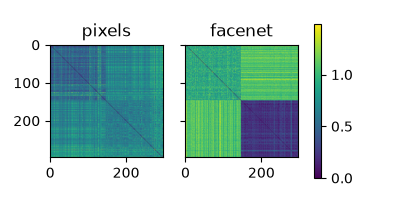
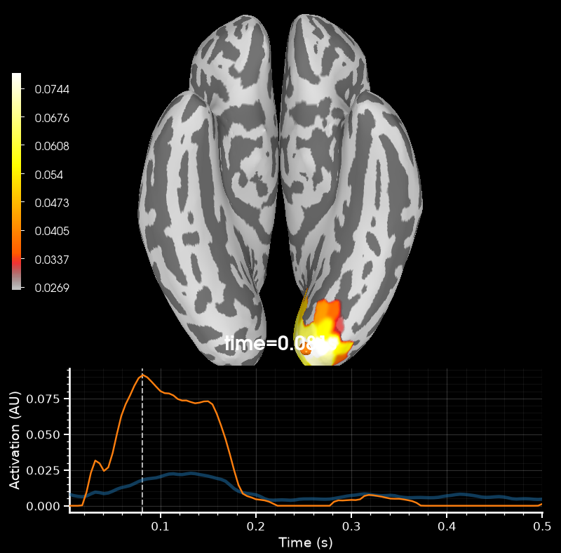
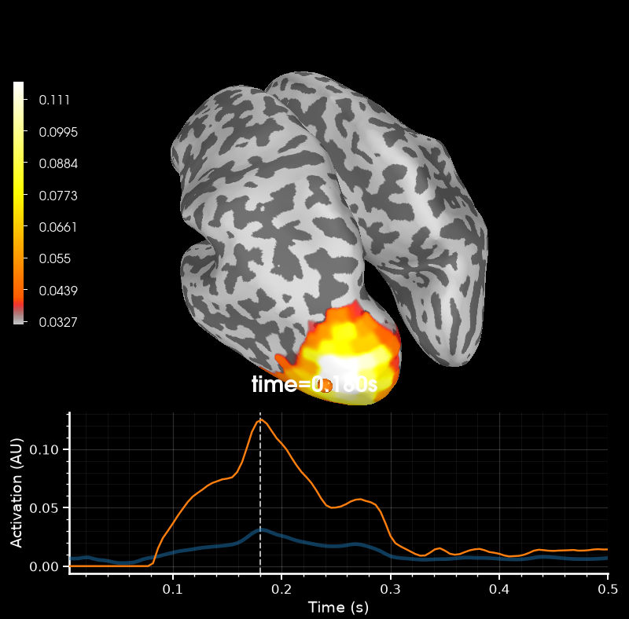

Note
Go to the end to download the full example code.
Tutorial part 2: RSA on source-level MEG data#
In this tutorial, we will perform source-level RSA analysis on MEG data.
If you haven’t done so, I recommend first completing Tutorial part 1: RSA on sensor-level MEG data.
While sensor-level RSA is useful to get a first impression of how neural representations unfold over time, it is not really suited to study differences between brain regions. For this, you want to so RSA in a searchlight pattern across the cortex.
The knowledge you have gained from your sensor-level analysis will serve you well for this part, as the API of MNE-RSA is mostly the same across sensor- and source-level analysis. However, performing a searchlight analysis is a heavy computation that can take a lot of time. Hence, we will also learn about the API regarding restricting the analysis to parts of the data in several ways.
In the cell below, update the data_path variable to point to where you have
extracted the rsa-data.zip
file to.
# ruff: noqa: E402
# sphinx_gallery_thumbnail_number=3
# Set this to where you've extracted `data.zip` to
data_path = "data"
We’ll start by loading the epochs again, but this time, we will restrict them to
only two experimental conditions: the first presentations of famous faces versus
scrambled faces. This will reduce the number of rows/columns in our RDMs and hence
speed up computing and comparing them.
import mne
epochs = mne.read_epochs(f"{data_path}/sub-02/sub-02-epo.fif")
epochs = epochs[["face/famous/first", "scrambled/first"]]
epochs
When we select a subset of epochs, the epochs.metadata field is likewise updated
to match the new selection. This feature is one of the main reasons to use the
.metadata field instead of keeping a separate pandas.DataFrame manually.
epochs.metadata.info()
<class 'pandas.DataFrame'>
Index: 297 entries, 4 to 884
Data columns (total 2 columns):
# Column Non-Null Count Dtype
--- ------ -------------- -----
0 trigger 297 non-null int64
1 file 297 non-null str
dtypes: int64(1), str(1)
memory usage: 7.0 KB
This means we can use the epochs.metadata["file"] column to restrict the pixel and
FaceNet RDMs to just those images still present in the MEG data.
In the cell below, we read the images and FaceNet embeddings and select the proper
rows from the data matrices and use compute_dsm to compute the appropriate RDMs.
from glob import glob
import numpy as np
from PIL import Image
files = sorted(glob(f"{data_path}/stimuli/*.bmp"))
pixels = np.array([np.array(Image.open(f)) for f in files])
store = np.load(f"{data_path}/stimuli/facenet_embeddings.npz")
filenames = store["filenames"]
embeddings = store["embeddings"]
# Select the proper filenames
epochs_filenames = set(epochs.metadata["file"])
selection = [f in epochs_filenames for f in filenames]
filenames = filenames[selection]
# Select the proper rows from `pixels` and `embeddings` and compute the RDMs.
from mne_rsa import compute_rdm
pixel_rdm = compute_rdm(pixels[selection])
facenet_rdm = compute_rdm(embeddings[selection])
Executing the cell below will test whether the RDMs have been properly constructed and plot them.
from mne_rsa import plot_rdms
from scipy.spatial.distance import squareform
if len(pixel_rdm) != len(facenet_rdm):
print("The pixel and FaceNet RDMs are of difference sizes, that can't be right. 🤔")
elif len(pixel_rdm) != 43956:
print("Looks like the RDMs do not have the correct rows. 🤔")
elif (
squareform(pixel_rdm)[:150, :150].mean() >= squareform(pixel_rdm)[150:, 150:].mean()
):
print(
"The pixels RDM doesn't look quite right. Make sure the rows are in "
"alphabetical filename order. 🤔"
)
elif (
squareform(facenet_rdm)[:150, :150].mean()
<= squareform(facenet_rdm)[150:, 150:].mean()
):
print(
"The FaceNet RDM doesn't look quite right. Make sure the rows are in "
"alphabetical filename order. 🤔"
)
else:
print("The RDMs look just right! 😊")
plot_rdms([pixel_rdm, facenet_rdm], names=["pixels", "facenet"])

The RDMs look just right! 😊
To source space!#
In order to perform RSA in source space, we must create source estimates for the epochs. There’s many different ways to do this, and here we’ll use MNE, because we can use the pre-computed inverse operator that is in the data packet and apply it to the epochs to quickly get source estimates.
from mne.minimum_norm import apply_inverse_epochs, read_inverse_operator
inv = read_inverse_operator(f"{data_path}/sub-02/sub-02-inv.fif")
stcs = apply_inverse_epochs(epochs, inv, lambda2=1 / 9)
The result is a list of 297 SourceEstimate objects. Here are the
first 5 of them:
stcs[:5]
[<SourceEstimate | 2050 vertices, subject : sub-02, tmin : -200.0 (ms), tmax : 2899.9999999999995 (ms), tstep : 4.545454545454545 (ms), data shape : (2050, 683), ~10.7 MiB>, <SourceEstimate | 2050 vertices, subject : sub-02, tmin : -200.0 (ms), tmax : 2899.9999999999995 (ms), tstep : 4.545454545454545 (ms), data shape : (2050, 683), ~10.7 MiB>, <SourceEstimate | 2050 vertices, subject : sub-02, tmin : -200.0 (ms), tmax : 2899.9999999999995 (ms), tstep : 4.545454545454545 (ms), data shape : (2050, 683), ~10.7 MiB>, <SourceEstimate | 2050 vertices, subject : sub-02, tmin : -200.0 (ms), tmax : 2899.9999999999995 (ms), tstep : 4.545454545454545 (ms), data shape : (2050, 683), ~10.7 MiB>, <SourceEstimate | 2050 vertices, subject : sub-02, tmin : -200.0 (ms), tmax : 2899.9999999999995 (ms), tstep : 4.545454545454545 (ms), data shape : (2050, 683), ~10.7 MiB>]
The plan is to perform RSA in a searchlight pattern, not only as a sliding window
through time, but also sliding across different locations across the cortex. To this
end, we’ll define spatial patches with a certain radius, and only source points that
fall within a patch are taken into account when computing the RDM for that patch. The
cortex is heavily folded and ideally we define distances between source point as the
shortest path along the cortex, what is known as the geodesic distance, rather than
straight euclidean distance between the XYZ coordinates. MNE-Python is here to help us
out in this regard, as it contains a function to compute such distances and store them
within the mne.SourceSpaces object (through the
mne.add_source_space_distances() function).
Let’s load the file containing the proper source space with pre-computed geodesic distances between source points:
from mne import read_source_spaces
src = read_source_spaces(f"{data_path}/freesurfer/sub-02/bem/sub-02-oct5-src.fif")
To speed things up, let’s restrict the analysis to only the occipital, parietal and
temporal areas on the left hemisphere. There are several ways to tell MNE-RSA which
source points to use, and one of the most convenient ones is to use mne.Label
objects. This allows us to define the desired areas using the “aparc” atlas that
FreeSurfer has constructed for us:
rois = mne.read_labels_from_annot(
"sub-02", parc="aparc", subjects_dir=f"{data_path}/freesurfer", hemi="lh"
)
# These are the regions we're interested in
roi_sel = [
"inferiortemporal-lh",
"middletemporal-lh",
"fusiform-lh",
"bankssts-lh",
"inferiorparietal-lh",
"lateraloccipital-lh",
"lingual-lh",
"pericalcarine-lh",
"cuneus-lh",
"supramarginal-lh",
"superiorparietal-lh",
]
rois = [r for r in rois if r.name in roi_sel]
Source-space RSA#
Time to actually perform the RSA in source space. The function you need is
mne_rsa.rsa_stcs() Take a look at the documentation of that function, which
should look familiar is it is very similar to mne_rsa.rsa_epochs() that you have
used before.
We will perform RSA on the source estimates, using the pixel and FaceNet RDMs as model
RDMs. As was the case with the sensor-level RSA, we will need specify labels to
indicate which image was shown during which epoch and which image corresponds to each
row/column of the pixel_rdm and facenet_rdm. We will use the filenames for
this.
Out searchlight patches will have a spatial radius of 2cm (=0.02 meters) and a
temporal radius of 50 ms (=0.05 seconds). We will restrict the analysis to 0.0 to 0.5
seconds after stimulus onset and to the cortical regions (rois) we’ve selected
above. We can optionally set n_jobs=-1 to use all CPU cores and verbose=True
to show a progress bar.
Depending on the speed of your computer, this may take anywhere from a few seconds to a few minutes to complete.
Restricting source space to 2050 out of [1026 1026] vertices.
Restricting source space to 2050 out of [1025 1025] vertices.
Performing RSA between SourceEstimates and 2 model RDM(s)
Spatial radius: 0.02 meters
Using 373 vertices
Temporal radius: 11 samples
Time interval: 0-0.5 seconds
Number of searchlight patches: 41030
0%| | 0/41030 [00:00<?, ?patch/s]Creating spatio-temporal searchlight patches
0%| | 8/41030 [00:01<1:29:29, 7.64patch/s]
0%| | 12/41030 [00:01<1:02:16, 10.98patch/s]
0%| | 16/41030 [00:01<45:42, 14.95patch/s]
0%| | 20/41030 [00:01<36:22, 18.79patch/s]
0%| | 28/41030 [00:01<23:20, 29.28patch/s]
0%| | 40/41030 [00:01<15:25, 44.28patch/s]
0%| | 64/41030 [00:01<09:27, 72.21patch/s]
0%| | 80/41030 [00:02<08:42, 78.35patch/s]
0%| | 96/41030 [00:02<08:40, 78.58patch/s]
0%| | 112/41030 [00:02<08:11, 83.21patch/s]
0%| | 128/41030 [00:02<09:18, 73.19patch/s]
0%| | 144/41030 [00:02<08:38, 78.90patch/s]
0%| | 160/41030 [00:03<08:17, 82.20patch/s]
0%| | 176/41030 [00:03<08:01, 84.90patch/s]
0%| | 192/41030 [00:03<08:02, 84.67patch/s]
1%| | 208/41030 [00:03<08:12, 82.88patch/s]
1%| | 224/41030 [00:03<08:10, 83.25patch/s]
1%| | 240/41030 [00:04<08:56, 76.06patch/s]
1%| | 256/41030 [00:04<09:03, 74.99patch/s]
1%| | 272/41030 [00:04<08:32, 79.58patch/s]
1%| | 288/41030 [00:04<07:46, 87.26patch/s]
1%| | 304/41030 [00:04<08:00, 84.82patch/s]
1%| | 320/41030 [00:04<07:56, 85.43patch/s]
1%| | 336/41030 [00:05<08:56, 75.87patch/s]
1%| | 352/41030 [00:05<08:46, 77.30patch/s]
1%| | 368/41030 [00:05<08:50, 76.63patch/s]
1%| | 384/41030 [00:05<08:08, 83.24patch/s]
1%| | 400/41030 [00:05<08:06, 83.47patch/s]
1%| | 416/41030 [00:06<07:32, 89.72patch/s]
1%| | 432/41030 [00:06<08:49, 76.63patch/s]
1%| | 448/41030 [00:06<09:02, 74.78patch/s]
1%| | 464/41030 [00:06<08:34, 78.87patch/s]
1%| | 480/41030 [00:06<07:50, 86.15patch/s]
1%| | 496/41030 [00:07<07:58, 84.71patch/s]
1%| | 512/41030 [00:07<08:19, 81.16patch/s]
1%|▏ | 528/41030 [00:07<08:14, 81.84patch/s]
1%|▏ | 544/41030 [00:07<07:36, 88.72patch/s]
1%|▏ | 560/41030 [00:08<09:12, 73.28patch/s]
1%|▏ | 576/41030 [00:08<08:00, 84.26patch/s]
1%|▏ | 592/41030 [00:08<07:52, 85.67patch/s]
1%|▏ | 608/41030 [00:08<08:03, 83.63patch/s]
2%|▏ | 624/41030 [00:08<08:30, 79.19patch/s]
2%|▏ | 640/41030 [00:08<08:15, 81.59patch/s]
2%|▏ | 656/41030 [00:09<09:44, 69.06patch/s]
2%|▏ | 672/41030 [00:09<09:10, 73.30patch/s]
2%|▏ | 688/41030 [00:09<08:48, 76.33patch/s]
2%|▏ | 704/41030 [00:09<08:26, 79.63patch/s]
2%|▏ | 720/41030 [00:10<08:38, 77.71patch/s]
2%|▏ | 736/41030 [00:10<08:41, 77.30patch/s]
2%|▏ | 752/41030 [00:10<10:09, 66.10patch/s]
2%|▏ | 768/41030 [00:10<09:28, 70.85patch/s]
2%|▏ | 784/41030 [00:10<08:57, 74.90patch/s]
2%|▏ | 800/41030 [00:11<08:35, 78.10patch/s]
2%|▏ | 816/41030 [00:11<08:46, 76.43patch/s]
2%|▏ | 832/41030 [00:11<08:45, 76.42patch/s]
2%|▏ | 848/41030 [00:11<10:10, 65.86patch/s]
2%|▏ | 864/41030 [00:12<09:13, 72.57patch/s]
2%|▏ | 880/41030 [00:12<08:45, 76.40patch/s]
2%|▏ | 896/41030 [00:12<08:13, 81.38patch/s]
2%|▏ | 912/41030 [00:12<08:17, 80.63patch/s]
2%|▏ | 928/41030 [00:12<08:03, 82.95patch/s]
2%|▏ | 944/41030 [00:13<09:20, 71.48patch/s]
2%|▏ | 960/41030 [00:13<08:29, 78.70patch/s]
2%|▏ | 976/41030 [00:13<08:44, 76.41patch/s]
2%|▏ | 992/41030 [00:13<08:51, 75.33patch/s]
2%|▏ | 1008/41030 [00:13<08:37, 77.38patch/s]
2%|▏ | 1024/41030 [00:14<08:33, 77.86patch/s]
3%|▎ | 1040/41030 [00:14<09:33, 69.72patch/s]
3%|▎ | 1056/41030 [00:14<08:43, 76.31patch/s]
3%|▎ | 1072/41030 [00:14<07:45, 85.89patch/s]
3%|▎ | 1088/41030 [00:14<08:14, 80.70patch/s]
3%|▎ | 1104/41030 [00:15<07:45, 85.80patch/s]
3%|▎ | 1120/41030 [00:15<07:37, 87.16patch/s]
3%|▎ | 1136/41030 [00:15<07:40, 86.70patch/s]
3%|▎ | 1152/41030 [00:15<09:33, 69.53patch/s]
3%|▎ | 1168/41030 [00:15<08:51, 75.06patch/s]
3%|▎ | 1184/41030 [00:16<08:17, 80.03patch/s]
3%|▎ | 1200/41030 [00:16<08:11, 81.01patch/s]
3%|▎ | 1216/41030 [00:16<07:59, 83.09patch/s]
3%|▎ | 1232/41030 [00:16<07:30, 88.41patch/s]
3%|▎ | 1248/41030 [00:16<09:43, 68.17patch/s]
3%|▎ | 1264/41030 [00:17<08:41, 76.21patch/s]
3%|▎ | 1280/41030 [00:17<08:17, 79.84patch/s]
3%|▎ | 1296/41030 [00:17<08:19, 79.56patch/s]
3%|▎ | 1312/41030 [00:17<07:59, 82.91patch/s]
3%|▎ | 1328/41030 [00:17<07:26, 89.00patch/s]
3%|▎ | 1344/41030 [00:18<09:15, 71.43patch/s]
3%|▎ | 1360/41030 [00:18<09:08, 72.32patch/s]
3%|▎ | 1376/41030 [00:18<08:50, 74.74patch/s]
3%|▎ | 1392/41030 [00:18<08:29, 77.81patch/s]
3%|▎ | 1408/41030 [00:18<08:21, 78.95patch/s]
3%|▎ | 1424/41030 [00:19<08:07, 81.20patch/s]
4%|▎ | 1440/41030 [00:19<09:06, 72.38patch/s]
4%|▎ | 1456/41030 [00:19<08:48, 74.83patch/s]
4%|▎ | 1472/41030 [00:19<08:35, 76.75patch/s]
4%|▎ | 1488/41030 [00:19<08:24, 78.38patch/s]
4%|▎ | 1504/41030 [00:20<08:13, 80.04patch/s]
4%|▎ | 1520/41030 [00:20<08:05, 81.33patch/s]
4%|▎ | 1536/41030 [00:20<08:29, 77.56patch/s]
4%|▍ | 1552/41030 [00:20<09:25, 69.77patch/s]
4%|▍ | 1568/41030 [00:21<08:42, 75.58patch/s]
4%|▍ | 1584/41030 [00:21<08:04, 81.45patch/s]
4%|▍ | 1600/41030 [00:21<07:37, 86.16patch/s]
4%|▍ | 1616/41030 [00:21<07:42, 85.25patch/s]
4%|▍ | 1632/41030 [00:21<08:21, 78.48patch/s]
4%|▍ | 1648/41030 [00:22<08:43, 75.23patch/s]
4%|▍ | 1664/41030 [00:22<08:32, 76.83patch/s]
4%|▍ | 1680/41030 [00:22<08:07, 80.73patch/s]
4%|▍ | 1696/41030 [00:22<07:45, 84.59patch/s]
4%|▍ | 1712/41030 [00:22<07:23, 88.69patch/s]
4%|▍ | 1728/41030 [00:22<06:58, 93.85patch/s]
4%|▍ | 1744/41030 [00:23<07:44, 84.59patch/s]
4%|▍ | 1760/41030 [00:23<08:40, 75.50patch/s]
4%|▍ | 1776/41030 [00:23<08:26, 77.47patch/s]
4%|▍ | 1792/41030 [00:23<08:10, 79.96patch/s]
4%|▍ | 1808/41030 [00:23<08:13, 79.50patch/s]
4%|▍ | 1824/41030 [00:24<08:18, 78.69patch/s]
4%|▍ | 1840/41030 [00:24<07:59, 81.77patch/s]
5%|▍ | 1856/41030 [00:24<09:10, 71.14patch/s]
5%|▍ | 1872/41030 [00:24<07:59, 81.72patch/s]
5%|▍ | 1888/41030 [00:24<08:31, 76.51patch/s]
5%|▍ | 1904/41030 [00:25<07:43, 84.38patch/s]
5%|▍ | 1920/41030 [00:25<07:34, 86.01patch/s]
5%|▍ | 1936/41030 [00:25<07:13, 90.23patch/s]
5%|▍ | 1952/41030 [00:25<08:59, 72.45patch/s]
5%|▍ | 1968/41030 [00:25<08:30, 76.55patch/s]
5%|▍ | 1984/41030 [00:26<08:36, 75.66patch/s]
5%|▍ | 2000/41030 [00:26<08:01, 81.08patch/s]
5%|▍ | 2016/41030 [00:26<07:45, 83.84patch/s]
5%|▍ | 2032/41030 [00:26<07:24, 87.68patch/s]
5%|▍ | 2048/41030 [00:26<07:24, 87.75patch/s]
5%|▌ | 2064/41030 [00:27<07:09, 90.65patch/s]
5%|▌ | 2080/41030 [00:27<07:22, 87.97patch/s]
5%|▌ | 2096/41030 [00:27<07:38, 84.92patch/s]
5%|▌ | 2112/41030 [00:27<07:43, 83.90patch/s]
5%|▌ | 2128/41030 [00:27<07:33, 85.76patch/s]
5%|▌ | 2144/41030 [00:27<07:33, 85.69patch/s]
5%|▌ | 2160/41030 [00:28<08:28, 76.37patch/s]
5%|▌ | 2176/41030 [00:28<08:24, 77.05patch/s]
5%|▌ | 2192/41030 [00:28<08:20, 77.57patch/s]
5%|▌ | 2208/41030 [00:28<07:28, 86.54patch/s]
5%|▌ | 2224/41030 [00:28<07:20, 88.11patch/s]
5%|▌ | 2240/41030 [00:29<06:52, 93.95patch/s]
5%|▌ | 2256/41030 [00:29<07:10, 90.06patch/s]
6%|▌ | 2272/41030 [00:29<07:15, 89.08patch/s]
6%|▌ | 2288/41030 [00:29<08:16, 78.02patch/s]
6%|▌ | 2304/41030 [00:29<07:48, 82.61patch/s]
6%|▌ | 2320/41030 [00:30<07:20, 87.81patch/s]
6%|▌ | 2336/41030 [00:30<07:11, 89.61patch/s]
6%|▌ | 2352/41030 [00:30<07:28, 86.20patch/s]
6%|▌ | 2368/41030 [00:30<07:10, 89.75patch/s]
6%|▌ | 2384/41030 [00:30<07:59, 80.53patch/s]
6%|▌ | 2400/41030 [00:31<07:31, 85.47patch/s]
6%|▌ | 2416/41030 [00:31<07:33, 85.22patch/s]
6%|▌ | 2432/41030 [00:31<07:11, 89.39patch/s]
6%|▌ | 2448/41030 [00:31<07:13, 88.97patch/s]
6%|▌ | 2464/41030 [00:31<07:10, 89.63patch/s]
6%|▌ | 2480/41030 [00:31<07:45, 82.74patch/s]
6%|▌ | 2496/41030 [00:32<09:11, 69.87patch/s]
6%|▌ | 2512/41030 [00:32<08:21, 76.78patch/s]
6%|▌ | 2528/41030 [00:32<07:52, 81.52patch/s]
6%|▌ | 2544/41030 [00:32<07:52, 81.46patch/s]
6%|▌ | 2560/41030 [00:32<07:19, 87.53patch/s]
6%|▋ | 2576/41030 [00:33<07:37, 84.05patch/s]
6%|▋ | 2592/41030 [00:33<07:49, 81.84patch/s]
6%|▋ | 2608/41030 [00:33<08:46, 72.94patch/s]
6%|▋ | 2624/41030 [00:33<08:16, 77.32patch/s]
6%|▋ | 2640/41030 [00:33<07:45, 82.38patch/s]
6%|▋ | 2656/41030 [00:34<07:19, 87.41patch/s]
7%|▋ | 2672/41030 [00:34<07:18, 87.41patch/s]
7%|▋ | 2688/41030 [00:34<08:34, 74.58patch/s]
7%|▋ | 2704/41030 [00:34<08:10, 78.15patch/s]
7%|▋ | 2720/41030 [00:34<07:51, 81.21patch/s]
7%|▋ | 2736/41030 [00:35<07:44, 82.46patch/s]
7%|▋ | 2752/41030 [00:35<07:49, 81.59patch/s]
7%|▋ | 2768/41030 [00:35<07:53, 80.76patch/s]
7%|▋ | 2784/41030 [00:35<08:36, 74.10patch/s]
7%|▋ | 2800/41030 [00:36<08:22, 76.12patch/s]
7%|▋ | 2816/41030 [00:36<09:13, 69.04patch/s]
7%|▋ | 2832/41030 [00:36<08:50, 72.07patch/s]
7%|▋ | 2848/41030 [00:36<08:19, 76.38patch/s]
7%|▋ | 2864/41030 [00:36<07:47, 81.63patch/s]
7%|▋ | 2880/41030 [00:37<08:30, 74.78patch/s]
7%|▋ | 2896/41030 [00:37<09:15, 68.60patch/s]
7%|▋ | 2912/41030 [00:37<08:28, 75.01patch/s]
7%|▋ | 2928/41030 [00:37<08:12, 77.44patch/s]
7%|▋ | 2944/41030 [00:37<07:37, 83.24patch/s]
7%|▋ | 2960/41030 [00:38<07:26, 85.21patch/s]
7%|▋ | 2976/41030 [00:38<07:21, 86.23patch/s]
7%|▋ | 2992/41030 [00:38<07:49, 80.98patch/s]
7%|▋ | 3008/41030 [00:38<08:01, 79.01patch/s]
7%|▋ | 3024/41030 [00:38<07:46, 81.50patch/s]
7%|▋ | 3040/41030 [00:39<07:31, 84.10patch/s]
7%|▋ | 3056/41030 [00:39<07:07, 88.75patch/s]
7%|▋ | 3072/41030 [00:39<07:28, 84.70patch/s]
8%|▊ | 3088/41030 [00:39<07:42, 82.08patch/s]
8%|▊ | 3104/41030 [00:39<08:04, 78.20patch/s]
8%|▊ | 3120/41030 [00:40<08:41, 72.73patch/s]
8%|▊ | 3136/41030 [00:40<08:18, 76.05patch/s]
8%|▊ | 3152/41030 [00:40<08:08, 77.53patch/s]
8%|▊ | 3168/41030 [00:40<07:48, 80.87patch/s]
8%|▊ | 3184/41030 [00:40<07:53, 79.88patch/s]
8%|▊ | 3200/41030 [00:41<08:11, 76.93patch/s]
8%|▊ | 3216/41030 [00:41<08:37, 73.13patch/s]
8%|▊ | 3232/41030 [00:41<09:03, 69.56patch/s]
8%|▊ | 3248/41030 [00:41<08:26, 74.65patch/s]
8%|▊ | 3264/41030 [00:41<08:16, 76.06patch/s]
8%|▊ | 3280/41030 [00:42<08:21, 75.24patch/s]
8%|▊ | 3296/41030 [00:42<08:03, 78.07patch/s]
8%|▊ | 3312/41030 [00:42<07:34, 83.04patch/s]
8%|▊ | 3328/41030 [00:42<08:32, 73.60patch/s]
8%|▊ | 3344/41030 [00:42<07:52, 79.77patch/s]
8%|▊ | 3360/41030 [00:43<08:07, 77.34patch/s]
8%|▊ | 3376/41030 [00:43<08:29, 73.89patch/s]
8%|▊ | 3392/41030 [00:43<08:07, 77.25patch/s]
8%|▊ | 3408/41030 [00:43<08:27, 74.17patch/s]
8%|▊ | 3424/41030 [00:44<08:25, 74.37patch/s]
8%|▊ | 3440/41030 [00:44<08:45, 71.57patch/s]
8%|▊ | 3456/41030 [00:44<08:03, 77.67patch/s]
8%|▊ | 3472/41030 [00:44<07:42, 81.13patch/s]
9%|▊ | 3488/41030 [00:44<08:20, 75.07patch/s]
9%|▊ | 3504/41030 [00:45<07:25, 84.22patch/s]
9%|▊ | 3520/41030 [00:45<08:34, 72.93patch/s]
9%|▊ | 3536/41030 [00:45<07:30, 83.22patch/s]
9%|▊ | 3552/41030 [00:45<07:42, 81.11patch/s]
9%|▊ | 3568/41030 [00:45<07:45, 80.40patch/s]
9%|▊ | 3584/41030 [00:46<08:08, 76.67patch/s]
9%|▉ | 3600/41030 [00:46<08:10, 76.34patch/s]
9%|▉ | 3616/41030 [00:46<07:35, 82.17patch/s]
9%|▉ | 3632/41030 [00:46<07:27, 83.55patch/s]
9%|▉ | 3648/41030 [00:46<07:20, 84.81patch/s]
9%|▉ | 3664/41030 [00:47<07:14, 86.00patch/s]
9%|▉ | 3680/41030 [00:47<07:21, 84.50patch/s]
9%|▉ | 3696/41030 [00:47<07:30, 82.84patch/s]
9%|▉ | 3712/41030 [00:47<07:24, 83.92patch/s]
9%|▉ | 3728/41030 [00:47<07:20, 84.66patch/s]
9%|▉ | 3744/41030 [00:47<07:10, 86.58patch/s]
9%|▉ | 3760/41030 [00:48<07:05, 87.65patch/s]
9%|▉ | 3776/41030 [00:48<07:24, 83.78patch/s]
9%|▉ | 3792/41030 [00:48<07:08, 86.88patch/s]
9%|▉ | 3808/41030 [00:48<08:12, 75.60patch/s]
9%|▉ | 3824/41030 [00:49<08:21, 74.14patch/s]
9%|▉ | 3840/41030 [00:49<08:48, 70.31patch/s]
9%|▉ | 3856/41030 [00:49<08:10, 75.81patch/s]
9%|▉ | 3872/41030 [00:49<07:33, 82.00patch/s]
9%|▉ | 3888/41030 [00:49<07:40, 80.58patch/s]
10%|▉ | 3904/41030 [00:50<08:08, 76.01patch/s]
10%|▉ | 3920/41030 [00:50<08:51, 69.79patch/s]
10%|▉ | 3936/41030 [00:50<08:09, 75.76patch/s]
10%|▉ | 3952/41030 [00:50<07:50, 78.81patch/s]
10%|▉ | 3968/41030 [00:50<07:48, 79.04patch/s]
10%|▉ | 3984/41030 [00:51<07:43, 79.92patch/s]
10%|▉ | 4000/41030 [00:51<08:35, 71.77patch/s]
10%|▉ | 4016/41030 [00:51<08:14, 74.79patch/s]
10%|▉ | 4032/41030 [00:51<07:46, 79.23patch/s]
10%|▉ | 4048/41030 [00:51<07:28, 82.40patch/s]
10%|▉ | 4064/41030 [00:52<07:37, 80.75patch/s]
10%|▉ | 4080/41030 [00:52<06:55, 88.90patch/s]
10%|▉ | 4096/41030 [00:52<07:58, 77.19patch/s]
10%|█ | 4112/41030 [00:52<07:18, 84.28patch/s]
10%|█ | 4128/41030 [00:52<07:02, 87.31patch/s]
10%|█ | 4144/41030 [00:53<07:39, 80.25patch/s]
10%|█ | 4160/41030 [00:53<07:28, 82.16patch/s]
10%|█ | 4176/41030 [00:53<06:54, 88.97patch/s]
10%|█ | 4192/41030 [00:53<06:43, 91.39patch/s]
10%|█ | 4208/41030 [00:53<08:57, 68.50patch/s]
10%|█ | 4224/41030 [00:54<08:00, 76.64patch/s]
10%|█ | 4240/41030 [00:54<07:21, 83.32patch/s]
10%|█ | 4256/41030 [00:54<07:33, 81.03patch/s]
10%|█ | 4272/41030 [00:54<07:25, 82.46patch/s]
10%|█ | 4288/41030 [00:54<07:27, 82.03patch/s]
10%|█ | 4304/41030 [00:54<06:51, 89.22patch/s]
11%|█ | 4320/41030 [00:55<08:02, 76.03patch/s]
11%|█ | 4336/41030 [00:55<08:01, 76.20patch/s]
11%|█ | 4352/41030 [00:55<08:08, 75.02patch/s]
11%|█ | 4368/41030 [00:55<07:27, 81.94patch/s]
11%|█ | 4384/41030 [00:56<07:19, 83.36patch/s]
11%|█ | 4400/41030 [00:56<07:13, 84.59patch/s]
11%|█ | 4416/41030 [00:56<07:30, 81.28patch/s]
11%|█ | 4432/41030 [00:56<07:34, 80.51patch/s]
11%|█ | 4448/41030 [00:56<07:53, 77.32patch/s]
11%|█ | 4464/41030 [00:57<08:59, 67.76patch/s]
11%|█ | 4480/41030 [00:57<08:38, 70.56patch/s]
11%|█ | 4496/41030 [00:57<08:09, 74.60patch/s]
11%|█ | 4512/41030 [00:57<09:05, 66.94patch/s]
11%|█ | 4528/41030 [00:58<08:49, 68.94patch/s]
11%|█ | 4544/41030 [00:58<08:10, 74.34patch/s]
11%|█ | 4560/41030 [00:58<08:35, 70.70patch/s]
11%|█ | 4576/41030 [00:58<07:46, 78.13patch/s]
11%|█ | 4592/41030 [00:58<07:37, 79.58patch/s]
11%|█ | 4608/41030 [00:59<08:13, 73.79patch/s]
11%|█▏ | 4624/41030 [00:59<07:47, 77.84patch/s]
11%|█▏ | 4640/41030 [00:59<07:28, 81.11patch/s]
11%|█▏ | 4656/41030 [00:59<07:21, 82.43patch/s]
11%|█▏ | 4672/41030 [00:59<07:51, 77.16patch/s]
11%|█▏ | 4688/41030 [01:00<07:38, 79.26patch/s]
11%|█▏ | 4704/41030 [01:00<07:03, 85.77patch/s]
12%|█▏ | 4720/41030 [01:00<08:43, 69.32patch/s]
12%|█▏ | 4736/41030 [01:00<08:05, 74.81patch/s]
12%|█▏ | 4752/41030 [01:00<07:27, 81.15patch/s]
12%|█▏ | 4768/41030 [01:01<08:07, 74.42patch/s]
12%|█▏ | 4784/41030 [01:01<07:48, 77.29patch/s]
12%|█▏ | 4800/41030 [01:01<07:13, 83.55patch/s]
12%|█▏ | 4816/41030 [01:01<07:36, 79.39patch/s]
12%|█▏ | 4832/41030 [01:01<07:22, 81.86patch/s]
12%|█▏ | 4848/41030 [01:02<07:17, 82.68patch/s]
12%|█▏ | 4864/41030 [01:02<07:11, 83.78patch/s]
12%|█▏ | 4880/41030 [01:02<07:18, 82.50patch/s]
12%|█▏ | 4896/41030 [01:02<07:15, 82.95patch/s]
12%|█▏ | 4912/41030 [01:02<08:19, 72.29patch/s]
12%|█▏ | 4928/41030 [01:03<07:33, 79.55patch/s]
12%|█▏ | 4944/41030 [01:03<07:30, 80.05patch/s]
12%|█▏ | 4960/41030 [01:03<07:26, 80.77patch/s]
12%|█▏ | 4976/41030 [01:03<07:02, 85.44patch/s]
12%|█▏ | 4992/41030 [01:03<08:16, 72.52patch/s]
12%|█▏ | 5008/41030 [01:04<07:39, 78.38patch/s]
12%|█▏ | 5024/41030 [01:04<07:51, 76.38patch/s]
12%|█▏ | 5040/41030 [01:04<08:33, 70.10patch/s]
12%|█▏ | 5056/41030 [01:04<08:04, 74.22patch/s]
12%|█▏ | 5072/41030 [01:04<08:00, 74.84patch/s]
12%|█▏ | 5088/41030 [01:05<08:15, 72.58patch/s]
12%|█▏ | 5104/41030 [01:05<08:23, 71.39patch/s]
12%|█▏ | 5120/41030 [01:05<07:55, 75.56patch/s]
13%|█▎ | 5136/41030 [01:05<08:12, 72.88patch/s]
13%|█▎ | 5152/41030 [01:06<08:00, 74.66patch/s]
13%|█▎ | 5168/41030 [01:06<07:47, 76.73patch/s]
13%|█▎ | 5184/41030 [01:06<07:51, 76.10patch/s]
13%|█▎ | 5200/41030 [01:06<09:04, 65.79patch/s]
13%|█▎ | 5216/41030 [01:07<09:23, 63.54patch/s]
13%|█▎ | 5232/41030 [01:07<08:49, 67.58patch/s]
13%|█▎ | 5248/41030 [01:07<09:16, 64.27patch/s]
13%|█▎ | 5264/41030 [01:07<10:17, 57.87patch/s]
13%|█▎ | 5280/41030 [01:08<10:44, 55.49patch/s]
13%|█▎ | 5296/41030 [01:08<10:35, 56.19patch/s]
13%|█▎ | 5312/41030 [01:08<09:49, 60.62patch/s]
13%|█▎ | 5328/41030 [01:08<10:01, 59.38patch/s]
13%|█▎ | 5344/41030 [01:09<08:59, 66.20patch/s]
13%|█▎ | 5360/41030 [01:09<08:56, 66.43patch/s]
13%|█▎ | 5376/41030 [01:09<08:20, 71.21patch/s]
13%|█▎ | 5392/41030 [01:09<08:10, 72.62patch/s]
13%|█▎ | 5408/41030 [01:09<07:19, 81.06patch/s]
13%|█▎ | 5424/41030 [01:10<07:30, 79.06patch/s]
13%|█▎ | 5440/41030 [01:10<08:31, 69.52patch/s]
13%|█▎ | 5456/41030 [01:10<07:37, 77.84patch/s]
13%|█▎ | 5472/41030 [01:10<08:29, 69.85patch/s]
13%|█▎ | 5488/41030 [01:11<08:34, 69.08patch/s]
13%|█▎ | 5504/41030 [01:11<08:12, 72.18patch/s]
13%|█▎ | 5520/41030 [01:11<07:50, 75.52patch/s]
13%|█▎ | 5536/41030 [01:11<08:22, 70.61patch/s]
14%|█▎ | 5552/41030 [01:12<08:47, 67.21patch/s]
14%|█▎ | 5568/41030 [01:12<08:54, 66.40patch/s]
14%|█▎ | 5584/41030 [01:12<08:21, 70.71patch/s]
14%|█▎ | 5600/41030 [01:12<08:09, 72.45patch/s]
14%|█▎ | 5616/41030 [01:12<07:41, 76.68patch/s]
14%|█▎ | 5632/41030 [01:13<07:57, 74.19patch/s]
14%|█▍ | 5648/41030 [01:13<08:15, 71.37patch/s]
14%|█▍ | 5664/41030 [01:13<08:27, 69.72patch/s]
14%|█▍ | 5680/41030 [01:13<08:25, 69.94patch/s]
14%|█▍ | 5696/41030 [01:14<08:25, 69.92patch/s]
14%|█▍ | 5712/41030 [01:14<07:54, 74.49patch/s]
14%|█▍ | 5728/41030 [01:14<08:38, 68.10patch/s]
14%|█▍ | 5744/41030 [01:14<08:35, 68.44patch/s]
14%|█▍ | 5760/41030 [01:14<08:25, 69.84patch/s]
14%|█▍ | 5776/41030 [01:15<08:05, 72.64patch/s]
14%|█▍ | 5792/41030 [01:15<07:52, 74.62patch/s]
14%|█▍ | 5808/41030 [01:15<07:34, 77.50patch/s]
14%|█▍ | 5824/41030 [01:15<07:41, 76.34patch/s]
14%|█▍ | 5840/41030 [01:16<08:12, 71.41patch/s]
14%|█▍ | 5856/41030 [01:16<07:59, 73.39patch/s]
14%|█▍ | 5872/41030 [01:16<07:54, 74.07patch/s]
14%|█▍ | 5888/41030 [01:16<07:53, 74.24patch/s]
14%|█▍ | 5904/41030 [01:16<08:21, 70.10patch/s]
14%|█▍ | 5920/41030 [01:17<09:35, 61.01patch/s]
14%|█▍ | 5936/41030 [01:17<09:24, 62.20patch/s]
15%|█▍ | 5952/41030 [01:17<08:38, 67.63patch/s]
15%|█▍ | 5968/41030 [01:17<08:07, 71.92patch/s]
15%|█▍ | 5984/41030 [01:18<08:11, 71.34patch/s]
15%|█▍ | 6000/41030 [01:18<07:57, 73.43patch/s]
15%|█▍ | 6016/41030 [01:18<08:26, 69.16patch/s]
15%|█▍ | 6032/41030 [01:18<08:29, 68.67patch/s]
15%|█▍ | 6048/41030 [01:19<09:14, 63.06patch/s]
15%|█▍ | 6064/41030 [01:19<08:27, 68.91patch/s]
15%|█▍ | 6080/41030 [01:19<08:40, 67.19patch/s]
15%|█▍ | 6096/41030 [01:19<08:38, 67.41patch/s]
15%|█▍ | 6112/41030 [01:20<10:57, 53.14patch/s]
15%|█▍ | 6128/41030 [01:20<10:33, 55.05patch/s]
15%|█▍ | 6144/41030 [01:20<10:09, 57.22patch/s]
15%|█▌ | 6160/41030 [01:21<10:22, 56.02patch/s]
15%|█▌ | 6176/41030 [01:21<11:35, 50.11patch/s]
15%|█▌ | 6192/41030 [01:21<10:13, 56.77patch/s]
15%|█▌ | 6208/41030 [01:21<10:27, 55.51patch/s]
15%|█▌ | 6224/41030 [01:22<09:36, 60.33patch/s]
15%|█▌ | 6240/41030 [01:22<08:52, 65.30patch/s]
15%|█▌ | 6256/41030 [01:22<08:18, 69.75patch/s]
15%|█▌ | 6272/41030 [01:22<08:37, 67.22patch/s]
15%|█▌ | 6288/41030 [01:23<08:17, 69.88patch/s]
15%|█▌ | 6304/41030 [01:23<08:20, 69.41patch/s]
15%|█▌ | 6320/41030 [01:23<07:59, 72.37patch/s]
15%|█▌ | 6336/41030 [01:23<08:07, 71.21patch/s]
15%|█▌ | 6352/41030 [01:23<07:43, 74.79patch/s]
16%|█▌ | 6368/41030 [01:24<07:33, 76.40patch/s]
16%|█▌ | 6384/41030 [01:24<08:01, 72.03patch/s]
16%|█▌ | 6400/41030 [01:24<08:08, 70.94patch/s]
16%|█▌ | 6416/41030 [01:24<07:42, 74.81patch/s]
16%|█▌ | 6432/41030 [01:24<07:41, 75.04patch/s]
16%|█▌ | 6448/41030 [01:25<08:00, 71.99patch/s]
16%|█▌ | 6464/41030 [01:25<08:52, 64.91patch/s]
16%|█▌ | 6480/41030 [01:25<08:09, 70.53patch/s]
16%|█▌ | 6496/41030 [01:25<07:15, 79.21patch/s]
16%|█▌ | 6512/41030 [01:25<06:44, 85.43patch/s]
16%|█▌ | 6528/41030 [01:26<06:28, 88.90patch/s]
16%|█▌ | 6544/41030 [01:26<07:38, 75.22patch/s]
16%|█▌ | 6560/41030 [01:26<07:21, 78.13patch/s]
16%|█▌ | 6576/41030 [01:26<07:35, 75.71patch/s]
16%|█▌ | 6592/41030 [01:27<07:19, 78.37patch/s]
16%|█▌ | 6608/41030 [01:27<07:10, 79.97patch/s]
16%|█▌ | 6624/41030 [01:27<06:56, 82.56patch/s]
16%|█▌ | 6640/41030 [01:27<07:12, 79.51patch/s]
16%|█▌ | 6656/41030 [01:27<07:05, 80.83patch/s]
16%|█▋ | 6672/41030 [01:28<07:12, 79.50patch/s]
16%|█▋ | 6688/41030 [01:28<07:30, 76.22patch/s]
16%|█▋ | 6704/41030 [01:28<07:07, 80.25patch/s]
16%|█▋ | 6720/41030 [01:28<07:02, 81.16patch/s]
16%|█▋ | 6736/41030 [01:28<06:28, 88.35patch/s]
16%|█▋ | 6752/41030 [01:29<07:18, 78.17patch/s]
16%|█▋ | 6768/41030 [01:29<07:22, 77.46patch/s]
17%|█▋ | 6784/41030 [01:29<07:42, 74.11patch/s]
17%|█▋ | 6800/41030 [01:29<07:50, 72.73patch/s]
17%|█▋ | 6816/41030 [01:29<07:37, 74.84patch/s]
17%|█▋ | 6832/41030 [01:30<07:20, 77.60patch/s]
17%|█▋ | 6848/41030 [01:30<08:23, 67.85patch/s]
17%|█▋ | 6864/41030 [01:30<08:51, 64.31patch/s]
17%|█▋ | 6880/41030 [01:30<08:54, 63.92patch/s]
17%|█▋ | 6896/41030 [01:31<09:27, 60.18patch/s]
17%|█▋ | 6912/41030 [01:31<10:02, 56.64patch/s]
17%|█▋ | 6928/41030 [01:31<09:50, 57.73patch/s]
17%|█▋ | 6944/41030 [01:32<09:09, 62.05patch/s]
17%|█▋ | 6960/41030 [01:32<10:43, 52.92patch/s]
17%|█▋ | 6976/41030 [01:32<09:39, 58.77patch/s]
17%|█▋ | 6992/41030 [01:32<08:17, 68.44patch/s]
17%|█▋ | 7008/41030 [01:33<08:28, 66.96patch/s]
17%|█▋ | 7024/41030 [01:33<08:15, 68.68patch/s]
17%|█▋ | 7040/41030 [01:33<07:19, 77.38patch/s]
17%|█▋ | 7056/41030 [01:33<07:34, 74.70patch/s]
17%|█▋ | 7072/41030 [01:33<07:28, 75.70patch/s]
17%|█▋ | 7088/41030 [01:34<07:11, 78.64patch/s]
17%|█▋ | 7104/41030 [01:34<07:18, 77.32patch/s]
17%|█▋ | 7120/41030 [01:34<07:09, 79.01patch/s]
17%|█▋ | 7136/41030 [01:34<07:08, 79.10patch/s]
17%|█▋ | 7152/41030 [01:34<07:50, 71.96patch/s]
17%|█▋ | 7168/41030 [01:35<07:34, 74.50patch/s]
18%|█▊ | 7184/41030 [01:35<07:34, 74.39patch/s]
18%|█▊ | 7200/41030 [01:35<07:03, 79.86patch/s]
18%|█▊ | 7216/41030 [01:35<07:21, 76.62patch/s]
18%|█▊ | 7232/41030 [01:35<06:47, 82.86patch/s]
18%|█▊ | 7248/41030 [01:36<06:26, 87.47patch/s]
18%|█▊ | 7264/41030 [01:36<07:17, 77.22patch/s]
18%|█▊ | 7280/41030 [01:36<06:58, 80.57patch/s]
18%|█▊ | 7296/41030 [01:36<07:01, 79.97patch/s]
18%|█▊ | 7312/41030 [01:36<07:01, 79.93patch/s]
18%|█▊ | 7328/41030 [01:37<06:49, 82.39patch/s]
18%|█▊ | 7344/41030 [01:37<07:02, 79.67patch/s]
18%|█▊ | 7360/41030 [01:37<08:08, 68.86patch/s]
18%|█▊ | 7376/41030 [01:37<07:57, 70.41patch/s]
18%|█▊ | 7392/41030 [01:37<07:38, 73.37patch/s]
18%|█▊ | 7408/41030 [01:38<06:57, 80.62patch/s]
18%|█▊ | 7424/41030 [01:38<07:13, 77.48patch/s]
18%|█▊ | 7440/41030 [01:38<07:19, 76.46patch/s]
18%|█▊ | 7456/41030 [01:38<08:42, 64.32patch/s]
18%|█▊ | 7472/41030 [01:39<08:02, 69.54patch/s]
18%|█▊ | 7488/41030 [01:39<07:35, 73.65patch/s]
18%|█▊ | 7504/41030 [01:39<07:09, 78.13patch/s]
18%|█▊ | 7520/41030 [01:39<07:53, 70.80patch/s]
18%|█▊ | 7536/41030 [01:39<07:22, 75.67patch/s]
18%|█▊ | 7552/41030 [01:40<07:42, 72.44patch/s]
18%|█▊ | 7568/41030 [01:40<07:05, 78.70patch/s]
18%|█▊ | 7584/41030 [01:40<06:37, 84.07patch/s]
19%|█▊ | 7600/41030 [01:40<06:44, 82.64patch/s]
19%|█▊ | 7616/41030 [01:40<07:31, 74.05patch/s]
19%|█▊ | 7632/41030 [01:41<08:23, 66.37patch/s]
19%|█▊ | 7648/41030 [01:41<07:50, 71.01patch/s]
19%|█▊ | 7664/41030 [01:41<07:53, 70.53patch/s]
19%|█▊ | 7680/41030 [01:41<07:46, 71.50patch/s]
19%|█▉ | 7696/41030 [01:42<07:45, 71.56patch/s]
19%|█▉ | 7712/41030 [01:42<07:57, 69.73patch/s]
19%|█▉ | 7728/41030 [01:42<08:03, 68.89patch/s]
19%|█▉ | 7744/41030 [01:42<08:43, 63.59patch/s]
19%|█▉ | 7760/41030 [01:43<08:25, 65.82patch/s]
19%|█▉ | 7776/41030 [01:43<08:15, 67.07patch/s]
19%|█▉ | 7792/41030 [01:43<07:57, 69.66patch/s]
19%|█▉ | 7808/41030 [01:43<08:17, 66.84patch/s]
19%|█▉ | 7824/41030 [01:44<09:41, 57.13patch/s]
19%|█▉ | 7840/41030 [01:44<08:40, 63.76patch/s]
19%|█▉ | 7856/41030 [01:44<08:19, 66.38patch/s]
19%|█▉ | 7872/41030 [01:44<07:52, 70.23patch/s]
19%|█▉ | 7888/41030 [01:44<07:50, 70.49patch/s]
19%|█▉ | 7904/41030 [01:45<08:39, 63.74patch/s]
19%|█▉ | 7920/41030 [01:45<08:09, 67.63patch/s]
19%|█▉ | 7936/41030 [01:45<07:46, 70.88patch/s]
19%|█▉ | 7952/41030 [01:45<07:59, 68.96patch/s]
19%|█▉ | 7968/41030 [01:46<07:58, 69.14patch/s]
19%|█▉ | 7984/41030 [01:46<07:37, 72.17patch/s]
19%|█▉ | 8000/41030 [01:46<08:16, 66.57patch/s]
20%|█▉ | 8016/41030 [01:46<09:12, 59.79patch/s]
20%|█▉ | 8032/41030 [01:47<08:26, 65.18patch/s]
20%|█▉ | 8048/41030 [01:47<07:57, 69.03patch/s]
20%|█▉ | 8064/41030 [01:47<07:47, 70.45patch/s]
20%|█▉ | 8080/41030 [01:47<08:13, 66.71patch/s]
20%|█▉ | 8096/41030 [01:48<09:09, 59.92patch/s]
20%|█▉ | 8112/41030 [01:48<08:42, 63.01patch/s]
20%|█▉ | 8128/41030 [01:48<08:19, 65.84patch/s]
20%|█▉ | 8144/41030 [01:48<08:01, 68.34patch/s]
20%|█▉ | 8160/41030 [01:49<08:12, 66.75patch/s]
20%|█▉ | 8176/41030 [01:49<08:53, 61.59patch/s]
20%|█▉ | 8192/41030 [01:49<08:38, 63.38patch/s]
20%|██ | 8208/41030 [01:49<08:11, 66.83patch/s]
20%|██ | 8224/41030 [01:50<07:49, 69.80patch/s]
20%|██ | 8240/41030 [01:50<07:17, 74.86patch/s]
20%|██ | 8256/41030 [01:50<08:37, 63.29patch/s]
20%|██ | 8272/41030 [01:50<08:00, 68.13patch/s]
20%|██ | 8288/41030 [01:50<07:26, 73.36patch/s]
20%|██ | 8304/41030 [01:51<07:41, 70.93patch/s]
20%|██ | 8320/41030 [01:51<07:37, 71.46patch/s]
20%|██ | 8336/41030 [01:51<07:49, 69.64patch/s]
20%|██ | 8352/41030 [01:51<08:11, 66.44patch/s]
20%|██ | 8368/41030 [01:52<07:35, 71.68patch/s]
20%|██ | 8384/41030 [01:52<07:43, 70.47patch/s]
20%|██ | 8400/41030 [01:52<07:53, 68.94patch/s]
21%|██ | 8416/41030 [01:52<06:55, 78.42patch/s]
21%|██ | 8432/41030 [01:53<07:49, 69.49patch/s]
21%|██ | 8448/41030 [01:53<07:21, 73.75patch/s]
21%|██ | 8464/41030 [01:53<07:10, 75.73patch/s]
21%|██ | 8480/41030 [01:53<06:46, 80.04patch/s]
21%|██ | 8496/41030 [01:53<06:51, 79.12patch/s]
21%|██ | 8512/41030 [01:54<07:29, 72.27patch/s]
21%|██ | 8528/41030 [01:54<08:16, 65.48patch/s]
21%|██ | 8544/41030 [01:54<07:51, 68.89patch/s]
21%|██ | 8560/41030 [01:54<07:15, 74.61patch/s]
21%|██ | 8576/41030 [01:54<07:07, 75.83patch/s]
21%|██ | 8592/41030 [01:55<07:27, 72.42patch/s]
21%|██ | 8608/41030 [01:55<08:50, 61.12patch/s]
21%|██ | 8624/41030 [01:55<08:07, 66.44patch/s]
21%|██ | 8640/41030 [01:55<07:17, 74.09patch/s]
21%|██ | 8656/41030 [01:56<07:00, 77.08patch/s]
21%|██ | 8672/41030 [01:56<06:34, 82.01patch/s]
21%|██ | 8688/41030 [01:56<06:07, 88.11patch/s]
21%|██ | 8704/41030 [01:56<08:17, 64.99patch/s]
21%|██▏ | 8720/41030 [01:56<07:26, 72.41patch/s]
21%|██▏ | 8736/41030 [01:57<07:50, 68.59patch/s]
21%|██▏ | 8752/41030 [01:57<08:16, 65.02patch/s]
21%|██▏ | 8768/41030 [01:57<08:47, 61.22patch/s]
21%|██▏ | 8784/41030 [01:58<09:57, 53.94patch/s]
21%|██▏ | 8800/41030 [01:58<09:52, 54.41patch/s]
21%|██▏ | 8816/41030 [01:58<09:47, 54.86patch/s]
22%|██▏ | 8832/41030 [01:59<09:32, 56.20patch/s]
22%|██▏ | 8848/41030 [01:59<11:22, 47.12patch/s]
22%|██▏ | 8864/41030 [01:59<10:19, 51.92patch/s]
22%|██▏ | 8880/41030 [01:59<09:32, 56.13patch/s]
22%|██▏ | 8896/41030 [02:00<09:53, 54.18patch/s]
22%|██▏ | 8912/41030 [02:00<09:17, 57.60patch/s]
22%|██▏ | 8928/41030 [02:00<11:09, 47.92patch/s]
22%|██▏ | 8944/41030 [02:01<10:32, 50.73patch/s]
22%|██▏ | 8960/41030 [02:01<10:09, 52.61patch/s]
22%|██▏ | 8976/41030 [02:01<09:13, 57.90patch/s]
22%|██▏ | 8992/41030 [02:02<11:00, 48.52patch/s]
22%|██▏ | 9008/41030 [02:02<10:12, 52.32patch/s]
22%|██▏ | 9024/41030 [02:02<09:57, 53.57patch/s]
22%|██▏ | 9040/41030 [02:02<09:35, 55.56patch/s]
22%|██▏ | 9056/41030 [02:03<09:29, 56.15patch/s]
22%|██▏ | 9072/41030 [02:03<08:54, 59.76patch/s]
22%|██▏ | 9088/41030 [02:03<08:34, 62.09patch/s]
22%|██▏ | 9104/41030 [02:03<07:50, 67.79patch/s]
22%|██▏ | 9120/41030 [02:04<07:27, 71.23patch/s]
22%|██▏ | 9136/41030 [02:04<07:18, 72.67patch/s]
22%|██▏ | 9152/41030 [02:04<08:04, 65.86patch/s]
22%|██▏ | 9168/41030 [02:04<07:47, 68.22patch/s]
22%|██▏ | 9184/41030 [02:04<06:59, 75.92patch/s]
22%|██▏ | 9200/41030 [02:05<07:00, 75.70patch/s]
22%|██▏ | 9216/41030 [02:05<07:02, 75.33patch/s]
23%|██▎ | 9232/41030 [02:05<06:50, 77.51patch/s]
23%|██▎ | 9248/41030 [02:05<07:41, 68.93patch/s]
23%|██▎ | 9264/41030 [02:06<07:26, 71.15patch/s]
23%|██▎ | 9280/41030 [02:06<07:38, 69.29patch/s]
23%|██▎ | 9296/41030 [02:06<07:32, 70.14patch/s]
23%|██▎ | 9312/41030 [02:06<07:31, 70.21patch/s]
23%|██▎ | 9328/41030 [02:07<08:09, 64.77patch/s]
23%|██▎ | 9344/41030 [02:07<08:11, 64.40patch/s]
23%|██▎ | 9360/41030 [02:07<08:19, 63.34patch/s]
23%|██▎ | 9376/41030 [02:07<07:56, 66.38patch/s]
23%|██▎ | 9392/41030 [02:08<07:55, 66.51patch/s]
23%|██▎ | 9408/41030 [02:08<07:10, 73.43patch/s]
23%|██▎ | 9424/41030 [02:08<08:23, 62.83patch/s]
23%|██▎ | 9440/41030 [02:08<08:08, 64.63patch/s]
23%|██▎ | 9456/41030 [02:09<08:14, 63.82patch/s]
23%|██▎ | 9472/41030 [02:09<07:38, 68.84patch/s]
23%|██▎ | 9488/41030 [02:09<07:21, 71.43patch/s]
23%|██▎ | 9504/41030 [02:09<09:05, 57.74patch/s]
23%|██▎ | 9520/41030 [02:10<09:16, 56.59patch/s]
23%|██▎ | 9536/41030 [02:10<08:53, 59.02patch/s]
23%|██▎ | 9552/41030 [02:10<08:48, 59.55patch/s]
23%|██▎ | 9568/41030 [02:11<10:30, 49.90patch/s]
23%|██▎ | 9584/41030 [02:11<09:28, 55.27patch/s]
23%|██▎ | 9600/41030 [02:11<09:27, 55.34patch/s]
23%|██▎ | 9616/41030 [02:11<08:27, 61.93patch/s]
23%|██▎ | 9632/41030 [02:11<07:37, 68.60patch/s]
24%|██▎ | 9648/41030 [02:12<07:44, 67.51patch/s]
24%|██▎ | 9664/41030 [02:12<07:04, 73.90patch/s]
24%|██▎ | 9680/41030 [02:12<06:38, 78.72patch/s]
24%|██▎ | 9696/41030 [02:12<07:12, 72.43patch/s]
24%|██▎ | 9712/41030 [02:13<07:23, 70.69patch/s]
24%|██▎ | 9728/41030 [02:13<07:20, 71.02patch/s]
24%|██▎ | 9744/41030 [02:13<07:53, 66.03patch/s]
24%|██▍ | 9760/41030 [02:13<07:36, 68.56patch/s]
24%|██▍ | 9776/41030 [02:13<07:20, 70.99patch/s]
24%|██▍ | 9792/41030 [02:14<07:09, 72.74patch/s]
24%|██▍ | 9808/41030 [02:14<07:08, 72.86patch/s]
24%|██▍ | 9824/41030 [02:14<07:25, 69.98patch/s]
24%|██▍ | 9840/41030 [02:14<07:57, 65.30patch/s]
24%|██▍ | 9856/41030 [02:15<07:41, 67.54patch/s]
24%|██▍ | 9872/41030 [02:15<07:24, 70.14patch/s]
24%|██▍ | 9888/41030 [02:15<07:27, 69.59patch/s]
24%|██▍ | 9904/41030 [02:15<07:54, 65.56patch/s]
24%|██▍ | 9920/41030 [02:16<08:00, 64.73patch/s]
24%|██▍ | 9936/41030 [02:16<07:19, 70.70patch/s]
24%|██▍ | 9952/41030 [02:16<06:59, 74.09patch/s]
24%|██▍ | 9968/41030 [02:16<06:47, 76.19patch/s]
24%|██▍ | 9984/41030 [02:16<06:39, 77.63patch/s]
24%|██▍ | 10000/41030 [02:17<06:34, 78.71patch/s]
24%|██▍ | 10016/41030 [02:17<06:20, 81.47patch/s]
24%|██▍ | 10032/41030 [02:17<06:50, 75.52patch/s]
24%|██▍ | 10048/41030 [02:17<06:28, 79.68patch/s]
25%|██▍ | 10064/41030 [02:17<06:45, 76.34patch/s]
25%|██▍ | 10080/41030 [02:18<06:54, 74.73patch/s]
25%|██▍ | 10096/41030 [02:18<07:07, 72.38patch/s]
25%|██▍ | 10112/41030 [02:18<06:55, 74.47patch/s]
25%|██▍ | 10128/41030 [02:18<07:38, 67.34patch/s]
25%|██▍ | 10144/41030 [02:19<07:14, 71.08patch/s]
25%|██▍ | 10160/41030 [02:19<08:09, 63.02patch/s]
25%|██▍ | 10176/41030 [02:19<08:10, 62.90patch/s]
25%|██▍ | 10192/41030 [02:19<08:51, 58.07patch/s]
25%|██▍ | 10208/41030 [02:20<09:21, 54.85patch/s]
25%|██▍ | 10224/41030 [02:20<09:49, 52.25patch/s]
25%|██▍ | 10240/41030 [02:20<09:43, 52.78patch/s]
25%|██▍ | 10256/41030 [02:21<09:14, 55.48patch/s]
25%|██▌ | 10272/41030 [02:21<10:03, 50.94patch/s]
25%|██▌ | 10288/41030 [02:21<08:46, 58.36patch/s]
25%|██▌ | 10304/41030 [02:21<08:08, 62.85patch/s]
25%|██▌ | 10320/41030 [02:22<07:57, 64.31patch/s]
25%|██▌ | 10336/41030 [02:22<07:43, 66.19patch/s]
25%|██▌ | 10352/41030 [02:22<09:21, 54.67patch/s]
25%|██▌ | 10368/41030 [02:23<08:33, 59.66patch/s]
25%|██▌ | 10384/41030 [02:23<08:22, 60.97patch/s]
25%|██▌ | 10400/41030 [02:23<07:56, 64.25patch/s]
25%|██▌ | 10416/41030 [02:23<07:51, 64.88patch/s]
25%|██▌ | 10432/41030 [02:23<07:54, 64.44patch/s]
25%|██▌ | 10448/41030 [02:24<08:18, 61.34patch/s]
26%|██▌ | 10464/41030 [02:24<07:52, 64.75patch/s]
26%|██▌ | 10480/41030 [02:24<07:45, 65.58patch/s]
26%|██▌ | 10496/41030 [02:24<07:41, 66.21patch/s]
26%|██▌ | 10512/41030 [02:25<07:33, 67.35patch/s]
26%|██▌ | 10528/41030 [02:25<08:21, 60.86patch/s]
26%|██▌ | 10544/41030 [02:25<07:34, 67.05patch/s]
26%|██▌ | 10560/41030 [02:25<07:12, 70.38patch/s]
26%|██▌ | 10576/41030 [02:26<07:26, 68.16patch/s]
26%|██▌ | 10592/41030 [02:26<07:45, 65.36patch/s]
26%|██▌ | 10608/41030 [02:26<08:36, 58.87patch/s]
26%|██▌ | 10624/41030 [02:26<08:09, 62.15patch/s]
26%|██▌ | 10640/41030 [02:27<07:23, 68.58patch/s]
26%|██▌ | 10656/41030 [02:27<06:53, 73.48patch/s]
26%|██▌ | 10672/41030 [02:27<06:21, 79.53patch/s]
26%|██▌ | 10688/41030 [02:27<05:52, 86.10patch/s]
26%|██▌ | 10704/41030 [02:27<06:51, 73.70patch/s]
26%|██▌ | 10720/41030 [02:28<08:02, 62.85patch/s]
26%|██▌ | 10736/41030 [02:28<07:50, 64.41patch/s]
26%|██▌ | 10752/41030 [02:28<07:32, 66.95patch/s]
26%|██▌ | 10768/41030 [02:28<07:08, 70.59patch/s]
26%|██▋ | 10784/41030 [02:29<07:10, 70.24patch/s]
26%|██▋ | 10800/41030 [02:29<06:54, 72.90patch/s]
26%|██▋ | 10816/41030 [02:29<07:40, 65.63patch/s]
26%|██▋ | 10832/41030 [02:29<07:10, 70.11patch/s]
26%|██▋ | 10848/41030 [02:30<06:34, 76.48patch/s]
26%|██▋ | 10864/41030 [02:30<06:41, 75.20patch/s]
27%|██▋ | 10880/41030 [02:30<07:04, 71.05patch/s]
27%|██▋ | 10896/41030 [02:30<07:39, 65.62patch/s]
27%|██▋ | 10912/41030 [02:31<07:58, 62.99patch/s]
27%|██▋ | 10928/41030 [02:31<06:54, 72.70patch/s]
27%|██▋ | 10944/41030 [02:31<06:17, 79.61patch/s]
27%|██▋ | 10960/41030 [02:31<06:21, 78.73patch/s]
27%|██▋ | 10976/41030 [02:31<06:27, 77.62patch/s]
27%|██▋ | 10992/41030 [02:31<06:08, 81.57patch/s]
27%|██▋ | 11008/41030 [02:32<07:17, 68.58patch/s]
27%|██▋ | 11024/41030 [02:32<07:02, 71.08patch/s]
27%|██▋ | 11040/41030 [02:32<06:52, 72.63patch/s]
27%|██▋ | 11056/41030 [02:32<06:55, 72.06patch/s]
27%|██▋ | 11072/41030 [02:33<06:43, 74.17patch/s]
27%|██▋ | 11088/41030 [02:33<06:24, 77.90patch/s]
27%|██▋ | 11104/41030 [02:33<07:13, 68.98patch/s]
27%|██▋ | 11120/41030 [02:33<07:04, 70.53patch/s]
27%|██▋ | 11136/41030 [02:33<06:44, 73.93patch/s]
27%|██▋ | 11152/41030 [02:34<07:02, 70.64patch/s]
27%|██▋ | 11168/41030 [02:34<06:39, 74.78patch/s]
27%|██▋ | 11184/41030 [02:34<07:44, 64.29patch/s]
27%|██▋ | 11200/41030 [02:34<07:27, 66.69patch/s]
27%|██▋ | 11216/41030 [02:35<07:07, 69.68patch/s]
27%|██▋ | 11232/41030 [02:35<07:04, 70.25patch/s]
27%|██▋ | 11248/41030 [02:35<07:01, 70.60patch/s]
27%|██▋ | 11264/41030 [02:35<06:22, 77.88patch/s]
27%|██▋ | 11280/41030 [02:36<07:58, 62.22patch/s]
28%|██▊ | 11296/41030 [02:36<07:26, 66.64patch/s]
28%|██▊ | 11312/41030 [02:36<07:19, 67.68patch/s]
28%|██▊ | 11328/41030 [02:36<07:10, 68.94patch/s]
28%|██▊ | 11344/41030 [02:37<07:01, 70.49patch/s]
28%|██▊ | 11360/41030 [02:37<06:28, 76.46patch/s]
28%|██▊ | 11376/41030 [02:37<07:41, 64.31patch/s]
28%|██▊ | 11392/41030 [02:37<07:11, 68.69patch/s]
28%|██▊ | 11408/41030 [02:37<07:02, 70.12patch/s]
28%|██▊ | 11424/41030 [02:38<07:17, 67.64patch/s]
28%|██▊ | 11440/41030 [02:38<06:59, 70.55patch/s]
28%|██▊ | 11456/41030 [02:38<07:53, 62.44patch/s]
28%|██▊ | 11472/41030 [02:38<07:17, 67.55patch/s]
28%|██▊ | 11488/41030 [02:39<07:00, 70.27patch/s]
28%|██▊ | 11504/41030 [02:39<06:35, 74.60patch/s]
28%|██▊ | 11520/41030 [02:39<06:41, 73.48patch/s]
28%|██▊ | 11536/41030 [02:39<06:58, 70.40patch/s]
28%|██▊ | 11552/41030 [02:40<08:14, 59.57patch/s]
28%|██▊ | 11568/41030 [02:40<07:48, 62.95patch/s]
28%|██▊ | 11584/41030 [02:40<07:13, 67.94patch/s]
28%|██▊ | 11600/41030 [02:40<06:56, 70.65patch/s]
28%|██▊ | 11616/41030 [02:40<06:22, 76.83patch/s]
28%|██▊ | 11632/41030 [02:41<07:38, 64.12patch/s]
28%|██▊ | 11648/41030 [02:41<06:53, 70.99patch/s]
28%|██▊ | 11664/41030 [02:41<06:23, 76.54patch/s]
28%|██▊ | 11680/41030 [02:41<05:57, 82.21patch/s]
29%|██▊ | 11696/41030 [02:41<06:08, 79.55patch/s]
29%|██▊ | 11712/41030 [02:42<06:22, 76.62patch/s]
29%|██▊ | 11728/41030 [02:42<07:57, 61.36patch/s]
29%|██▊ | 11744/41030 [02:42<07:34, 64.44patch/s]
29%|██▊ | 11760/41030 [02:43<07:30, 64.95patch/s]
29%|██▊ | 11776/41030 [02:43<07:26, 65.53patch/s]
29%|██▊ | 11792/41030 [02:43<07:16, 66.98patch/s]
29%|██▉ | 11808/41030 [02:43<08:06, 60.00patch/s]
29%|██▉ | 11824/41030 [02:44<07:54, 61.62patch/s]
29%|██▉ | 11840/41030 [02:44<07:16, 66.85patch/s]
29%|██▉ | 11856/41030 [02:44<07:04, 68.72patch/s]
29%|██▉ | 11872/41030 [02:44<07:09, 67.84patch/s]
29%|██▉ | 11888/41030 [02:45<08:10, 59.42patch/s]
29%|██▉ | 11904/41030 [02:45<07:37, 63.62patch/s]
29%|██▉ | 11920/41030 [02:45<07:51, 61.68patch/s]
29%|██▉ | 11936/41030 [02:45<08:18, 58.39patch/s]
29%|██▉ | 11952/41030 [02:46<08:09, 59.42patch/s]
29%|██▉ | 11968/41030 [02:46<09:19, 51.95patch/s]
29%|██▉ | 11984/41030 [02:46<09:04, 53.39patch/s]
29%|██▉ | 12000/41030 [02:47<08:46, 55.13patch/s]
29%|██▉ | 12016/41030 [02:47<08:32, 56.62patch/s]
29%|██▉ | 12032/41030 [02:47<08:42, 55.52patch/s]
29%|██▉ | 12048/41030 [02:47<07:44, 62.42patch/s]
29%|██▉ | 12064/41030 [02:48<06:57, 69.33patch/s]
29%|██▉ | 12080/41030 [02:48<06:42, 72.00patch/s]
29%|██▉ | 12096/41030 [02:48<06:27, 74.59patch/s]
30%|██▉ | 12112/41030 [02:48<06:21, 75.81patch/s]
30%|██▉ | 12128/41030 [02:48<06:47, 70.91patch/s]
30%|██▉ | 12144/41030 [02:49<07:00, 68.69patch/s]
30%|██▉ | 12160/41030 [02:49<06:32, 73.65patch/s]
30%|██▉ | 12176/41030 [02:49<06:00, 80.10patch/s]
30%|██▉ | 12192/41030 [02:49<05:56, 80.93patch/s]
30%|██▉ | 12208/41030 [02:49<05:43, 83.83patch/s]
30%|██▉ | 12224/41030 [02:50<05:52, 81.76patch/s]
30%|██▉ | 12240/41030 [02:50<07:24, 64.75patch/s]
30%|██▉ | 12256/41030 [02:50<07:27, 64.30patch/s]
30%|██▉ | 12272/41030 [02:50<07:26, 64.34patch/s]
30%|██▉ | 12288/41030 [02:51<07:58, 60.13patch/s]
30%|██▉ | 12304/41030 [02:51<09:38, 49.69patch/s]
30%|███ | 12320/41030 [02:51<09:02, 52.96patch/s]
30%|███ | 12336/41030 [02:52<08:32, 55.97patch/s]
30%|███ | 12352/41030 [02:52<08:28, 56.43patch/s]
30%|███ | 12368/41030 [02:52<09:05, 52.55patch/s]
30%|███ | 12384/41030 [02:53<08:59, 53.12patch/s]
30%|███ | 12400/41030 [02:53<08:29, 56.21patch/s]
30%|███ | 12416/41030 [02:53<08:30, 56.02patch/s]
30%|███ | 12432/41030 [02:54<09:30, 50.15patch/s]
30%|███ | 12448/41030 [02:54<10:21, 45.96patch/s]
30%|███ | 12464/41030 [02:54<10:07, 47.03patch/s]
30%|███ | 12480/41030 [02:55<09:53, 48.07patch/s]
30%|███ | 12496/41030 [02:55<09:41, 49.10patch/s]
30%|███ | 12512/41030 [02:55<10:21, 45.92patch/s]
31%|███ | 12528/41030 [02:56<09:52, 48.12patch/s]
31%|███ | 12544/41030 [02:56<09:30, 49.94patch/s]
31%|███ | 12560/41030 [02:56<10:17, 46.11patch/s]
31%|███ | 12576/41030 [02:56<08:43, 54.34patch/s]
31%|███ | 12592/41030 [02:57<08:46, 54.01patch/s]
31%|███ | 12608/41030 [02:57<08:00, 59.12patch/s]
31%|███ | 12624/41030 [02:57<07:42, 61.41patch/s]
31%|███ | 12640/41030 [02:57<07:19, 64.56patch/s]
31%|███ | 12656/41030 [02:58<07:24, 63.85patch/s]
31%|███ | 12672/41030 [02:58<07:20, 64.44patch/s]
31%|███ | 12688/41030 [02:58<07:36, 62.09patch/s]
31%|███ | 12704/41030 [02:58<07:16, 64.87patch/s]
31%|███ | 12720/41030 [02:59<06:49, 69.15patch/s]
31%|███ | 12736/41030 [02:59<06:17, 74.87patch/s]
31%|███ | 12752/41030 [02:59<06:38, 71.02patch/s]
31%|███ | 12768/41030 [02:59<07:05, 66.40patch/s]
31%|███ | 12784/41030 [03:00<06:39, 70.76patch/s]
31%|███ | 12800/41030 [03:00<07:04, 66.49patch/s]
31%|███ | 12816/41030 [03:00<07:20, 64.03patch/s]
31%|███▏ | 12832/41030 [03:00<08:02, 58.49patch/s]
31%|███▏ | 12848/41030 [03:01<08:46, 53.57patch/s]
31%|███▏ | 12864/41030 [03:01<08:27, 55.53patch/s]
31%|███▏ | 12880/41030 [03:01<08:33, 54.84patch/s]
31%|███▏ | 12896/41030 [03:02<09:01, 51.98patch/s]
31%|███▏ | 12912/41030 [03:02<08:08, 57.61patch/s]
32%|███▏ | 12928/41030 [03:02<07:29, 62.50patch/s]
32%|███▏ | 12944/41030 [03:02<06:41, 69.87patch/s]
32%|███▏ | 12960/41030 [03:02<06:18, 74.25patch/s]
32%|███▏ | 12976/41030 [03:03<06:42, 69.69patch/s]
32%|███▏ | 12992/41030 [03:03<07:16, 64.27patch/s]
32%|███▏ | 13008/41030 [03:03<06:53, 67.73patch/s]
32%|███▏ | 13024/41030 [03:03<06:57, 67.02patch/s]
32%|███▏ | 13040/41030 [03:04<06:52, 67.88patch/s]
32%|███▏ | 13056/41030 [03:04<06:22, 73.12patch/s]
32%|███▏ | 13072/41030 [03:04<05:51, 79.52patch/s]
32%|███▏ | 13088/41030 [03:04<06:33, 70.99patch/s]
32%|███▏ | 13104/41030 [03:04<06:12, 75.06patch/s]
32%|███▏ | 13120/41030 [03:05<06:52, 67.59patch/s]
32%|███▏ | 13136/41030 [03:05<06:18, 73.63patch/s]
32%|███▏ | 13152/41030 [03:05<06:13, 74.56patch/s]
32%|███▏ | 13168/41030 [03:05<06:34, 70.71patch/s]
32%|███▏ | 13184/41030 [03:06<06:11, 74.89patch/s]
32%|███▏ | 13200/41030 [03:06<06:55, 67.04patch/s]
32%|███▏ | 13216/41030 [03:06<07:00, 66.09patch/s]
32%|███▏ | 13232/41030 [03:06<06:55, 66.85patch/s]
32%|███▏ | 13248/41030 [03:07<06:27, 71.75patch/s]
32%|███▏ | 13264/41030 [03:07<06:35, 70.15patch/s]
32%|███▏ | 13280/41030 [03:07<06:23, 72.34patch/s]
32%|███▏ | 13296/41030 [03:07<06:09, 75.11patch/s]
32%|███▏ | 13312/41030 [03:07<06:45, 68.27patch/s]
32%|███▏ | 13328/41030 [03:08<06:33, 70.38patch/s]
33%|███▎ | 13344/41030 [03:08<06:03, 76.14patch/s]
33%|███▎ | 13360/41030 [03:08<06:00, 76.69patch/s]
33%|███▎ | 13376/41030 [03:08<06:01, 76.41patch/s]
33%|███▎ | 13392/41030 [03:09<06:15, 73.53patch/s]
33%|███▎ | 13408/41030 [03:09<06:17, 73.10patch/s]
33%|███▎ | 13424/41030 [03:09<06:26, 71.38patch/s]
33%|███▎ | 13440/41030 [03:09<06:34, 69.99patch/s]
33%|███▎ | 13456/41030 [03:09<06:37, 69.42patch/s]
33%|███▎ | 13472/41030 [03:10<06:47, 67.67patch/s]
33%|███▎ | 13488/41030 [03:10<07:48, 58.79patch/s]
33%|███▎ | 13504/41030 [03:10<07:37, 60.20patch/s]
33%|███▎ | 13520/41030 [03:11<07:24, 61.93patch/s]
33%|███▎ | 13536/41030 [03:11<07:48, 58.69patch/s]
33%|███▎ | 13552/41030 [03:11<08:09, 56.19patch/s]
33%|███▎ | 13568/41030 [03:11<07:58, 57.38patch/s]
33%|███▎ | 13584/41030 [03:12<07:19, 62.41patch/s]
33%|███▎ | 13600/41030 [03:12<06:45, 67.66patch/s]
33%|███▎ | 13616/41030 [03:12<06:22, 71.73patch/s]
33%|███▎ | 13632/41030 [03:12<07:15, 62.87patch/s]
33%|███▎ | 13648/41030 [03:12<06:20, 71.93patch/s]
33%|███▎ | 13664/41030 [03:13<07:09, 63.74patch/s]
33%|███▎ | 13680/41030 [03:13<06:59, 65.22patch/s]
33%|███▎ | 13696/41030 [03:13<06:42, 67.84patch/s]
33%|███▎ | 13712/41030 [03:14<06:59, 65.20patch/s]
33%|███▎ | 13728/41030 [03:14<07:16, 62.51patch/s]
33%|███▎ | 13744/41030 [03:14<07:24, 61.40patch/s]
34%|███▎ | 13760/41030 [03:14<07:08, 63.60patch/s]
34%|███▎ | 13776/41030 [03:14<06:42, 67.77patch/s]
34%|███▎ | 13792/41030 [03:15<06:29, 69.90patch/s]
34%|███▎ | 13808/41030 [03:15<06:44, 67.27patch/s]
34%|███▎ | 13824/41030 [03:15<06:36, 68.54patch/s]
34%|███▎ | 13840/41030 [03:15<06:44, 67.19patch/s]
34%|███▍ | 13856/41030 [03:16<06:21, 71.24patch/s]
34%|███▍ | 13872/41030 [03:16<06:22, 71.01patch/s]
34%|███▍ | 13888/41030 [03:16<06:07, 73.80patch/s]
34%|███▍ | 13904/41030 [03:16<06:15, 72.28patch/s]
34%|███▍ | 13920/41030 [03:17<06:56, 65.03patch/s]
34%|███▍ | 13936/41030 [03:17<06:52, 65.61patch/s]
34%|███▍ | 13952/41030 [03:17<07:05, 63.59patch/s]
34%|███▍ | 13968/41030 [03:17<06:56, 64.92patch/s]
34%|███▍ | 13984/41030 [03:18<06:31, 69.10patch/s]
34%|███▍ | 14000/41030 [03:18<06:49, 66.09patch/s]
34%|███▍ | 14016/41030 [03:18<07:05, 63.46patch/s]
34%|███▍ | 14032/41030 [03:18<06:39, 67.56patch/s]
34%|███▍ | 14048/41030 [03:18<06:12, 72.50patch/s]
34%|███▍ | 14064/41030 [03:19<05:32, 81.14patch/s]
34%|███▍ | 14080/41030 [03:19<05:10, 86.70patch/s]
34%|███▍ | 14096/41030 [03:19<05:28, 82.11patch/s]
34%|███▍ | 14112/41030 [03:19<06:06, 73.50patch/s]
34%|███▍ | 14128/41030 [03:19<06:08, 73.07patch/s]
34%|███▍ | 14144/41030 [03:20<06:16, 71.40patch/s]
35%|███▍ | 14160/41030 [03:20<06:35, 67.86patch/s]
35%|███▍ | 14176/41030 [03:20<06:29, 68.98patch/s]
35%|███▍ | 14192/41030 [03:20<06:35, 67.93patch/s]
35%|███▍ | 14208/41030 [03:21<07:05, 63.02patch/s]
35%|███▍ | 14224/41030 [03:21<06:29, 68.84patch/s]
35%|███▍ | 14240/41030 [03:21<06:01, 74.19patch/s]
35%|███▍ | 14256/41030 [03:21<05:57, 74.94patch/s]
35%|███▍ | 14272/41030 [03:21<05:33, 80.30patch/s]
35%|███▍ | 14288/41030 [03:22<06:46, 65.77patch/s]
35%|███▍ | 14304/41030 [03:22<06:45, 65.98patch/s]
35%|███▍ | 14320/41030 [03:22<06:35, 67.51patch/s]
35%|███▍ | 14336/41030 [03:23<07:03, 63.03patch/s]
35%|███▍ | 14352/41030 [03:23<07:21, 60.38patch/s]
35%|███▌ | 14368/41030 [03:23<08:22, 53.10patch/s]
35%|███▌ | 14384/41030 [03:23<07:59, 55.54patch/s]
35%|███▌ | 14400/41030 [03:24<08:06, 54.76patch/s]
35%|███▌ | 14416/41030 [03:24<08:11, 54.10patch/s]
35%|███▌ | 14432/41030 [03:25<09:10, 48.31patch/s]
35%|███▌ | 14448/41030 [03:25<07:59, 55.40patch/s]
35%|███▌ | 14464/41030 [03:25<07:05, 62.50patch/s]
35%|███▌ | 14480/41030 [03:25<06:32, 67.61patch/s]
35%|███▌ | 14496/41030 [03:25<06:45, 65.41patch/s]
35%|███▌ | 14512/41030 [03:26<07:10, 61.55patch/s]
35%|███▌ | 14528/41030 [03:26<06:30, 67.88patch/s]
35%|███▌ | 14544/41030 [03:26<06:06, 72.29patch/s]
35%|███▌ | 14560/41030 [03:26<06:18, 70.00patch/s]
36%|███▌ | 14576/41030 [03:27<06:45, 65.22patch/s]
36%|███▌ | 14592/41030 [03:27<06:59, 63.03patch/s]
36%|███▌ | 14608/41030 [03:27<08:32, 51.51patch/s]
36%|███▌ | 14624/41030 [03:28<08:09, 53.93patch/s]
36%|███▌ | 14640/41030 [03:28<07:50, 56.12patch/s]
36%|███▌ | 14656/41030 [03:28<07:15, 60.62patch/s]
36%|███▌ | 14672/41030 [03:28<07:47, 56.34patch/s]
36%|███▌ | 14688/41030 [03:29<06:58, 63.00patch/s]
36%|███▌ | 14704/41030 [03:29<06:41, 65.49patch/s]
36%|███▌ | 14720/41030 [03:29<06:36, 66.36patch/s]
36%|███▌ | 14736/41030 [03:29<06:07, 71.54patch/s]
36%|███▌ | 14752/41030 [03:29<06:08, 71.34patch/s]
36%|███▌ | 14768/41030 [03:30<06:21, 68.81patch/s]
36%|███▌ | 14784/41030 [03:30<05:47, 75.46patch/s]
36%|███▌ | 14800/41030 [03:30<05:31, 79.23patch/s]
36%|███▌ | 14816/41030 [03:30<05:11, 84.19patch/s]
36%|███▌ | 14832/41030 [03:30<05:17, 82.62patch/s]
36%|███▌ | 14848/41030 [03:31<05:14, 83.32patch/s]
36%|███▌ | 14864/41030 [03:31<06:11, 70.40patch/s]
36%|███▋ | 14880/41030 [03:31<07:05, 61.46patch/s]
36%|███▋ | 14896/41030 [03:31<06:49, 63.78patch/s]
36%|███▋ | 14912/41030 [03:32<06:31, 66.70patch/s]
36%|███▋ | 14928/41030 [03:32<06:04, 71.60patch/s]
36%|███▋ | 14944/41030 [03:32<06:28, 67.10patch/s]
36%|███▋ | 14960/41030 [03:32<06:49, 63.66patch/s]
37%|███▋ | 14976/41030 [03:33<06:34, 65.97patch/s]
37%|███▋ | 14992/41030 [03:33<06:10, 70.18patch/s]
37%|███▋ | 15008/41030 [03:33<05:54, 73.49patch/s]
37%|███▋ | 15024/41030 [03:33<06:48, 63.67patch/s]
37%|███▋ | 15040/41030 [03:33<06:16, 68.94patch/s]
37%|███▋ | 15056/41030 [03:34<06:43, 64.32patch/s]
37%|███▋ | 15072/41030 [03:34<06:24, 67.58patch/s]
37%|███▋ | 15088/41030 [03:34<06:13, 69.41patch/s]
37%|███▋ | 15104/41030 [03:34<06:03, 71.25patch/s]
37%|███▋ | 15120/41030 [03:35<06:21, 67.98patch/s]
37%|███▋ | 15136/41030 [03:35<06:13, 69.28patch/s]
37%|███▋ | 15152/41030 [03:35<06:00, 71.79patch/s]
37%|███▋ | 15168/41030 [03:35<05:57, 72.25patch/s]
37%|███▋ | 15184/41030 [03:36<06:08, 70.12patch/s]
37%|███▋ | 15200/41030 [03:36<05:53, 73.11patch/s]
37%|███▋ | 15216/41030 [03:36<05:46, 74.49patch/s]
37%|███▋ | 15232/41030 [03:36<05:52, 73.26patch/s]
37%|███▋ | 15248/41030 [03:36<05:58, 71.93patch/s]
37%|███▋ | 15264/41030 [03:37<05:42, 75.22patch/s]
37%|███▋ | 15280/41030 [03:37<05:41, 75.51patch/s]
37%|███▋ | 15296/41030 [03:37<05:43, 74.96patch/s]
37%|███▋ | 15312/41030 [03:37<05:37, 76.31patch/s]
37%|███▋ | 15328/41030 [03:37<05:57, 71.95patch/s]
37%|███▋ | 15344/41030 [03:38<05:39, 75.66patch/s]
37%|███▋ | 15360/41030 [03:38<05:30, 77.58patch/s]
37%|███▋ | 15376/41030 [03:38<05:56, 72.03patch/s]
38%|███▊ | 15392/41030 [03:38<06:00, 71.05patch/s]
38%|███▊ | 15408/41030 [03:39<06:29, 65.78patch/s]
38%|███▊ | 15424/41030 [03:39<06:29, 65.71patch/s]
38%|███▊ | 15440/41030 [03:39<06:08, 69.43patch/s]
38%|███▊ | 15456/41030 [03:39<05:50, 72.99patch/s]
38%|███▊ | 15472/41030 [03:40<06:08, 69.43patch/s]
38%|███▊ | 15488/41030 [03:40<05:54, 72.06patch/s]
38%|███▊ | 15504/41030 [03:40<05:37, 75.65patch/s]
38%|███▊ | 15520/41030 [03:40<06:39, 63.91patch/s]
38%|███▊ | 15536/41030 [03:40<06:20, 67.07patch/s]
38%|███▊ | 15552/41030 [03:41<05:54, 71.89patch/s]
38%|███▊ | 15568/41030 [03:41<05:44, 73.95patch/s]
38%|███▊ | 15584/41030 [03:41<05:25, 78.24patch/s]
38%|███▊ | 15600/41030 [03:41<05:43, 73.95patch/s]
38%|███▊ | 15616/41030 [03:41<05:31, 76.67patch/s]
38%|███▊ | 15632/41030 [03:42<05:11, 81.54patch/s]
38%|███▊ | 15648/41030 [03:42<05:08, 82.21patch/s]
38%|███▊ | 15664/41030 [03:42<05:29, 76.88patch/s]
38%|███▊ | 15680/41030 [03:42<05:16, 80.18patch/s]
38%|███▊ | 15696/41030 [03:42<05:15, 80.23patch/s]
38%|███▊ | 15712/41030 [03:43<05:39, 74.57patch/s]
38%|███▊ | 15728/41030 [03:43<05:44, 73.38patch/s]
38%|███▊ | 15744/41030 [03:43<05:41, 74.12patch/s]
38%|███▊ | 15760/41030 [03:43<05:17, 79.55patch/s]
38%|███▊ | 15776/41030 [03:43<05:18, 79.26patch/s]
38%|███▊ | 15792/41030 [03:44<05:18, 79.18patch/s]
39%|███▊ | 15808/41030 [03:44<05:28, 76.89patch/s]
39%|███▊ | 15824/41030 [03:44<06:17, 66.85patch/s]
39%|███▊ | 15840/41030 [03:44<06:00, 69.84patch/s]
39%|███▊ | 15856/41030 [03:45<05:28, 76.72patch/s]
39%|███▊ | 15872/41030 [03:45<05:14, 80.04patch/s]
39%|███▊ | 15888/41030 [03:45<05:51, 71.62patch/s]
39%|███▉ | 15904/41030 [03:45<07:08, 58.69patch/s]
39%|███▉ | 15920/41030 [03:46<07:15, 57.65patch/s]
39%|███▉ | 15936/41030 [03:46<06:51, 61.01patch/s]
39%|███▉ | 15952/41030 [03:46<06:55, 60.34patch/s]
39%|███▉ | 15968/41030 [03:47<07:03, 59.21patch/s]
39%|███▉ | 15984/41030 [03:47<08:01, 52.06patch/s]
39%|███▉ | 16000/41030 [03:47<06:54, 60.36patch/s]
39%|███▉ | 16016/41030 [03:47<06:08, 67.90patch/s]
39%|███▉ | 16032/41030 [03:47<05:41, 73.13patch/s]
39%|███▉ | 16048/41030 [03:48<05:45, 72.20patch/s]
39%|███▉ | 16064/41030 [03:48<06:08, 67.68patch/s]
39%|███▉ | 16080/41030 [03:48<05:43, 72.73patch/s]
39%|███▉ | 16096/41030 [03:48<05:06, 81.35patch/s]
39%|███▉ | 16112/41030 [03:48<05:01, 82.58patch/s]
39%|███▉ | 16128/41030 [03:49<05:17, 78.53patch/s]
39%|███▉ | 16144/41030 [03:49<05:36, 73.99patch/s]
39%|███▉ | 16160/41030 [03:49<06:12, 66.82patch/s]
39%|███▉ | 16176/41030 [03:49<05:51, 70.76patch/s]
39%|███▉ | 16192/41030 [03:50<05:36, 73.71patch/s]
40%|███▉ | 16208/41030 [03:50<05:34, 74.12patch/s]
40%|███▉ | 16224/41030 [03:50<05:50, 70.86patch/s]
40%|███▉ | 16240/41030 [03:50<05:39, 73.07patch/s]
40%|███▉ | 16256/41030 [03:51<06:29, 63.65patch/s]
40%|███▉ | 16272/41030 [03:51<06:06, 67.47patch/s]
40%|███▉ | 16288/41030 [03:51<05:44, 71.85patch/s]
40%|███▉ | 16304/41030 [03:51<05:30, 74.73patch/s]
40%|███▉ | 16320/41030 [03:51<05:28, 75.27patch/s]
40%|███▉ | 16336/41030 [03:52<05:46, 71.20patch/s]
40%|███▉ | 16352/41030 [03:52<06:12, 66.23patch/s]
40%|███▉ | 16368/41030 [03:52<05:53, 69.74patch/s]
40%|███▉ | 16384/41030 [03:52<05:33, 73.84patch/s]
40%|███▉ | 16400/41030 [03:53<05:35, 73.41patch/s]
40%|████ | 16416/41030 [03:53<05:23, 76.19patch/s]
40%|████ | 16432/41030 [03:53<05:26, 75.26patch/s]
40%|████ | 16448/41030 [03:53<05:28, 74.80patch/s]
40%|████ | 16464/41030 [03:53<05:21, 76.51patch/s]
40%|████ | 16480/41030 [03:54<05:30, 74.19patch/s]
40%|████ | 16496/41030 [03:54<05:02, 81.04patch/s]
40%|████ | 16512/41030 [03:54<05:22, 76.01patch/s]
40%|████ | 16528/41030 [03:54<05:14, 77.94patch/s]
40%|████ | 16544/41030 [03:54<05:59, 68.02patch/s]
40%|████ | 16560/41030 [03:55<06:13, 65.45patch/s]
40%|████ | 16576/41030 [03:55<06:32, 62.35patch/s]
40%|████ | 16592/41030 [03:55<06:26, 63.21patch/s]
40%|████ | 16608/41030 [03:56<06:53, 59.02patch/s]
41%|████ | 16624/41030 [03:56<07:27, 54.56patch/s]
41%|████ | 16640/41030 [03:56<07:26, 54.68patch/s]
41%|████ | 16656/41030 [03:57<07:28, 54.39patch/s]
41%|████ | 16672/41030 [03:57<07:27, 54.40patch/s]
41%|████ | 16688/41030 [03:57<07:27, 54.35patch/s]
41%|████ | 16704/41030 [03:57<07:23, 54.83patch/s]
41%|████ | 16720/41030 [03:58<07:31, 53.81patch/s]
41%|████ | 16736/41030 [03:58<07:24, 54.72patch/s]
41%|████ | 16752/41030 [03:58<07:49, 51.71patch/s]
41%|████ | 16768/41030 [03:59<07:24, 54.62patch/s]
41%|████ | 16784/41030 [03:59<07:33, 53.44patch/s]
41%|████ | 16800/41030 [03:59<07:02, 57.29patch/s]
41%|████ | 16816/41030 [03:59<07:31, 53.64patch/s]
41%|████ | 16832/41030 [04:00<07:43, 52.16patch/s]
41%|████ | 16848/41030 [04:00<07:24, 54.41patch/s]
41%|████ | 16864/41030 [04:00<06:51, 58.79patch/s]
41%|████ | 16880/41030 [04:00<06:16, 64.17patch/s]
41%|████ | 16896/41030 [04:01<06:05, 66.01patch/s]
41%|████ | 16912/41030 [04:01<06:00, 66.85patch/s]
41%|████▏ | 16928/41030 [04:01<05:57, 67.39patch/s]
41%|████▏ | 16944/41030 [04:01<05:31, 72.58patch/s]
41%|████▏ | 16960/41030 [04:02<05:38, 71.17patch/s]
41%|████▏ | 16976/41030 [04:02<05:37, 71.17patch/s]
41%|████▏ | 16992/41030 [04:02<05:29, 73.06patch/s]
41%|████▏ | 17008/41030 [04:02<06:05, 65.69patch/s]
41%|████▏ | 17024/41030 [04:03<05:51, 68.39patch/s]
42%|████▏ | 17040/41030 [04:03<05:26, 73.45patch/s]
42%|████▏ | 17056/41030 [04:03<05:41, 70.21patch/s]
42%|████▏ | 17072/41030 [04:03<05:24, 73.73patch/s]
42%|████▏ | 17088/41030 [04:03<05:34, 71.57patch/s]
42%|████▏ | 17104/41030 [04:04<06:26, 61.89patch/s]
42%|████▏ | 17120/41030 [04:04<06:18, 63.14patch/s]
42%|████▏ | 17136/41030 [04:04<06:18, 63.13patch/s]
42%|████▏ | 17152/41030 [04:04<06:20, 62.82patch/s]
42%|████▏ | 17168/41030 [04:05<07:01, 56.58patch/s]
42%|████▏ | 17184/41030 [04:05<06:42, 59.21patch/s]
42%|████▏ | 17200/41030 [04:05<06:24, 61.99patch/s]
42%|████▏ | 17216/41030 [04:06<06:17, 63.01patch/s]
42%|████▏ | 17232/41030 [04:06<05:58, 66.46patch/s]
42%|████▏ | 17248/41030 [04:06<06:01, 65.86patch/s]
42%|████▏ | 17264/41030 [04:06<05:39, 69.92patch/s]
42%|████▏ | 17280/41030 [04:06<06:09, 64.20patch/s]
42%|████▏ | 17296/41030 [04:07<06:08, 64.33patch/s]
42%|████▏ | 17312/41030 [04:07<05:29, 71.93patch/s]
42%|████▏ | 17328/41030 [04:07<05:21, 73.70patch/s]
42%|████▏ | 17344/41030 [04:07<05:25, 72.71patch/s]
42%|████▏ | 17360/41030 [04:08<05:05, 77.52patch/s]
42%|████▏ | 17376/41030 [04:08<05:14, 75.28patch/s]
42%|████▏ | 17392/41030 [04:08<05:30, 71.50patch/s]
42%|████▏ | 17408/41030 [04:08<05:28, 72.00patch/s]
42%|████▏ | 17424/41030 [04:08<05:17, 74.42patch/s]
43%|████▎ | 17440/41030 [04:09<04:59, 78.80patch/s]
43%|████▎ | 17456/41030 [04:09<05:33, 70.68patch/s]
43%|████▎ | 17472/41030 [04:09<05:55, 66.29patch/s]
43%|████▎ | 17488/41030 [04:09<05:32, 70.76patch/s]
43%|████▎ | 17504/41030 [04:10<05:20, 73.48patch/s]
43%|████▎ | 17520/41030 [04:10<05:49, 67.26patch/s]
43%|████▎ | 17536/41030 [04:10<06:57, 56.26patch/s]
43%|████▎ | 17552/41030 [04:10<07:01, 55.73patch/s]
43%|████▎ | 17568/41030 [04:11<06:16, 62.37patch/s]
43%|████▎ | 17584/41030 [04:11<06:40, 58.58patch/s]
43%|████▎ | 17600/41030 [04:11<06:17, 61.99patch/s]
43%|████▎ | 17616/41030 [04:11<06:26, 60.65patch/s]
43%|████▎ | 17632/41030 [04:12<06:35, 59.19patch/s]
43%|████▎ | 17648/41030 [04:12<06:21, 61.26patch/s]
43%|████▎ | 17664/41030 [04:12<06:41, 58.19patch/s]
43%|████▎ | 17680/41030 [04:13<06:26, 60.48patch/s]
43%|████▎ | 17696/41030 [04:13<06:25, 60.50patch/s]
43%|████▎ | 17712/41030 [04:13<06:34, 59.07patch/s]
43%|████▎ | 17728/41030 [04:13<06:39, 58.34patch/s]
43%|████▎ | 17744/41030 [04:14<06:23, 60.78patch/s]
43%|████▎ | 17760/41030 [04:14<06:54, 56.13patch/s]
43%|████▎ | 17776/41030 [04:14<06:21, 60.94patch/s]
43%|████▎ | 17792/41030 [04:14<06:09, 62.93patch/s]
43%|████▎ | 17808/41030 [04:15<05:40, 68.27patch/s]
43%|████▎ | 17824/41030 [04:15<06:34, 58.85patch/s]
43%|████▎ | 17840/41030 [04:15<06:04, 63.64patch/s]
44%|████▎ | 17856/41030 [04:15<06:22, 60.66patch/s]
44%|████▎ | 17872/41030 [04:16<05:32, 69.62patch/s]
44%|████▎ | 17888/41030 [04:16<05:44, 67.25patch/s]
44%|████▎ | 17904/41030 [04:16<05:11, 74.28patch/s]
44%|████▎ | 17920/41030 [04:16<05:15, 73.15patch/s]
44%|████▎ | 17936/41030 [04:17<05:37, 68.46patch/s]
44%|████▍ | 17952/41030 [04:17<05:23, 71.28patch/s]
44%|████▍ | 17968/41030 [04:17<06:11, 62.09patch/s]
44%|████▍ | 17984/41030 [04:17<06:28, 59.32patch/s]
44%|████▍ | 18000/41030 [04:18<06:49, 56.19patch/s]
44%|████▍ | 18016/41030 [04:18<06:42, 57.17patch/s]
44%|████▍ | 18032/41030 [04:18<07:06, 53.93patch/s]
44%|████▍ | 18048/41030 [04:19<06:46, 56.55patch/s]
44%|████▍ | 18064/41030 [04:19<06:52, 55.69patch/s]
44%|████▍ | 18080/41030 [04:19<06:42, 57.05patch/s]
44%|████▍ | 18096/41030 [04:19<06:08, 62.28patch/s]
44%|████▍ | 18112/41030 [04:19<05:36, 68.07patch/s]
44%|████▍ | 18128/41030 [04:20<05:26, 70.15patch/s]
44%|████▍ | 18144/41030 [04:20<05:25, 70.33patch/s]
44%|████▍ | 18160/41030 [04:20<05:45, 66.19patch/s]
44%|████▍ | 18176/41030 [04:20<06:04, 62.77patch/s]
44%|████▍ | 18192/41030 [04:21<05:52, 64.71patch/s]
44%|████▍ | 18208/41030 [04:21<06:09, 61.71patch/s]
44%|████▍ | 18224/41030 [04:21<06:06, 62.25patch/s]
44%|████▍ | 18240/41030 [04:21<05:57, 63.82patch/s]
44%|████▍ | 18256/41030 [04:22<05:53, 64.35patch/s]
45%|████▍ | 18272/41030 [04:22<06:05, 62.28patch/s]
45%|████▍ | 18288/41030 [04:22<05:46, 65.73patch/s]
45%|████▍ | 18304/41030 [04:22<05:49, 64.96patch/s]
45%|████▍ | 18320/41030 [04:23<06:09, 61.41patch/s]
45%|████▍ | 18336/41030 [04:23<05:44, 65.95patch/s]
45%|████▍ | 18352/41030 [04:23<05:51, 64.52patch/s]
45%|████▍ | 18368/41030 [04:23<05:55, 63.83patch/s]
45%|████▍ | 18384/41030 [04:24<05:33, 67.86patch/s]
45%|████▍ | 18400/41030 [04:24<05:31, 68.19patch/s]
45%|████▍ | 18416/41030 [04:24<05:16, 71.40patch/s]
45%|████▍ | 18432/41030 [04:24<04:55, 76.47patch/s]
45%|████▍ | 18448/41030 [04:25<05:01, 74.85patch/s]
45%|████▌ | 18464/41030 [04:25<05:03, 74.24patch/s]
45%|████▌ | 18480/41030 [04:25<05:07, 73.41patch/s]
45%|████▌ | 18496/41030 [04:25<05:07, 73.19patch/s]
45%|████▌ | 18512/41030 [04:25<05:05, 73.81patch/s]
45%|████▌ | 18528/41030 [04:26<05:00, 74.90patch/s]
45%|████▌ | 18544/41030 [04:26<05:30, 67.98patch/s]
45%|████▌ | 18560/41030 [04:26<06:13, 60.09patch/s]
45%|████▌ | 18576/41030 [04:26<06:13, 60.17patch/s]
45%|████▌ | 18592/41030 [04:27<06:13, 60.04patch/s]
45%|████▌ | 18608/41030 [04:27<05:52, 63.56patch/s]
45%|████▌ | 18624/41030 [04:27<06:02, 61.86patch/s]
45%|████▌ | 18640/41030 [04:27<05:33, 67.06patch/s]
45%|████▌ | 18656/41030 [04:28<05:30, 67.77patch/s]
46%|████▌ | 18672/41030 [04:28<05:54, 63.01patch/s]
46%|████▌ | 18688/41030 [04:28<05:45, 64.61patch/s]
46%|████▌ | 18704/41030 [04:28<05:42, 65.26patch/s]
46%|████▌ | 18720/41030 [04:29<05:27, 68.16patch/s]
46%|████▌ | 18736/41030 [04:29<06:17, 58.99patch/s]
46%|████▌ | 18752/41030 [04:29<05:59, 62.01patch/s]
46%|████▌ | 18768/41030 [04:29<05:50, 63.46patch/s]
46%|████▌ | 18784/41030 [04:30<05:31, 67.19patch/s]
46%|████▌ | 18800/41030 [04:30<05:49, 63.60patch/s]
46%|████▌ | 18816/41030 [04:30<05:21, 69.02patch/s]
46%|████▌ | 18832/41030 [04:30<05:14, 70.50patch/s]
46%|████▌ | 18848/41030 [04:31<06:07, 60.37patch/s]
46%|████▌ | 18864/41030 [04:31<05:34, 66.22patch/s]
46%|████▌ | 18880/41030 [04:31<05:13, 70.76patch/s]
46%|████▌ | 18896/41030 [04:31<04:45, 77.52patch/s]
46%|████▌ | 18912/41030 [04:31<04:34, 80.53patch/s]
46%|████▌ | 18928/41030 [04:32<04:43, 78.08patch/s]
46%|████▌ | 18944/41030 [04:32<05:49, 63.28patch/s]
46%|████▌ | 18960/41030 [04:32<05:47, 63.47patch/s]
46%|████▌ | 18976/41030 [04:33<05:55, 62.11patch/s]
46%|████▋ | 18992/41030 [04:33<06:25, 57.21patch/s]
46%|████▋ | 19008/41030 [04:33<06:21, 57.69patch/s]
46%|████▋ | 19024/41030 [04:33<06:38, 55.18patch/s]
46%|████▋ | 19040/41030 [04:34<06:21, 57.69patch/s]
46%|████▋ | 19056/41030 [04:34<06:28, 56.63patch/s]
46%|████▋ | 19072/41030 [04:34<05:37, 65.01patch/s]
47%|████▋ | 19088/41030 [04:34<06:05, 60.04patch/s]
47%|████▋ | 19104/41030 [04:35<05:33, 65.73patch/s]
47%|████▋ | 19120/41030 [04:35<04:57, 73.64patch/s]
47%|████▋ | 19136/41030 [04:35<04:32, 80.31patch/s]
47%|████▋ | 19152/41030 [04:35<04:33, 79.99patch/s]
47%|████▋ | 19168/41030 [04:35<04:17, 84.82patch/s]
47%|████▋ | 19184/41030 [04:36<04:35, 79.27patch/s]
47%|████▋ | 19200/41030 [04:36<05:17, 68.73patch/s]
47%|████▋ | 19216/41030 [04:36<05:01, 72.35patch/s]
47%|████▋ | 19232/41030 [04:36<04:30, 80.46patch/s]
47%|████▋ | 19248/41030 [04:36<04:47, 75.70patch/s]
47%|████▋ | 19264/41030 [04:37<04:39, 77.82patch/s]
47%|████▋ | 19280/41030 [04:37<04:27, 81.35patch/s]
47%|████▋ | 19296/41030 [04:37<05:27, 66.35patch/s]
47%|████▋ | 19312/41030 [04:37<05:11, 69.68patch/s]
47%|████▋ | 19328/41030 [04:38<05:01, 71.96patch/s]
47%|████▋ | 19344/41030 [04:38<04:55, 73.42patch/s]
47%|████▋ | 19360/41030 [04:38<04:54, 73.48patch/s]
47%|████▋ | 19376/41030 [04:38<05:19, 67.86patch/s]
47%|████▋ | 19392/41030 [04:38<04:55, 73.24patch/s]
47%|████▋ | 19408/41030 [04:39<04:39, 77.31patch/s]
47%|████▋ | 19424/41030 [04:39<04:42, 76.43patch/s]
47%|████▋ | 19440/41030 [04:39<04:26, 81.12patch/s]
47%|████▋ | 19456/41030 [04:39<04:23, 81.89patch/s]
47%|████▋ | 19472/41030 [04:40<04:59, 71.87patch/s]
47%|████▋ | 19488/41030 [04:40<04:45, 75.39patch/s]
48%|████▊ | 19504/41030 [04:40<04:51, 73.77patch/s]
48%|████▊ | 19520/41030 [04:40<05:06, 70.26patch/s]
48%|████▊ | 19536/41030 [04:40<05:17, 67.65patch/s]
48%|████▊ | 19552/41030 [04:41<05:16, 67.86patch/s]
48%|████▊ | 19568/41030 [04:41<05:17, 67.59patch/s]
48%|████▊ | 19584/41030 [04:41<05:51, 61.06patch/s]
48%|████▊ | 19600/41030 [04:41<05:32, 64.42patch/s]
48%|████▊ | 19616/41030 [04:42<05:27, 65.47patch/s]
48%|████▊ | 19632/41030 [04:42<04:52, 73.24patch/s]
48%|████▊ | 19648/41030 [04:42<05:21, 66.57patch/s]
48%|████▊ | 19664/41030 [04:42<05:19, 66.93patch/s]
48%|████▊ | 19680/41030 [04:43<05:17, 67.28patch/s]
48%|████▊ | 19696/41030 [04:43<04:58, 71.37patch/s]
48%|████▊ | 19712/41030 [04:43<04:48, 73.79patch/s]
48%|████▊ | 19728/41030 [04:43<05:08, 69.11patch/s]
48%|████▊ | 19744/41030 [04:43<04:54, 72.33patch/s]
48%|████▊ | 19760/41030 [04:44<04:40, 75.92patch/s]
48%|████▊ | 19776/41030 [04:44<05:16, 67.14patch/s]
48%|████▊ | 19792/41030 [04:44<04:56, 71.67patch/s]
48%|████▊ | 19808/41030 [04:44<04:31, 78.09patch/s]
48%|████▊ | 19824/41030 [04:45<04:39, 75.98patch/s]
48%|████▊ | 19840/41030 [04:45<04:48, 73.52patch/s]
48%|████▊ | 19856/41030 [04:45<04:34, 77.13patch/s]
48%|████▊ | 19872/41030 [04:45<04:47, 73.54patch/s]
48%|████▊ | 19888/41030 [04:45<04:27, 78.94patch/s]
49%|████▊ | 19904/41030 [04:46<04:56, 71.36patch/s]
49%|████▊ | 19920/41030 [04:46<05:04, 69.28patch/s]
49%|████▊ | 19936/41030 [04:46<05:07, 68.56patch/s]
49%|████▊ | 19952/41030 [04:46<04:29, 78.13patch/s]
49%|████▊ | 19968/41030 [04:46<04:13, 83.19patch/s]
49%|████▊ | 19984/41030 [04:47<04:05, 85.70patch/s]
49%|████▊ | 20000/41030 [04:47<04:19, 81.04patch/s]
49%|████▉ | 20016/41030 [04:47<04:09, 84.17patch/s]
49%|████▉ | 20032/41030 [04:47<05:03, 69.24patch/s]
49%|████▉ | 20048/41030 [04:47<04:44, 73.73patch/s]
49%|████▉ | 20064/41030 [04:48<04:30, 77.39patch/s]
49%|████▉ | 20080/41030 [04:48<04:18, 81.08patch/s]
49%|████▉ | 20096/41030 [04:48<04:19, 80.77patch/s]
49%|████▉ | 20112/41030 [04:48<04:13, 82.49patch/s]
49%|████▉ | 20128/41030 [04:49<05:15, 66.25patch/s]
49%|████▉ | 20144/41030 [04:49<05:03, 68.78patch/s]
49%|████▉ | 20160/41030 [04:49<04:47, 72.59patch/s]
49%|████▉ | 20176/41030 [04:49<04:42, 73.73patch/s]
49%|████▉ | 20192/41030 [04:49<04:30, 77.14patch/s]
49%|████▉ | 20208/41030 [04:50<04:13, 82.07patch/s]
49%|████▉ | 20224/41030 [04:50<04:54, 70.64patch/s]
49%|████▉ | 20240/41030 [04:50<04:43, 73.32patch/s]
49%|████▉ | 20256/41030 [04:50<04:38, 74.64patch/s]
49%|████▉ | 20272/41030 [04:50<04:51, 71.21patch/s]
49%|████▉ | 20288/41030 [04:51<04:41, 73.71patch/s]
49%|████▉ | 20304/41030 [04:51<04:39, 74.27patch/s]
50%|████▉ | 20320/41030 [04:51<04:25, 78.00patch/s]
50%|████▉ | 20336/41030 [04:51<04:49, 71.44patch/s]
50%|████▉ | 20352/41030 [04:52<04:44, 72.60patch/s]
50%|████▉ | 20368/41030 [04:52<04:33, 75.41patch/s]
50%|████▉ | 20384/41030 [04:52<04:20, 79.17patch/s]
50%|████▉ | 20400/41030 [04:52<04:23, 78.15patch/s]
50%|████▉ | 20416/41030 [04:52<04:14, 81.10patch/s]
50%|████▉ | 20432/41030 [04:53<04:03, 84.67patch/s]
50%|████▉ | 20448/41030 [04:53<04:50, 70.91patch/s]
50%|████▉ | 20464/41030 [04:53<04:30, 76.16patch/s]
50%|████▉ | 20480/41030 [04:53<04:13, 81.13patch/s]
50%|████▉ | 20496/41030 [04:53<04:11, 81.67patch/s]
50%|████▉ | 20512/41030 [04:54<04:13, 80.98patch/s]
50%|█████ | 20528/41030 [04:54<04:15, 80.26patch/s]
50%|█████ | 20544/41030 [04:54<04:57, 68.86patch/s]
50%|█████ | 20560/41030 [04:54<04:33, 74.71patch/s]
50%|█████ | 20576/41030 [04:54<04:34, 74.40patch/s]
50%|█████ | 20592/41030 [04:55<04:33, 74.71patch/s]
50%|█████ | 20608/41030 [04:55<05:04, 66.96patch/s]
50%|█████ | 20624/41030 [04:55<04:43, 71.86patch/s]
50%|█████ | 20640/41030 [04:55<04:57, 68.58patch/s]
50%|█████ | 20656/41030 [04:56<04:58, 68.24patch/s]
50%|█████ | 20672/41030 [04:56<04:59, 67.90patch/s]
50%|█████ | 20688/41030 [04:56<04:48, 70.59patch/s]
50%|█████ | 20704/41030 [04:56<04:41, 72.18patch/s]
50%|█████ | 20720/41030 [04:57<04:42, 71.96patch/s]
51%|█████ | 20736/41030 [04:57<05:17, 63.84patch/s]
51%|█████ | 20752/41030 [04:57<05:02, 66.96patch/s]
51%|█████ | 20768/41030 [04:57<04:37, 73.14patch/s]
51%|█████ | 20784/41030 [04:57<04:39, 72.42patch/s]
51%|█████ | 20800/41030 [04:58<04:37, 72.91patch/s]
51%|█████ | 20816/41030 [04:58<04:34, 73.75patch/s]
51%|█████ | 20832/41030 [04:58<05:31, 60.87patch/s]
51%|█████ | 20848/41030 [04:58<05:03, 66.57patch/s]
51%|█████ | 20864/41030 [04:59<05:03, 66.34patch/s]
51%|█████ | 20880/41030 [04:59<04:49, 69.65patch/s]
51%|█████ | 20896/41030 [04:59<05:13, 64.16patch/s]
51%|█████ | 20912/41030 [05:00<05:56, 56.45patch/s]
51%|█████ | 20928/41030 [05:00<05:31, 60.61patch/s]
51%|█████ | 20944/41030 [05:00<05:10, 64.70patch/s]
51%|█████ | 20960/41030 [05:00<04:59, 66.90patch/s]
51%|█████ | 20976/41030 [05:00<05:07, 65.26patch/s]
51%|█████ | 20992/41030 [05:01<05:06, 65.47patch/s]
51%|█████ | 21008/41030 [05:01<05:13, 63.85patch/s]
51%|█████ | 21024/41030 [05:01<04:44, 70.21patch/s]
51%|█████▏ | 21040/41030 [05:01<04:41, 70.95patch/s]
51%|█████▏ | 21056/41030 [05:02<04:41, 70.90patch/s]
51%|█████▏ | 21072/41030 [05:02<04:26, 74.96patch/s]
51%|█████▏ | 21088/41030 [05:02<04:19, 76.83patch/s]
51%|█████▏ | 21104/41030 [05:02<04:37, 71.70patch/s]
51%|█████▏ | 21120/41030 [05:02<04:42, 70.48patch/s]
52%|█████▏ | 21136/41030 [05:03<04:35, 72.15patch/s]
52%|█████▏ | 21152/41030 [05:03<04:49, 68.71patch/s]
52%|█████▏ | 21168/41030 [05:03<04:52, 68.02patch/s]
52%|█████▏ | 21184/41030 [05:03<05:12, 63.43patch/s]
52%|█████▏ | 21200/41030 [05:04<05:59, 55.23patch/s]
52%|█████▏ | 21216/41030 [05:04<05:45, 57.35patch/s]
52%|█████▏ | 21232/41030 [05:04<05:38, 58.54patch/s]
52%|█████▏ | 21248/41030 [05:05<05:59, 55.08patch/s]
52%|█████▏ | 21264/41030 [05:05<05:52, 56.01patch/s]
52%|█████▏ | 21280/41030 [05:05<05:27, 60.38patch/s]
52%|█████▏ | 21296/41030 [05:05<05:15, 62.64patch/s]
52%|█████▏ | 21312/41030 [05:06<05:33, 59.05patch/s]
52%|█████▏ | 21328/41030 [05:06<05:03, 64.96patch/s]
52%|█████▏ | 21344/41030 [05:06<04:49, 68.05patch/s]
52%|█████▏ | 21360/41030 [05:06<04:21, 75.15patch/s]
52%|█████▏ | 21376/41030 [05:07<04:47, 68.39patch/s]
52%|█████▏ | 21392/41030 [05:07<05:24, 60.55patch/s]
52%|█████▏ | 21408/41030 [05:07<05:12, 62.73patch/s]
52%|█████▏ | 21424/41030 [05:07<05:05, 64.08patch/s]
52%|█████▏ | 21440/41030 [05:08<05:05, 64.20patch/s]
52%|█████▏ | 21456/41030 [05:08<05:30, 59.29patch/s]
52%|█████▏ | 21472/41030 [05:08<05:29, 59.35patch/s]
52%|█████▏ | 21488/41030 [05:08<05:19, 61.21patch/s]
52%|█████▏ | 21504/41030 [05:09<05:52, 55.40patch/s]
52%|█████▏ | 21520/41030 [05:09<05:38, 57.66patch/s]
52%|█████▏ | 21536/41030 [05:09<06:00, 54.07patch/s]
53%|█████▎ | 21552/41030 [05:10<05:34, 58.19patch/s]
53%|█████▎ | 21568/41030 [05:10<06:34, 49.31patch/s]
53%|█████▎ | 21584/41030 [05:10<06:22, 50.87patch/s]
53%|█████▎ | 21600/41030 [05:11<05:40, 57.12patch/s]
53%|█████▎ | 21616/41030 [05:11<05:17, 61.07patch/s]
53%|█████▎ | 21632/41030 [05:11<04:55, 65.56patch/s]
53%|█████▎ | 21648/41030 [05:11<05:09, 62.64patch/s]
53%|█████▎ | 21664/41030 [05:11<04:43, 68.29patch/s]
53%|█████▎ | 21680/41030 [05:12<04:28, 71.97patch/s]
53%|█████▎ | 21696/41030 [05:12<04:25, 72.80patch/s]
53%|█████▎ | 21712/41030 [05:12<04:51, 66.37patch/s]
53%|█████▎ | 21728/41030 [05:12<04:36, 69.85patch/s]
53%|█████▎ | 21744/41030 [05:13<04:51, 66.13patch/s]
53%|█████▎ | 21760/41030 [05:13<04:40, 68.77patch/s]
53%|█████▎ | 21776/41030 [05:13<04:17, 74.76patch/s]
53%|█████▎ | 21792/41030 [05:13<04:02, 79.23patch/s]
53%|█████▎ | 21808/41030 [05:13<04:23, 72.87patch/s]
53%|█████▎ | 21824/41030 [05:14<04:22, 73.30patch/s]
53%|█████▎ | 21840/41030 [05:14<04:35, 69.67patch/s]
53%|█████▎ | 21856/41030 [05:14<04:29, 71.14patch/s]
53%|█████▎ | 21872/41030 [05:14<04:31, 70.51patch/s]
53%|█████▎ | 21888/41030 [05:14<04:09, 76.76patch/s]
53%|█████▎ | 21904/41030 [05:15<04:00, 79.56patch/s]
53%|█████▎ | 21920/41030 [05:15<04:32, 70.09patch/s]
53%|█████▎ | 21936/41030 [05:15<04:18, 73.90patch/s]
54%|█████▎ | 21952/41030 [05:15<04:13, 75.28patch/s]
54%|█████▎ | 21968/41030 [05:16<03:58, 80.01patch/s]
54%|█████▎ | 21984/41030 [05:16<03:57, 80.09patch/s]
54%|█████▎ | 22000/41030 [05:16<04:24, 72.04patch/s]
54%|█████▎ | 22016/41030 [05:16<04:38, 68.28patch/s]
54%|█████▎ | 22032/41030 [05:16<04:38, 68.25patch/s]
54%|█████▎ | 22048/41030 [05:17<04:51, 65.12patch/s]
54%|█████▍ | 22064/41030 [05:17<04:43, 66.84patch/s]
54%|█████▍ | 22080/41030 [05:17<04:38, 67.99patch/s]
54%|█████▍ | 22096/41030 [05:18<05:08, 61.29patch/s]
54%|█████▍ | 22112/41030 [05:18<05:08, 61.31patch/s]
54%|█████▍ | 22128/41030 [05:18<05:09, 61.14patch/s]
54%|█████▍ | 22144/41030 [05:18<04:46, 65.98patch/s]
54%|█████▍ | 22160/41030 [05:18<04:30, 69.78patch/s]
54%|█████▍ | 22176/41030 [05:19<04:48, 65.27patch/s]
54%|█████▍ | 22192/41030 [05:19<04:53, 64.11patch/s]
54%|█████▍ | 22208/41030 [05:19<04:31, 69.42patch/s]
54%|█████▍ | 22224/41030 [05:19<04:20, 72.28patch/s]
54%|█████▍ | 22240/41030 [05:20<04:28, 70.01patch/s]
54%|█████▍ | 22256/41030 [05:20<04:24, 71.01patch/s]
54%|█████▍ | 22272/41030 [05:20<05:02, 61.96patch/s]
54%|█████▍ | 22288/41030 [05:20<04:52, 64.18patch/s]
54%|█████▍ | 22304/41030 [05:21<04:32, 68.81patch/s]
54%|█████▍ | 22320/41030 [05:21<04:27, 69.84patch/s]
54%|█████▍ | 22336/41030 [05:21<04:20, 71.66patch/s]
54%|█████▍ | 22352/41030 [05:21<04:16, 72.91patch/s]
55%|█████▍ | 22368/41030 [05:22<04:50, 64.24patch/s]
55%|█████▍ | 22384/41030 [05:22<04:46, 65.05patch/s]
55%|█████▍ | 22400/41030 [05:22<05:07, 60.57patch/s]
55%|█████▍ | 22416/41030 [05:22<05:07, 60.44patch/s]
55%|█████▍ | 22432/41030 [05:23<05:09, 60.14patch/s]
55%|█████▍ | 22448/41030 [05:23<05:38, 54.88patch/s]
55%|█████▍ | 22464/41030 [05:23<05:17, 58.55patch/s]
55%|█████▍ | 22480/41030 [05:23<05:04, 60.96patch/s]
55%|█████▍ | 22496/41030 [05:24<04:34, 67.53patch/s]
55%|█████▍ | 22512/41030 [05:24<04:16, 72.29patch/s]
55%|█████▍ | 22528/41030 [05:24<04:46, 64.54patch/s]
55%|█████▍ | 22544/41030 [05:24<04:35, 67.14patch/s]
55%|█████▍ | 22560/41030 [05:25<04:18, 71.50patch/s]
55%|█████▌ | 22576/41030 [05:25<04:54, 62.65patch/s]
55%|█████▌ | 22592/41030 [05:25<04:47, 64.19patch/s]
55%|█████▌ | 22608/41030 [05:25<04:23, 69.99patch/s]
55%|█████▌ | 22624/41030 [05:26<04:55, 62.26patch/s]
55%|█████▌ | 22640/41030 [05:26<04:26, 68.88patch/s]
55%|█████▌ | 22656/41030 [05:26<04:52, 62.92patch/s]
55%|█████▌ | 22672/41030 [05:26<04:35, 66.56patch/s]
55%|█████▌ | 22688/41030 [05:26<04:13, 72.31patch/s]
55%|█████▌ | 22704/41030 [05:27<04:22, 69.75patch/s]
55%|█████▌ | 22720/41030 [05:27<04:26, 68.70patch/s]
55%|█████▌ | 22736/41030 [05:27<04:03, 75.07patch/s]
55%|█████▌ | 22752/41030 [05:27<04:23, 69.33patch/s]
55%|█████▌ | 22768/41030 [05:28<04:24, 68.93patch/s]
56%|█████▌ | 22784/41030 [05:28<04:12, 72.23patch/s]
56%|█████▌ | 22800/41030 [05:28<04:17, 70.93patch/s]
56%|█████▌ | 22816/41030 [05:28<04:24, 68.79patch/s]
56%|█████▌ | 22832/41030 [05:29<04:16, 70.85patch/s]
56%|█████▌ | 22848/41030 [05:29<04:27, 67.91patch/s]
56%|█████▌ | 22864/41030 [05:29<04:34, 66.17patch/s]
56%|█████▌ | 22880/41030 [05:29<04:40, 64.67patch/s]
56%|█████▌ | 22896/41030 [05:30<04:36, 65.55patch/s]
56%|█████▌ | 22912/41030 [05:30<04:55, 61.31patch/s]
56%|█████▌ | 22928/41030 [05:30<04:32, 66.33patch/s]
56%|█████▌ | 22944/41030 [05:30<04:12, 71.71patch/s]
56%|█████▌ | 22960/41030 [05:30<04:20, 69.26patch/s]
56%|█████▌ | 22976/41030 [05:31<04:18, 69.85patch/s]
56%|█████▌ | 22992/41030 [05:31<04:36, 65.24patch/s]
56%|█████▌ | 23008/41030 [05:31<04:21, 69.04patch/s]
56%|█████▌ | 23024/41030 [05:31<04:35, 65.24patch/s]
56%|█████▌ | 23040/41030 [05:32<04:49, 62.12patch/s]
56%|█████▌ | 23056/41030 [05:32<05:15, 57.06patch/s]
56%|█████▌ | 23072/41030 [05:32<05:08, 58.14patch/s]
56%|█████▋ | 23088/41030 [05:33<05:04, 58.92patch/s]
56%|█████▋ | 23104/41030 [05:33<05:07, 58.30patch/s]
56%|█████▋ | 23120/41030 [05:33<05:32, 53.89patch/s]
56%|█████▋ | 23136/41030 [05:33<05:23, 55.28patch/s]
56%|█████▋ | 23152/41030 [05:34<05:13, 56.99patch/s]
56%|█████▋ | 23168/41030 [05:34<04:49, 61.78patch/s]
57%|█████▋ | 23184/41030 [05:34<04:35, 64.73patch/s]
57%|█████▋ | 23200/41030 [05:34<04:16, 69.65patch/s]
57%|█████▋ | 23216/41030 [05:35<04:11, 70.82patch/s]
57%|█████▋ | 23232/41030 [05:35<04:10, 70.93patch/s]
57%|█████▋ | 23248/41030 [05:35<03:57, 74.85patch/s]
57%|█████▋ | 23264/41030 [05:35<04:11, 70.74patch/s]
57%|█████▋ | 23280/41030 [05:35<04:06, 72.09patch/s]
57%|█████▋ | 23296/41030 [05:36<03:56, 74.95patch/s]
57%|█████▋ | 23312/41030 [05:36<03:53, 75.94patch/s]
57%|█████▋ | 23328/41030 [05:36<04:15, 69.20patch/s]
57%|█████▋ | 23344/41030 [05:36<03:58, 74.02patch/s]
57%|█████▋ | 23360/41030 [05:37<03:58, 74.16patch/s]
57%|█████▋ | 23376/41030 [05:37<04:08, 71.07patch/s]
57%|█████▋ | 23392/41030 [05:37<03:54, 75.19patch/s]
57%|█████▋ | 23408/41030 [05:37<03:37, 81.11patch/s]
57%|█████▋ | 23424/41030 [05:37<04:08, 70.90patch/s]
57%|█████▋ | 23440/41030 [05:38<03:59, 73.48patch/s]
57%|█████▋ | 23456/41030 [05:38<03:50, 76.32patch/s]
57%|█████▋ | 23472/41030 [05:38<03:43, 78.41patch/s]
57%|█████▋ | 23488/41030 [05:38<03:28, 84.22patch/s]
57%|█████▋ | 23504/41030 [05:38<03:30, 83.45patch/s]
57%|█████▋ | 23520/41030 [05:39<03:25, 85.28patch/s]
57%|█████▋ | 23536/41030 [05:39<03:56, 74.09patch/s]
57%|█████▋ | 23552/41030 [05:39<04:17, 67.96patch/s]
57%|█████▋ | 23568/41030 [05:39<04:14, 68.69patch/s]
57%|█████▋ | 23584/41030 [05:40<04:01, 72.32patch/s]
58%|█████▊ | 23600/41030 [05:40<03:53, 74.78patch/s]
58%|█████▊ | 23616/41030 [05:40<03:43, 77.94patch/s]
58%|█████▊ | 23632/41030 [05:40<04:06, 70.64patch/s]
58%|█████▊ | 23648/41030 [05:40<03:59, 72.61patch/s]
58%|█████▊ | 23664/41030 [05:41<03:42, 78.15patch/s]
58%|█████▊ | 23680/41030 [05:41<03:55, 73.62patch/s]
58%|█████▊ | 23696/41030 [05:41<04:31, 63.79patch/s]
58%|█████▊ | 23712/41030 [05:41<04:30, 63.93patch/s]
58%|█████▊ | 23728/41030 [05:42<04:41, 61.38patch/s]
58%|█████▊ | 23744/41030 [05:42<04:31, 63.78patch/s]
58%|█████▊ | 23760/41030 [05:42<04:59, 57.69patch/s]
58%|█████▊ | 23776/41030 [05:42<04:54, 58.54patch/s]
58%|█████▊ | 23792/41030 [05:43<05:09, 55.69patch/s]
58%|█████▊ | 23808/41030 [05:43<04:37, 62.06patch/s]
58%|█████▊ | 23824/41030 [05:43<04:38, 61.83patch/s]
58%|█████▊ | 23840/41030 [05:43<04:15, 67.36patch/s]
58%|█████▊ | 23856/41030 [05:44<04:03, 70.42patch/s]
58%|█████▊ | 23872/41030 [05:44<03:49, 74.91patch/s]
58%|█████▊ | 23888/41030 [05:44<04:19, 66.05patch/s]
58%|█████▊ | 23904/41030 [05:44<04:15, 67.15patch/s]
58%|█████▊ | 23920/41030 [05:45<03:59, 71.47patch/s]
58%|█████▊ | 23936/41030 [05:45<03:44, 76.08patch/s]
58%|█████▊ | 23952/41030 [05:45<03:44, 76.19patch/s]
58%|█████▊ | 23968/41030 [05:45<04:00, 71.04patch/s]
58%|█████▊ | 23984/41030 [05:45<04:13, 67.37patch/s]
58%|█████▊ | 24000/41030 [05:46<04:02, 70.15patch/s]
59%|█████▊ | 24016/41030 [05:46<03:46, 74.99patch/s]
59%|█████▊ | 24032/41030 [05:46<03:36, 78.40patch/s]
59%|█████▊ | 24048/41030 [05:46<03:51, 73.25patch/s]
59%|█████▊ | 24064/41030 [05:47<04:14, 66.73patch/s]
59%|█████▊ | 24080/41030 [05:47<04:32, 62.29patch/s]
59%|█████▊ | 24096/41030 [05:47<04:19, 65.23patch/s]
59%|█████▉ | 24112/41030 [05:47<04:02, 69.66patch/s]
59%|█████▉ | 24128/41030 [05:48<04:15, 66.05patch/s]
59%|█████▉ | 24144/41030 [05:48<04:28, 62.86patch/s]
59%|█████▉ | 24160/41030 [05:48<04:56, 56.93patch/s]
59%|█████▉ | 24176/41030 [05:48<04:44, 59.33patch/s]
59%|█████▉ | 24192/41030 [05:49<04:46, 58.74patch/s]
59%|█████▉ | 24208/41030 [05:49<04:54, 57.19patch/s]
59%|█████▉ | 24224/41030 [05:49<04:55, 56.81patch/s]
59%|█████▉ | 24240/41030 [05:50<05:02, 55.54patch/s]
59%|█████▉ | 24256/41030 [05:50<05:18, 52.72patch/s]
59%|█████▉ | 24272/41030 [05:50<04:57, 56.40patch/s]
59%|█████▉ | 24288/41030 [05:50<04:45, 58.70patch/s]
59%|█████▉ | 24304/41030 [05:51<04:44, 58.79patch/s]
59%|█████▉ | 24320/41030 [05:51<04:37, 60.12patch/s]
59%|█████▉ | 24336/41030 [05:51<04:36, 60.38patch/s]
59%|█████▉ | 24352/41030 [05:51<04:08, 66.98patch/s]
59%|█████▉ | 24368/41030 [05:52<04:15, 65.10patch/s]
59%|█████▉ | 24384/41030 [05:52<04:10, 66.55patch/s]
59%|█████▉ | 24400/41030 [05:52<04:01, 69.00patch/s]
60%|█████▉ | 24416/41030 [05:52<04:05, 67.68patch/s]
60%|█████▉ | 24432/41030 [05:53<03:41, 74.85patch/s]
60%|█████▉ | 24448/41030 [05:53<03:38, 75.78patch/s]
60%|█████▉ | 24464/41030 [05:53<03:26, 80.25patch/s]
60%|█████▉ | 24480/41030 [05:53<03:53, 70.97patch/s]
60%|█████▉ | 24496/41030 [05:53<03:42, 74.18patch/s]
60%|█████▉ | 24512/41030 [05:54<03:37, 75.83patch/s]
60%|█████▉ | 24528/41030 [05:54<03:19, 82.74patch/s]
60%|█████▉ | 24544/41030 [05:54<03:43, 73.77patch/s]
60%|█████▉ | 24560/41030 [05:54<03:36, 76.20patch/s]
60%|█████▉ | 24576/41030 [05:54<03:42, 74.05patch/s]
60%|█████▉ | 24592/41030 [05:55<03:28, 78.87patch/s]
60%|█████▉ | 24608/41030 [05:55<03:54, 70.06patch/s]
60%|██████ | 24624/41030 [05:55<03:51, 70.96patch/s]
60%|██████ | 24640/41030 [05:55<03:45, 72.83patch/s]
60%|██████ | 24656/41030 [05:55<03:39, 74.55patch/s]
60%|██████ | 24672/41030 [05:56<03:42, 73.48patch/s]
60%|██████ | 24688/41030 [05:56<03:39, 74.49patch/s]
60%|██████ | 24704/41030 [05:56<03:43, 73.13patch/s]
60%|██████ | 24720/41030 [05:56<03:48, 71.25patch/s]
60%|██████ | 24736/41030 [05:57<03:40, 73.98patch/s]
60%|██████ | 24752/41030 [05:57<03:36, 75.13patch/s]
60%|██████ | 24768/41030 [05:57<03:33, 76.12patch/s]
60%|██████ | 24784/41030 [05:57<04:19, 62.49patch/s]
60%|██████ | 24800/41030 [05:58<04:12, 64.31patch/s]
60%|██████ | 24816/41030 [05:58<04:11, 64.51patch/s]
61%|██████ | 24832/41030 [05:58<04:31, 59.61patch/s]
61%|██████ | 24848/41030 [05:58<04:40, 57.61patch/s]
61%|██████ | 24864/41030 [05:59<04:29, 59.89patch/s]
61%|██████ | 24880/41030 [05:59<04:32, 59.18patch/s]
61%|██████ | 24896/41030 [05:59<04:36, 58.45patch/s]
61%|██████ | 24912/41030 [06:00<04:40, 57.54patch/s]
61%|██████ | 24928/41030 [06:00<04:54, 54.75patch/s]
61%|██████ | 24944/41030 [06:00<04:33, 58.74patch/s]
61%|██████ | 24960/41030 [06:00<04:42, 56.95patch/s]
61%|██████ | 24976/41030 [06:01<05:19, 50.29patch/s]
61%|██████ | 24992/41030 [06:01<04:46, 55.94patch/s]
61%|██████ | 25008/41030 [06:01<04:54, 54.32patch/s]
61%|██████ | 25024/41030 [06:02<04:26, 60.14patch/s]
61%|██████ | 25040/41030 [06:02<04:05, 65.22patch/s]
61%|██████ | 25056/41030 [06:02<03:51, 68.96patch/s]
61%|██████ | 25072/41030 [06:02<04:04, 65.20patch/s]
61%|██████ | 25088/41030 [06:03<04:24, 60.30patch/s]
61%|██████ | 25104/41030 [06:03<03:54, 67.92patch/s]
61%|██████ | 25120/41030 [06:03<03:47, 69.84patch/s]
61%|██████▏ | 25136/41030 [06:03<03:49, 69.36patch/s]
61%|██████▏ | 25152/41030 [06:03<03:37, 73.08patch/s]
61%|██████▏ | 25168/41030 [06:04<04:32, 58.12patch/s]
61%|██████▏ | 25184/41030 [06:04<04:13, 62.46patch/s]
61%|██████▏ | 25200/41030 [06:04<04:04, 64.74patch/s]
61%|██████▏ | 25216/41030 [06:04<04:18, 61.20patch/s]
61%|██████▏ | 25232/41030 [06:05<03:53, 67.69patch/s]
62%|██████▏ | 25248/41030 [06:05<04:04, 64.58patch/s]
62%|██████▏ | 25264/41030 [06:05<03:56, 66.60patch/s]
62%|██████▏ | 25280/41030 [06:05<03:48, 68.96patch/s]
62%|██████▏ | 25296/41030 [06:06<03:34, 73.27patch/s]
62%|██████▏ | 25312/41030 [06:06<03:31, 74.26patch/s]
62%|██████▏ | 25328/41030 [06:06<03:24, 76.96patch/s]
62%|██████▏ | 25344/41030 [06:06<04:27, 58.53patch/s]
62%|██████▏ | 25360/41030 [06:07<04:19, 60.34patch/s]
62%|██████▏ | 25376/41030 [06:07<04:20, 60.00patch/s]
62%|██████▏ | 25392/41030 [06:07<04:16, 60.95patch/s]
62%|██████▏ | 25408/41030 [06:07<04:19, 60.17patch/s]
62%|██████▏ | 25424/41030 [06:08<04:56, 52.60patch/s]
62%|██████▏ | 25440/41030 [06:08<04:39, 55.76patch/s]
62%|██████▏ | 25456/41030 [06:08<04:27, 58.26patch/s]
62%|██████▏ | 25472/41030 [06:09<04:09, 62.25patch/s]
62%|██████▏ | 25488/41030 [06:09<03:47, 68.23patch/s]
62%|██████▏ | 25504/41030 [06:09<04:00, 64.63patch/s]
62%|██████▏ | 25520/41030 [06:09<03:50, 67.18patch/s]
62%|██████▏ | 25536/41030 [06:09<03:41, 69.85patch/s]
62%|██████▏ | 25552/41030 [06:10<03:35, 71.92patch/s]
62%|██████▏ | 25568/41030 [06:10<03:22, 76.50patch/s]
62%|██████▏ | 25584/41030 [06:10<03:11, 80.71patch/s]
62%|██████▏ | 25600/41030 [06:10<03:47, 67.87patch/s]
62%|██████▏ | 25616/41030 [06:10<03:45, 68.37patch/s]
62%|██████▏ | 25632/41030 [06:11<03:38, 70.56patch/s]
63%|██████▎ | 25648/41030 [06:11<03:23, 75.75patch/s]
63%|██████▎ | 25664/41030 [06:11<03:37, 70.74patch/s]
63%|██████▎ | 25680/41030 [06:11<03:40, 69.65patch/s]
63%|██████▎ | 25696/41030 [06:12<04:38, 55.04patch/s]
63%|██████▎ | 25712/41030 [06:12<04:32, 56.13patch/s]
63%|██████▎ | 25728/41030 [06:12<04:29, 56.76patch/s]
63%|██████▎ | 25744/41030 [06:13<04:14, 60.01patch/s]
63%|██████▎ | 25760/41030 [06:13<05:11, 49.03patch/s]
63%|██████▎ | 25776/41030 [06:13<04:58, 51.06patch/s]
63%|██████▎ | 25792/41030 [06:14<04:49, 52.65patch/s]
63%|██████▎ | 25808/41030 [06:14<04:33, 55.71patch/s]
63%|██████▎ | 25824/41030 [06:14<04:29, 56.34patch/s]
63%|██████▎ | 25840/41030 [06:14<04:45, 53.23patch/s]
63%|██████▎ | 25856/41030 [06:15<04:49, 52.43patch/s]
63%|██████▎ | 25872/41030 [06:15<04:18, 58.60patch/s]
63%|██████▎ | 25888/41030 [06:15<04:12, 60.04patch/s]
63%|██████▎ | 25904/41030 [06:16<04:53, 51.56patch/s]
63%|██████▎ | 25920/41030 [06:16<04:45, 52.99patch/s]
63%|██████▎ | 25936/41030 [06:16<04:44, 53.12patch/s]
63%|██████▎ | 25952/41030 [06:16<04:28, 56.22patch/s]
63%|██████▎ | 25968/41030 [06:17<04:06, 61.11patch/s]
63%|██████▎ | 25984/41030 [06:17<04:24, 56.96patch/s]
63%|██████▎ | 26000/41030 [06:17<04:34, 54.70patch/s]
63%|██████▎ | 26016/41030 [06:18<04:24, 56.83patch/s]
63%|██████▎ | 26032/41030 [06:18<04:17, 58.29patch/s]
63%|██████▎ | 26048/41030 [06:18<04:53, 50.97patch/s]
64%|██████▎ | 26064/41030 [06:19<04:41, 53.14patch/s]
64%|██████▎ | 26080/41030 [06:19<04:33, 54.68patch/s]
64%|██████▎ | 26096/41030 [06:19<04:22, 56.93patch/s]
64%|██████▎ | 26112/41030 [06:19<04:30, 55.11patch/s]
64%|██████▎ | 26128/41030 [06:20<03:54, 63.54patch/s]
64%|██████▎ | 26144/41030 [06:20<03:28, 71.26patch/s]
64%|██████▍ | 26160/41030 [06:20<03:44, 66.33patch/s]
64%|██████▍ | 26176/41030 [06:20<03:16, 75.42patch/s]
64%|██████▍ | 26192/41030 [06:20<03:00, 82.23patch/s]
64%|██████▍ | 26208/41030 [06:21<03:38, 67.76patch/s]
64%|██████▍ | 26224/41030 [06:21<03:41, 66.75patch/s]
64%|██████▍ | 26240/41030 [06:21<03:50, 64.16patch/s]
64%|██████▍ | 26256/41030 [06:21<03:29, 70.62patch/s]
64%|██████▍ | 26272/41030 [06:22<03:27, 71.27patch/s]
64%|██████▍ | 26288/41030 [06:22<03:53, 63.11patch/s]
64%|██████▍ | 26304/41030 [06:22<03:32, 69.15patch/s]
64%|██████▍ | 26320/41030 [06:22<03:19, 73.68patch/s]
64%|██████▍ | 26336/41030 [06:22<03:18, 74.02patch/s]
64%|██████▍ | 26352/41030 [06:23<03:21, 72.87patch/s]
64%|██████▍ | 26368/41030 [06:23<03:59, 61.14patch/s]
64%|██████▍ | 26384/41030 [06:23<03:46, 64.78patch/s]
64%|██████▍ | 26400/41030 [06:23<03:41, 66.13patch/s]
64%|██████▍ | 26416/41030 [06:24<03:42, 65.65patch/s]
64%|██████▍ | 26432/41030 [06:24<03:45, 64.67patch/s]
64%|██████▍ | 26448/41030 [06:24<03:19, 73.14patch/s]
64%|██████▍ | 26464/41030 [06:24<04:00, 60.50patch/s]
65%|██████▍ | 26480/41030 [06:25<03:35, 67.42patch/s]
65%|██████▍ | 26496/41030 [06:25<03:23, 71.27patch/s]
65%|██████▍ | 26512/41030 [06:25<03:27, 69.88patch/s]
65%|██████▍ | 26528/41030 [06:25<03:25, 70.52patch/s]
65%|██████▍ | 26544/41030 [06:26<04:03, 59.43patch/s]
65%|██████▍ | 26560/41030 [06:26<03:49, 63.09patch/s]
65%|██████▍ | 26576/41030 [06:26<03:34, 67.27patch/s]
65%|██████▍ | 26592/41030 [06:26<03:20, 72.18patch/s]
65%|██████▍ | 26608/41030 [06:26<03:10, 75.63patch/s]
65%|██████▍ | 26624/41030 [06:27<03:28, 69.09patch/s]
65%|██████▍ | 26640/41030 [06:27<03:22, 71.08patch/s]
65%|██████▍ | 26656/41030 [06:27<03:21, 71.45patch/s]
65%|██████▌ | 26672/41030 [06:27<03:19, 71.79patch/s]
65%|██████▌ | 26688/41030 [06:28<03:11, 74.80patch/s]
65%|██████▌ | 26704/41030 [06:28<02:58, 80.07patch/s]
65%|██████▌ | 26720/41030 [06:28<03:34, 66.81patch/s]
65%|██████▌ | 26736/41030 [06:28<03:20, 71.32patch/s]
65%|██████▌ | 26752/41030 [06:28<03:14, 73.42patch/s]
65%|██████▌ | 26768/41030 [06:29<03:17, 72.05patch/s]
65%|██████▌ | 26784/41030 [06:29<03:22, 70.32patch/s]
65%|██████▌ | 26800/41030 [06:29<03:51, 61.59patch/s]
65%|██████▌ | 26816/41030 [06:29<03:34, 66.24patch/s]
65%|██████▌ | 26832/41030 [06:30<03:18, 71.46patch/s]
65%|██████▌ | 26848/41030 [06:30<03:06, 76.24patch/s]
65%|██████▌ | 26864/41030 [06:30<03:15, 72.59patch/s]
66%|██████▌ | 26880/41030 [06:30<03:15, 72.53patch/s]
66%|██████▌ | 26896/41030 [06:31<03:32, 66.43patch/s]
66%|██████▌ | 26912/41030 [06:31<03:20, 70.46patch/s]
66%|██████▌ | 26928/41030 [06:31<03:19, 70.75patch/s]
66%|██████▌ | 26944/41030 [06:31<03:11, 73.60patch/s]
66%|██████▌ | 26960/41030 [06:31<03:03, 76.71patch/s]
66%|██████▌ | 26976/41030 [06:32<03:00, 78.00patch/s]
66%|██████▌ | 26992/41030 [06:32<03:59, 58.70patch/s]
66%|██████▌ | 27008/41030 [06:32<03:56, 59.26patch/s]
66%|██████▌ | 27024/41030 [06:33<04:04, 57.28patch/s]
66%|██████▌ | 27040/41030 [06:33<04:10, 55.92patch/s]
66%|██████▌ | 27056/41030 [06:33<04:51, 47.89patch/s]
66%|██████▌ | 27072/41030 [06:34<04:25, 52.53patch/s]
66%|██████▌ | 27088/41030 [06:34<04:11, 55.44patch/s]
66%|██████▌ | 27104/41030 [06:34<03:46, 61.40patch/s]
66%|██████▌ | 27120/41030 [06:34<03:28, 66.69patch/s]
66%|██████▌ | 27136/41030 [06:35<03:59, 58.04patch/s]
66%|██████▌ | 27152/41030 [06:35<03:55, 58.87patch/s]
66%|██████▌ | 27168/41030 [06:35<03:37, 63.82patch/s]
66%|██████▋ | 27184/41030 [06:35<03:28, 66.33patch/s]
66%|██████▋ | 27200/41030 [06:35<03:18, 69.75patch/s]
66%|██████▋ | 27216/41030 [06:36<03:15, 70.59patch/s]
66%|██████▋ | 27232/41030 [06:36<03:18, 69.47patch/s]
66%|██████▋ | 27248/41030 [06:36<02:54, 78.77patch/s]
66%|██████▋ | 27264/41030 [06:36<03:05, 74.19patch/s]
66%|██████▋ | 27280/41030 [06:37<03:06, 73.55patch/s]
67%|██████▋ | 27296/41030 [06:37<02:52, 79.61patch/s]
67%|██████▋ | 27312/41030 [06:37<03:05, 73.80patch/s]
67%|██████▋ | 27328/41030 [06:37<03:20, 68.36patch/s]
67%|██████▋ | 27344/41030 [06:37<03:25, 66.67patch/s]
67%|██████▋ | 27360/41030 [06:38<03:22, 67.34patch/s]
67%|██████▋ | 27376/41030 [06:38<03:13, 70.69patch/s]
67%|██████▋ | 27392/41030 [06:38<03:05, 73.45patch/s]
67%|██████▋ | 27408/41030 [06:38<03:15, 69.59patch/s]
67%|██████▋ | 27424/41030 [06:39<03:07, 72.71patch/s]
67%|██████▋ | 27440/41030 [06:39<03:04, 73.75patch/s]
67%|██████▋ | 27456/41030 [06:39<03:07, 72.50patch/s]
67%|██████▋ | 27472/41030 [06:39<03:03, 73.88patch/s]
67%|██████▋ | 27488/41030 [06:39<03:16, 68.99patch/s]
67%|██████▋ | 27504/41030 [06:40<03:22, 66.66patch/s]
67%|██████▋ | 27520/41030 [06:40<03:04, 73.26patch/s]
67%|██████▋ | 27536/41030 [06:40<03:19, 67.48patch/s]
67%|██████▋ | 27552/41030 [06:40<03:31, 63.75patch/s]
67%|██████▋ | 27568/41030 [06:41<04:15, 52.67patch/s]
67%|██████▋ | 27584/41030 [06:41<04:02, 55.51patch/s]
67%|██████▋ | 27600/41030 [06:41<04:14, 52.73patch/s]
67%|██████▋ | 27616/41030 [06:42<04:03, 55.03patch/s]
67%|██████▋ | 27632/41030 [06:42<04:00, 55.73patch/s]
67%|██████▋ | 27648/41030 [06:42<04:21, 51.25patch/s]
67%|██████▋ | 27664/41030 [06:43<04:02, 55.01patch/s]
67%|██████▋ | 27680/41030 [06:43<04:09, 53.59patch/s]
68%|██████▊ | 27696/41030 [06:43<04:02, 55.06patch/s]
68%|██████▊ | 27712/41030 [06:44<04:25, 50.25patch/s]
68%|██████▊ | 27728/41030 [06:44<04:43, 46.95patch/s]
68%|██████▊ | 27744/41030 [06:44<04:21, 50.85patch/s]
68%|██████▊ | 27760/41030 [06:45<04:10, 52.96patch/s]
68%|██████▊ | 27776/41030 [06:45<04:03, 54.52patch/s]
68%|██████▊ | 27792/41030 [06:45<04:29, 49.08patch/s]
68%|██████▊ | 27808/41030 [06:45<04:09, 52.93patch/s]
68%|██████▊ | 27824/41030 [06:46<04:26, 49.54patch/s]
68%|██████▊ | 27840/41030 [06:46<03:58, 55.25patch/s]
68%|██████▊ | 27856/41030 [06:46<04:09, 52.82patch/s]
68%|██████▊ | 27872/41030 [06:47<04:05, 53.70patch/s]
68%|██████▊ | 27888/41030 [06:47<03:53, 56.20patch/s]
68%|██████▊ | 27904/41030 [06:47<03:55, 55.84patch/s]
68%|██████▊ | 27920/41030 [06:48<04:29, 48.65patch/s]
68%|██████▊ | 27936/41030 [06:48<04:11, 52.10patch/s]
68%|██████▊ | 27952/41030 [06:48<04:09, 52.49patch/s]
68%|██████▊ | 27968/41030 [06:48<04:00, 54.40patch/s]
68%|██████▊ | 27984/41030 [06:49<03:41, 58.89patch/s]
68%|██████▊ | 28000/41030 [06:49<03:44, 58.12patch/s]
68%|██████▊ | 28016/41030 [06:49<03:23, 64.04patch/s]
68%|██████▊ | 28032/41030 [06:49<03:00, 71.82patch/s]
68%|██████▊ | 28048/41030 [06:49<02:54, 74.23patch/s]
68%|██████▊ | 28064/41030 [06:50<02:54, 74.33patch/s]
68%|██████▊ | 28080/41030 [06:50<03:03, 70.47patch/s]
68%|██████▊ | 28096/41030 [06:50<03:29, 61.78patch/s]
69%|██████▊ | 28112/41030 [06:51<03:43, 57.76patch/s]
69%|██████▊ | 28128/41030 [06:51<03:33, 60.30patch/s]
69%|██████▊ | 28144/41030 [06:51<03:40, 58.39patch/s]
69%|██████▊ | 28160/41030 [06:52<04:00, 53.50patch/s]
69%|██████▊ | 28176/41030 [06:52<03:47, 56.57patch/s]
69%|██████▊ | 28192/41030 [06:52<03:43, 57.45patch/s]
69%|██████▊ | 28208/41030 [06:52<03:22, 63.36patch/s]
69%|██████▉ | 28224/41030 [06:53<03:30, 60.75patch/s]
69%|██████▉ | 28240/41030 [06:53<03:23, 62.92patch/s]
69%|██████▉ | 28256/41030 [06:53<03:35, 59.24patch/s]
69%|██████▉ | 28272/41030 [06:53<03:20, 63.63patch/s]
69%|██████▉ | 28288/41030 [06:53<03:03, 69.45patch/s]
69%|██████▉ | 28304/41030 [06:54<02:50, 74.77patch/s]
69%|██████▉ | 28320/41030 [06:54<03:05, 68.61patch/s]
69%|██████▉ | 28336/41030 [06:54<02:54, 72.65patch/s]
69%|██████▉ | 28352/41030 [06:54<02:55, 72.08patch/s]
69%|██████▉ | 28368/41030 [06:55<02:52, 73.23patch/s]
69%|██████▉ | 28384/41030 [06:55<02:55, 72.23patch/s]
69%|██████▉ | 28400/41030 [06:55<02:56, 71.59patch/s]
69%|██████▉ | 28416/41030 [06:55<02:58, 70.79patch/s]
69%|██████▉ | 28432/41030 [06:55<03:06, 67.70patch/s]
69%|██████▉ | 28448/41030 [06:56<03:11, 65.60patch/s]
69%|██████▉ | 28464/41030 [06:56<03:07, 67.08patch/s]
69%|██████▉ | 28480/41030 [06:56<02:54, 72.01patch/s]
69%|██████▉ | 28496/41030 [06:56<03:16, 63.91patch/s]
69%|██████▉ | 28512/41030 [06:57<03:09, 65.92patch/s]
70%|██████▉ | 28528/41030 [06:57<03:18, 63.09patch/s]
70%|██████▉ | 28544/41030 [06:57<03:29, 59.63patch/s]
70%|██████▉ | 28560/41030 [06:58<03:27, 60.03patch/s]
70%|██████▉ | 28576/41030 [06:58<04:11, 49.43patch/s]
70%|██████▉ | 28592/41030 [06:58<03:58, 52.07patch/s]
70%|██████▉ | 28608/41030 [06:59<03:56, 52.43patch/s]
70%|██████▉ | 28624/41030 [06:59<03:51, 53.50patch/s]
70%|██████▉ | 28640/41030 [06:59<04:11, 49.25patch/s]
70%|██████▉ | 28656/41030 [06:59<03:56, 52.40patch/s]
70%|██████▉ | 28672/41030 [07:00<03:49, 53.85patch/s]
70%|██████▉ | 28688/41030 [07:00<03:45, 54.85patch/s]
70%|██████▉ | 28704/41030 [07:00<04:10, 49.22patch/s]
70%|██████▉ | 28720/41030 [07:01<03:54, 52.52patch/s]
70%|███████ | 28736/41030 [07:01<03:56, 52.09patch/s]
70%|███████ | 28752/41030 [07:01<03:50, 53.35patch/s]
70%|███████ | 28768/41030 [07:02<04:20, 47.08patch/s]
70%|███████ | 28784/41030 [07:02<03:59, 51.23patch/s]
70%|███████ | 28800/41030 [07:02<03:53, 52.47patch/s]
70%|███████ | 28816/41030 [07:03<03:58, 51.30patch/s]
70%|███████ | 28832/41030 [07:03<03:48, 53.34patch/s]
70%|███████ | 28848/41030 [07:03<04:13, 47.96patch/s]
70%|███████ | 28864/41030 [07:04<04:02, 50.20patch/s]
70%|███████ | 28880/41030 [07:04<03:55, 51.54patch/s]
70%|███████ | 28896/41030 [07:04<04:01, 50.31patch/s]
70%|███████ | 28912/41030 [07:04<03:42, 54.44patch/s]
71%|███████ | 28928/41030 [07:05<03:51, 52.18patch/s]
71%|███████ | 28944/41030 [07:05<04:11, 48.02patch/s]
71%|███████ | 28960/41030 [07:05<04:05, 49.18patch/s]
71%|███████ | 28976/41030 [07:06<04:40, 42.99patch/s]
71%|███████ | 28992/41030 [07:06<04:20, 46.21patch/s]
71%|███████ | 29008/41030 [07:06<03:41, 54.25patch/s]
71%|███████ | 29024/41030 [07:07<04:02, 49.41patch/s]
71%|███████ | 29040/41030 [07:07<03:32, 56.38patch/s]
71%|███████ | 29056/41030 [07:07<03:48, 52.47patch/s]
71%|███████ | 29072/41030 [07:08<03:25, 58.07patch/s]
71%|███████ | 29088/41030 [07:08<03:03, 65.07patch/s]
71%|███████ | 29104/41030 [07:08<03:11, 62.23patch/s]
71%|███████ | 29120/41030 [07:08<02:57, 66.94patch/s]
71%|███████ | 29136/41030 [07:08<03:09, 62.70patch/s]
71%|███████ | 29152/41030 [07:09<02:45, 71.58patch/s]
71%|███████ | 29168/41030 [07:09<02:41, 73.46patch/s]
71%|███████ | 29184/41030 [07:09<02:47, 70.64patch/s]
71%|███████ | 29200/41030 [07:09<02:39, 74.22patch/s]
71%|███████ | 29216/41030 [07:10<03:03, 64.49patch/s]
71%|███████ | 29232/41030 [07:10<03:01, 65.14patch/s]
71%|███████▏ | 29248/41030 [07:10<02:50, 69.24patch/s]
71%|███████▏ | 29264/41030 [07:10<02:43, 72.06patch/s]
71%|███████▏ | 29280/41030 [07:10<02:41, 72.85patch/s]
71%|███████▏ | 29296/41030 [07:11<02:33, 76.47patch/s]
71%|███████▏ | 29312/41030 [07:11<02:51, 68.45patch/s]
71%|███████▏ | 29328/41030 [07:11<02:49, 69.13patch/s]
72%|███████▏ | 29344/41030 [07:11<02:45, 70.73patch/s]
72%|███████▏ | 29360/41030 [07:12<02:47, 69.54patch/s]
72%|███████▏ | 29376/41030 [07:12<02:45, 70.56patch/s]
72%|███████▏ | 29392/41030 [07:12<02:29, 77.62patch/s]
72%|███████▏ | 29408/41030 [07:12<02:55, 66.18patch/s]
72%|███████▏ | 29424/41030 [07:13<03:08, 61.58patch/s]
72%|███████▏ | 29440/41030 [07:13<03:18, 58.33patch/s]
72%|███████▏ | 29456/41030 [07:13<03:17, 58.56patch/s]
72%|███████▏ | 29472/41030 [07:14<03:26, 56.04patch/s]
72%|███████▏ | 29488/41030 [07:14<03:19, 57.92patch/s]
72%|███████▏ | 29504/41030 [07:14<03:26, 55.87patch/s]
72%|███████▏ | 29520/41030 [07:14<03:12, 59.68patch/s]
72%|███████▏ | 29536/41030 [07:15<03:02, 63.00patch/s]
72%|███████▏ | 29552/41030 [07:15<03:23, 56.28patch/s]
72%|███████▏ | 29568/41030 [07:15<03:10, 60.14patch/s]
72%|███████▏ | 29584/41030 [07:15<02:57, 64.51patch/s]
72%|███████▏ | 29600/41030 [07:16<02:48, 67.99patch/s]
72%|███████▏ | 29616/41030 [07:16<02:49, 67.19patch/s]
72%|███████▏ | 29632/41030 [07:16<03:09, 60.05patch/s]
72%|███████▏ | 29648/41030 [07:16<03:00, 63.16patch/s]
72%|███████▏ | 29664/41030 [07:17<02:52, 66.00patch/s]
72%|███████▏ | 29680/41030 [07:17<02:53, 65.47patch/s]
72%|███████▏ | 29696/41030 [07:17<02:49, 66.99patch/s]
72%|███████▏ | 29712/41030 [07:17<03:08, 60.05patch/s]
72%|███████▏ | 29728/41030 [07:18<02:53, 65.17patch/s]
72%|███████▏ | 29744/41030 [07:18<02:52, 65.48patch/s]
73%|███████▎ | 29760/41030 [07:18<03:12, 58.67patch/s]
73%|███████▎ | 29776/41030 [07:18<03:14, 57.82patch/s]
73%|███████▎ | 29792/41030 [07:19<03:15, 57.62patch/s]
73%|███████▎ | 29808/41030 [07:19<03:24, 54.98patch/s]
73%|███████▎ | 29824/41030 [07:19<03:19, 56.30patch/s]
73%|███████▎ | 29840/41030 [07:19<03:07, 59.60patch/s]
73%|███████▎ | 29856/41030 [07:20<02:45, 67.40patch/s]
73%|███████▎ | 29872/41030 [07:20<02:59, 62.01patch/s]
73%|███████▎ | 29888/41030 [07:20<02:50, 65.52patch/s]
73%|███████▎ | 29904/41030 [07:20<02:46, 67.00patch/s]
73%|███████▎ | 29920/41030 [07:21<02:47, 66.34patch/s]
73%|███████▎ | 29936/41030 [07:21<02:38, 69.91patch/s]
73%|███████▎ | 29952/41030 [07:21<03:13, 57.25patch/s]
73%|███████▎ | 29968/41030 [07:22<03:18, 55.59patch/s]
73%|███████▎ | 29984/41030 [07:22<03:17, 55.99patch/s]
73%|███████▎ | 30000/41030 [07:22<03:17, 55.80patch/s]
73%|███████▎ | 30016/41030 [07:22<03:29, 52.59patch/s]
73%|███████▎ | 30032/41030 [07:23<03:53, 47.11patch/s]
73%|███████▎ | 30048/41030 [07:23<03:46, 48.52patch/s]
73%|███████▎ | 30064/41030 [07:23<03:24, 53.68patch/s]
73%|███████▎ | 30080/41030 [07:24<03:24, 53.58patch/s]
73%|███████▎ | 30096/41030 [07:24<03:22, 54.05patch/s]
73%|███████▎ | 30112/41030 [07:24<03:07, 58.24patch/s]
73%|███████▎ | 30128/41030 [07:24<02:50, 63.87patch/s]
73%|███████▎ | 30144/41030 [07:25<02:37, 69.19patch/s]
74%|███████▎ | 30160/41030 [07:25<02:28, 73.25patch/s]
74%|███████▎ | 30176/41030 [07:25<02:51, 63.35patch/s]
74%|███████▎ | 30192/41030 [07:25<02:42, 66.73patch/s]
74%|███████▎ | 30208/41030 [07:26<02:47, 64.69patch/s]
74%|███████▎ | 30224/41030 [07:26<02:50, 63.56patch/s]
74%|███████▎ | 30240/41030 [07:26<02:43, 66.09patch/s]
74%|███████▎ | 30256/41030 [07:26<02:41, 66.61patch/s]
74%|███████▍ | 30272/41030 [07:27<02:54, 61.79patch/s]
74%|███████▍ | 30288/41030 [07:27<02:40, 67.07patch/s]
74%|███████▍ | 30304/41030 [07:27<02:25, 73.60patch/s]
74%|███████▍ | 30320/41030 [07:27<02:33, 69.81patch/s]
74%|███████▍ | 30336/41030 [07:27<02:30, 71.14patch/s]
74%|███████▍ | 30352/41030 [07:28<02:34, 69.25patch/s]
74%|███████▍ | 30368/41030 [07:28<02:42, 65.75patch/s]
74%|███████▍ | 30384/41030 [07:28<02:18, 76.65patch/s]
74%|███████▍ | 30400/41030 [07:28<02:23, 74.01patch/s]
74%|███████▍ | 30416/41030 [07:29<02:41, 65.71patch/s]
74%|███████▍ | 30432/41030 [07:29<02:43, 65.01patch/s]
74%|███████▍ | 30448/41030 [07:29<03:17, 53.45patch/s]
74%|███████▍ | 30464/41030 [07:30<03:04, 57.23patch/s]
74%|███████▍ | 30480/41030 [07:30<02:59, 58.84patch/s]
74%|███████▍ | 30496/41030 [07:30<03:06, 56.59patch/s]
74%|███████▍ | 30512/41030 [07:31<03:27, 50.71patch/s]
74%|███████▍ | 30528/41030 [07:31<03:14, 54.03patch/s]
74%|███████▍ | 30544/41030 [07:31<03:20, 52.28patch/s]
74%|███████▍ | 30560/41030 [07:31<03:08, 55.61patch/s]
75%|███████▍ | 30576/41030 [07:32<03:14, 53.79patch/s]
75%|███████▍ | 30592/41030 [07:32<03:28, 50.01patch/s]
75%|███████▍ | 30608/41030 [07:32<03:23, 51.26patch/s]
75%|███████▍ | 30624/41030 [07:33<03:20, 51.98patch/s]
75%|███████▍ | 30640/41030 [07:33<02:53, 60.04patch/s]
75%|███████▍ | 30656/41030 [07:33<03:07, 55.30patch/s]
75%|███████▍ | 30672/41030 [07:34<03:24, 50.74patch/s]
75%|███████▍ | 30688/41030 [07:34<03:14, 53.08patch/s]
75%|███████▍ | 30704/41030 [07:34<03:10, 54.22patch/s]
75%|███████▍ | 30720/41030 [07:34<03:35, 47.76patch/s]
75%|███████▍ | 30736/41030 [07:35<03:26, 49.74patch/s]
75%|███████▍ | 30752/41030 [07:35<03:24, 50.15patch/s]
75%|███████▍ | 30768/41030 [07:35<03:17, 51.85patch/s]
75%|███████▌ | 30784/41030 [07:36<03:31, 48.38patch/s]
75%|███████▌ | 30800/41030 [07:36<03:18, 51.51patch/s]
75%|███████▌ | 30816/41030 [07:36<03:31, 48.28patch/s]
75%|███████▌ | 30832/41030 [07:37<03:24, 49.92patch/s]
75%|███████▌ | 30848/41030 [07:37<03:14, 52.41patch/s]
75%|███████▌ | 30864/41030 [07:37<03:21, 50.56patch/s]
75%|███████▌ | 30880/41030 [07:38<03:10, 53.24patch/s]
75%|███████▌ | 30896/41030 [07:38<03:03, 55.21patch/s]
75%|███████▌ | 30912/41030 [07:38<03:05, 54.58patch/s]
75%|███████▌ | 30928/41030 [07:39<03:30, 47.96patch/s]
75%|███████▌ | 30944/41030 [07:39<03:18, 50.83patch/s]
75%|███████▌ | 30960/41030 [07:39<03:05, 54.14patch/s]
75%|███████▌ | 30976/41030 [07:39<03:05, 54.07patch/s]
76%|███████▌ | 30992/41030 [07:40<02:53, 57.79patch/s]
76%|███████▌ | 31008/41030 [07:40<03:10, 52.49patch/s]
76%|███████▌ | 31024/41030 [07:40<03:08, 53.22patch/s]
76%|███████▌ | 31040/41030 [07:41<03:00, 55.37patch/s]
76%|███████▌ | 31056/41030 [07:41<03:09, 52.69patch/s]
76%|███████▌ | 31072/41030 [07:41<03:27, 47.93patch/s]
76%|███████▌ | 31088/41030 [07:42<03:28, 47.67patch/s]
76%|███████▌ | 31104/41030 [07:42<03:07, 52.82patch/s]
76%|███████▌ | 31120/41030 [07:42<03:00, 55.02patch/s]
76%|███████▌ | 31136/41030 [07:42<02:48, 58.59patch/s]
76%|███████▌ | 31152/41030 [07:43<03:02, 54.06patch/s]
76%|███████▌ | 31168/41030 [07:43<02:50, 57.75patch/s]
76%|███████▌ | 31184/41030 [07:43<02:40, 61.47patch/s]
76%|███████▌ | 31200/41030 [07:43<02:34, 63.43patch/s]
76%|███████▌ | 31216/41030 [07:44<02:26, 67.20patch/s]
76%|███████▌ | 31232/41030 [07:44<02:44, 59.61patch/s]
76%|███████▌ | 31248/41030 [07:44<02:24, 67.49patch/s]
76%|███████▌ | 31264/41030 [07:44<02:37, 61.93patch/s]
76%|███████▌ | 31280/41030 [07:45<02:42, 60.01patch/s]
76%|███████▋ | 31296/41030 [07:45<02:41, 60.18patch/s]
76%|███████▋ | 31312/41030 [07:45<03:02, 53.16patch/s]
76%|███████▋ | 31328/41030 [07:46<02:45, 58.46patch/s]
76%|███████▋ | 31344/41030 [07:46<03:07, 51.71patch/s]
76%|███████▋ | 31360/41030 [07:46<03:00, 53.48patch/s]
76%|███████▋ | 31376/41030 [07:46<02:58, 54.20patch/s]
77%|███████▋ | 31392/41030 [07:47<03:02, 52.71patch/s]
77%|███████▋ | 31408/41030 [07:47<02:51, 56.06patch/s]
77%|███████▋ | 31424/41030 [07:47<02:51, 55.85patch/s]
77%|███████▋ | 31440/41030 [07:48<02:39, 60.29patch/s]
77%|███████▋ | 31456/41030 [07:48<02:29, 63.87patch/s]
77%|███████▋ | 31472/41030 [07:48<02:51, 55.81patch/s]
77%|███████▋ | 31488/41030 [07:48<02:34, 61.87patch/s]
77%|███████▋ | 31504/41030 [07:49<02:33, 61.86patch/s]
77%|███████▋ | 31520/41030 [07:49<02:23, 66.46patch/s]
77%|███████▋ | 31536/41030 [07:49<02:12, 71.71patch/s]
77%|███████▋ | 31552/41030 [07:49<02:12, 71.68patch/s]
77%|███████▋ | 31568/41030 [07:50<02:26, 64.69patch/s]
77%|███████▋ | 31584/41030 [07:50<02:11, 71.58patch/s]
77%|███████▋ | 31600/41030 [07:50<02:23, 65.68patch/s]
77%|███████▋ | 31616/41030 [07:50<02:36, 60.06patch/s]
77%|███████▋ | 31632/41030 [07:51<02:57, 52.88patch/s]
77%|███████▋ | 31648/41030 [07:51<03:04, 50.98patch/s]
77%|███████▋ | 31664/41030 [07:51<03:07, 49.94patch/s]
77%|███████▋ | 31680/41030 [07:52<03:12, 48.63patch/s]
77%|███████▋ | 31696/41030 [07:52<03:49, 40.59patch/s]
77%|███████▋ | 31712/41030 [07:53<03:42, 41.83patch/s]
77%|███████▋ | 31728/41030 [07:53<03:17, 47.07patch/s]
77%|███████▋ | 31744/41030 [07:53<02:50, 54.46patch/s]
77%|███████▋ | 31760/41030 [07:53<02:35, 59.57patch/s]
77%|███████▋ | 31776/41030 [07:54<02:38, 58.25patch/s]
77%|███████▋ | 31792/41030 [07:54<02:35, 59.35patch/s]
78%|███████▊ | 31808/41030 [07:54<02:29, 61.84patch/s]
78%|███████▊ | 31824/41030 [07:54<02:27, 62.45patch/s]
78%|███████▊ | 31840/41030 [07:55<02:29, 61.37patch/s]
78%|███████▊ | 31856/41030 [07:55<02:45, 55.45patch/s]
78%|███████▊ | 31872/41030 [07:55<02:25, 63.10patch/s]
78%|███████▊ | 31888/41030 [07:55<02:19, 65.59patch/s]
78%|███████▊ | 31904/41030 [07:56<02:20, 64.75patch/s]
78%|███████▊ | 31920/41030 [07:56<02:16, 66.83patch/s]
78%|███████▊ | 31936/41030 [07:56<02:39, 56.97patch/s]
78%|███████▊ | 31952/41030 [07:56<02:23, 63.38patch/s]
78%|███████▊ | 31968/41030 [07:57<02:29, 60.55patch/s]
78%|███████▊ | 31984/41030 [07:57<02:58, 50.67patch/s]
78%|███████▊ | 32000/41030 [07:57<02:43, 55.21patch/s]
78%|███████▊ | 32016/41030 [07:58<02:58, 50.36patch/s]
78%|███████▊ | 32032/41030 [07:58<03:02, 49.24patch/s]
78%|███████▊ | 32048/41030 [07:58<02:57, 50.72patch/s]
78%|███████▊ | 32064/41030 [07:59<02:55, 51.04patch/s]
78%|███████▊ | 32080/41030 [07:59<02:43, 54.79patch/s]
78%|███████▊ | 32096/41030 [07:59<02:37, 56.65patch/s]
78%|███████▊ | 32112/41030 [08:00<03:02, 48.85patch/s]
78%|███████▊ | 32128/41030 [08:00<02:44, 54.06patch/s]
78%|███████▊ | 32144/41030 [08:00<02:49, 52.27patch/s]
78%|███████▊ | 32160/41030 [08:00<02:46, 53.32patch/s]
78%|███████▊ | 32176/41030 [08:01<02:44, 53.73patch/s]
78%|███████▊ | 32192/41030 [08:01<02:45, 53.30patch/s]
78%|███████▊ | 32208/41030 [08:01<03:04, 47.77patch/s]
79%|███████▊ | 32224/41030 [08:02<02:49, 51.81patch/s]
79%|███████▊ | 32240/41030 [08:02<02:40, 54.91patch/s]
79%|███████▊ | 32256/41030 [08:02<02:42, 53.97patch/s]
79%|███████▊ | 32272/41030 [08:03<02:42, 54.01patch/s]
79%|███████▊ | 32288/41030 [08:03<02:25, 60.02patch/s]
79%|███████▊ | 32304/41030 [08:03<02:21, 61.73patch/s]
79%|███████▉ | 32320/41030 [08:03<02:15, 64.10patch/s]
79%|███████▉ | 32336/41030 [08:03<02:14, 64.63patch/s]
79%|███████▉ | 32352/41030 [08:04<02:10, 66.60patch/s]
79%|███████▉ | 32368/41030 [08:04<02:14, 64.30patch/s]
79%|███████▉ | 32384/41030 [08:04<02:08, 67.26patch/s]
79%|███████▉ | 32400/41030 [08:04<02:06, 68.11patch/s]
79%|███████▉ | 32416/41030 [08:05<02:02, 70.07patch/s]
79%|███████▉ | 32432/41030 [08:05<02:01, 70.96patch/s]
79%|███████▉ | 32448/41030 [08:05<01:58, 72.47patch/s]
79%|███████▉ | 32464/41030 [08:05<02:10, 65.68patch/s]
79%|███████▉ | 32480/41030 [08:06<02:16, 62.55patch/s]
79%|███████▉ | 32496/41030 [08:06<02:07, 67.17patch/s]
79%|███████▉ | 32512/41030 [08:06<02:11, 64.91patch/s]
79%|███████▉ | 32528/41030 [08:06<02:03, 68.68patch/s]
79%|███████▉ | 32544/41030 [08:07<02:16, 62.29patch/s]
79%|███████▉ | 32560/41030 [08:07<02:13, 63.29patch/s]
79%|███████▉ | 32576/41030 [08:07<02:08, 65.73patch/s]
79%|███████▉ | 32592/41030 [08:07<02:09, 65.39patch/s]
79%|███████▉ | 32608/41030 [08:08<02:19, 60.38patch/s]
80%|███████▉ | 32624/41030 [08:08<02:47, 50.11patch/s]
80%|███████▉ | 32640/41030 [08:08<02:44, 51.08patch/s]
80%|███████▉ | 32656/41030 [08:09<02:38, 52.98patch/s]
80%|███████▉ | 32672/41030 [08:09<02:33, 54.38patch/s]
80%|███████▉ | 32688/41030 [08:09<02:44, 50.81patch/s]
80%|███████▉ | 32704/41030 [08:10<03:03, 45.36patch/s]
80%|███████▉ | 32720/41030 [08:10<02:56, 46.99patch/s]
80%|███████▉ | 32736/41030 [08:10<02:54, 47.43patch/s]
80%|███████▉ | 32752/41030 [08:11<02:39, 51.82patch/s]
80%|███████▉ | 32768/41030 [08:11<03:00, 45.80patch/s]
80%|███████▉ | 32784/41030 [08:11<02:51, 48.14patch/s]
80%|███████▉ | 32800/41030 [08:12<02:40, 51.43patch/s]
80%|███████▉ | 32816/41030 [08:12<02:46, 49.36patch/s]
80%|████████ | 32832/41030 [08:12<02:28, 55.28patch/s]
80%|████████ | 32848/41030 [08:12<02:27, 55.39patch/s]
80%|████████ | 32864/41030 [08:13<02:10, 62.81patch/s]
80%|████████ | 32880/41030 [08:13<02:01, 66.98patch/s]
80%|████████ | 32896/41030 [08:13<01:53, 71.55patch/s]
80%|████████ | 32912/41030 [08:13<02:00, 67.60patch/s]
80%|████████ | 32928/41030 [08:13<02:02, 66.22patch/s]
80%|████████ | 32944/41030 [08:14<02:00, 66.96patch/s]
80%|████████ | 32960/41030 [08:14<01:53, 71.06patch/s]
80%|████████ | 32976/41030 [08:14<01:46, 75.50patch/s]
80%|████████ | 32992/41030 [08:14<01:34, 84.80patch/s]
80%|████████ | 33008/41030 [08:15<01:46, 75.35patch/s]
80%|████████ | 33024/41030 [08:15<01:41, 78.70patch/s]
81%|████████ | 33040/41030 [08:15<02:01, 65.75patch/s]
81%|████████ | 33056/41030 [08:15<01:56, 68.22patch/s]
81%|████████ | 33072/41030 [08:15<01:55, 68.62patch/s]
81%|████████ | 33088/41030 [08:16<01:56, 68.46patch/s]
81%|████████ | 33104/41030 [08:16<01:51, 71.17patch/s]
81%|████████ | 33120/41030 [08:16<02:06, 62.78patch/s]
81%|████████ | 33136/41030 [08:16<02:03, 63.71patch/s]
81%|████████ | 33152/41030 [08:17<01:59, 65.66patch/s]
81%|████████ | 33168/41030 [08:17<02:01, 64.97patch/s]
81%|████████ | 33184/41030 [08:17<01:46, 74.01patch/s]
81%|████████ | 33200/41030 [08:17<01:56, 67.30patch/s]
81%|████████ | 33216/41030 [08:18<01:49, 71.66patch/s]
81%|████████ | 33232/41030 [08:18<01:53, 68.44patch/s]
81%|████████ | 33248/41030 [08:18<01:57, 66.28patch/s]
81%|████████ | 33264/41030 [08:18<02:05, 61.93patch/s]
81%|████████ | 33280/41030 [08:19<02:28, 52.34patch/s]
81%|████████ | 33296/41030 [08:19<02:16, 56.53patch/s]
81%|████████ | 33312/41030 [08:19<02:18, 55.72patch/s]
81%|████████ | 33328/41030 [08:20<02:18, 55.61patch/s]
81%|████████▏ | 33344/41030 [08:20<02:28, 51.81patch/s]
81%|████████▏ | 33360/41030 [08:20<02:17, 55.88patch/s]
81%|████████▏ | 33376/41030 [08:21<02:30, 50.79patch/s]
81%|████████▏ | 33392/41030 [08:21<02:24, 52.97patch/s]
81%|████████▏ | 33408/41030 [08:21<02:13, 57.15patch/s]
81%|████████▏ | 33424/41030 [08:21<02:20, 54.08patch/s]
82%|████████▏ | 33440/41030 [08:22<02:33, 49.57patch/s]
82%|████████▏ | 33456/41030 [08:22<02:32, 49.82patch/s]
82%|████████▏ | 33472/41030 [08:22<02:20, 53.79patch/s]
82%|████████▏ | 33488/41030 [08:23<02:21, 53.22patch/s]
82%|████████▏ | 33504/41030 [08:23<02:22, 52.64patch/s]
82%|████████▏ | 33520/41030 [08:23<02:23, 52.32patch/s]
82%|████████▏ | 33536/41030 [08:24<02:20, 53.30patch/s]
82%|████████▏ | 33552/41030 [08:24<02:15, 55.38patch/s]
82%|████████▏ | 33568/41030 [08:24<02:16, 54.57patch/s]
82%|████████▏ | 33584/41030 [08:25<02:32, 48.68patch/s]
82%|████████▏ | 33600/41030 [08:25<02:15, 54.84patch/s]
82%|████████▏ | 33616/41030 [08:25<02:05, 58.98patch/s]
82%|████████▏ | 33632/41030 [08:25<01:50, 67.13patch/s]
82%|████████▏ | 33648/41030 [08:25<01:54, 64.53patch/s]
82%|████████▏ | 33664/41030 [08:26<01:49, 67.25patch/s]
82%|████████▏ | 33680/41030 [08:26<01:50, 66.65patch/s]
82%|████████▏ | 33696/41030 [08:26<01:58, 62.13patch/s]
82%|████████▏ | 33712/41030 [08:26<02:00, 60.96patch/s]
82%|████████▏ | 33728/41030 [08:27<01:59, 60.87patch/s]
82%|████████▏ | 33744/41030 [08:27<02:22, 51.06patch/s]
82%|████████▏ | 33760/41030 [08:27<02:21, 51.51patch/s]
82%|████████▏ | 33776/41030 [08:28<02:13, 54.41patch/s]
82%|████████▏ | 33792/41030 [08:28<02:13, 54.08patch/s]
82%|████████▏ | 33808/41030 [08:28<02:30, 47.98patch/s]
82%|████████▏ | 33824/41030 [08:29<02:25, 49.43patch/s]
82%|████████▏ | 33840/41030 [08:29<02:23, 50.14patch/s]
83%|████████▎ | 33856/41030 [08:29<02:25, 49.23patch/s]
83%|████████▎ | 33872/41030 [08:30<02:31, 47.32patch/s]
83%|████████▎ | 33888/41030 [08:30<02:25, 48.98patch/s]
83%|████████▎ | 33904/41030 [08:30<02:20, 50.59patch/s]
83%|████████▎ | 33920/41030 [08:31<02:09, 54.94patch/s]
83%|████████▎ | 33936/41030 [08:31<02:10, 54.49patch/s]
83%|████████▎ | 33952/41030 [08:31<02:01, 58.03patch/s]
83%|████████▎ | 33968/41030 [08:31<01:57, 60.10patch/s]
83%|████████▎ | 33984/41030 [08:32<01:50, 63.63patch/s]
83%|████████▎ | 34000/41030 [08:32<01:45, 66.69patch/s]
83%|████████▎ | 34016/41030 [08:32<01:43, 67.70patch/s]
83%|████████▎ | 34032/41030 [08:32<02:10, 53.69patch/s]
83%|████████▎ | 34048/41030 [08:33<02:17, 50.72patch/s]
83%|████████▎ | 34064/41030 [08:33<02:10, 53.33patch/s]
83%|████████▎ | 34080/41030 [08:33<02:05, 55.44patch/s]
83%|████████▎ | 34096/41030 [08:34<02:20, 49.41patch/s]
83%|████████▎ | 34112/41030 [08:34<02:15, 51.15patch/s]
83%|████████▎ | 34128/41030 [08:34<02:16, 50.61patch/s]
83%|████████▎ | 34144/41030 [08:35<02:11, 52.31patch/s]
83%|████████▎ | 34160/41030 [08:35<02:27, 46.53patch/s]
83%|████████▎ | 34176/41030 [08:35<02:22, 48.09patch/s]
83%|████████▎ | 34192/41030 [08:36<02:07, 53.70patch/s]
83%|████████▎ | 34208/41030 [08:36<02:07, 53.48patch/s]
83%|████████▎ | 34224/41030 [08:36<02:06, 53.64patch/s]
83%|████████▎ | 34240/41030 [08:37<02:16, 49.78patch/s]
83%|████████▎ | 34256/41030 [08:37<02:04, 54.51patch/s]
84%|████████▎ | 34272/41030 [08:37<01:55, 58.28patch/s]
84%|████████▎ | 34288/41030 [08:37<01:47, 62.45patch/s]
84%|████████▎ | 34304/41030 [08:37<01:42, 65.76patch/s]
84%|████████▎ | 34320/41030 [08:38<01:51, 60.07patch/s]
84%|████████▎ | 34336/41030 [08:38<01:43, 64.69patch/s]
84%|████████▎ | 34352/41030 [08:38<01:46, 62.66patch/s]
84%|████████▍ | 34368/41030 [08:39<01:51, 59.54patch/s]
84%|████████▍ | 34384/41030 [08:39<01:58, 56.17patch/s]
84%|████████▍ | 34400/41030 [08:39<02:08, 51.54patch/s]
84%|████████▍ | 34416/41030 [08:40<02:02, 53.82patch/s]
84%|████████▍ | 34432/41030 [08:40<02:01, 54.14patch/s]
84%|████████▍ | 34448/41030 [08:40<01:55, 56.80patch/s]
84%|████████▍ | 34464/41030 [08:40<02:01, 53.93patch/s]
84%|████████▍ | 34480/41030 [08:41<01:49, 59.72patch/s]
84%|████████▍ | 34496/41030 [08:41<01:43, 63.34patch/s]
84%|████████▍ | 34512/41030 [08:41<01:38, 66.40patch/s]
84%|████████▍ | 34528/41030 [08:41<01:41, 63.94patch/s]
84%|████████▍ | 34544/41030 [08:42<01:53, 57.05patch/s]
84%|████████▍ | 34560/41030 [08:42<01:46, 61.00patch/s]
84%|████████▍ | 34576/41030 [08:42<01:40, 64.09patch/s]
84%|████████▍ | 34592/41030 [08:42<01:39, 64.85patch/s]
84%|████████▍ | 34608/41030 [08:43<01:43, 62.30patch/s]
84%|████████▍ | 34624/41030 [08:43<01:57, 54.60patch/s]
84%|████████▍ | 34640/41030 [08:43<01:54, 56.04patch/s]
84%|████████▍ | 34656/41030 [08:43<01:42, 62.20patch/s]
85%|████████▍ | 34672/41030 [08:44<01:37, 65.23patch/s]
85%|████████▍ | 34688/41030 [08:44<01:29, 70.48patch/s]
85%|████████▍ | 34704/41030 [08:44<01:41, 62.33patch/s]
85%|████████▍ | 34720/41030 [08:44<01:33, 67.72patch/s]
85%|████████▍ | 34736/41030 [08:45<01:31, 68.49patch/s]
85%|████████▍ | 34752/41030 [08:45<01:35, 66.01patch/s]
85%|████████▍ | 34768/41030 [08:45<01:40, 62.40patch/s]
85%|████████▍ | 34784/41030 [08:45<01:51, 55.82patch/s]
85%|████████▍ | 34800/41030 [08:46<01:50, 56.42patch/s]
85%|████████▍ | 34816/41030 [08:46<01:46, 58.47patch/s]
85%|████████▍ | 34832/41030 [08:46<01:49, 56.53patch/s]
85%|████████▍ | 34848/41030 [08:47<01:56, 53.21patch/s]
85%|████████▍ | 34864/41030 [08:47<01:58, 52.11patch/s]
85%|████████▌ | 34880/41030 [08:47<02:04, 49.50patch/s]
85%|████████▌ | 34896/41030 [08:48<02:03, 49.78patch/s]
85%|████████▌ | 34912/41030 [08:48<01:57, 52.13patch/s]
85%|████████▌ | 34928/41030 [08:48<02:18, 44.07patch/s]
85%|████████▌ | 34944/41030 [08:49<02:08, 47.36patch/s]
85%|████████▌ | 34960/41030 [08:49<02:01, 49.93patch/s]
85%|████████▌ | 34976/41030 [08:49<01:58, 51.05patch/s]
85%|████████▌ | 34992/41030 [08:50<02:22, 42.35patch/s]
85%|████████▌ | 35008/41030 [08:50<02:08, 46.95patch/s]
85%|████████▌ | 35024/41030 [08:50<02:01, 49.42patch/s]
85%|████████▌ | 35040/41030 [08:51<02:04, 48.18patch/s]
85%|████████▌ | 35056/41030 [08:51<02:05, 47.53patch/s]
85%|████████▌ | 35072/41030 [08:51<01:58, 50.33patch/s]
86%|████████▌ | 35088/41030 [08:52<01:52, 52.66patch/s]
86%|████████▌ | 35104/41030 [08:52<01:51, 52.99patch/s]
86%|████████▌ | 35120/41030 [08:52<01:48, 54.56patch/s]
86%|████████▌ | 35136/41030 [08:52<01:44, 56.42patch/s]
86%|████████▌ | 35152/41030 [08:53<01:45, 55.98patch/s]
86%|████████▌ | 35168/41030 [08:53<01:39, 59.14patch/s]
86%|████████▌ | 35184/41030 [08:53<01:34, 61.78patch/s]
86%|████████▌ | 35200/41030 [08:53<01:31, 63.70patch/s]
86%|████████▌ | 35216/41030 [08:54<01:32, 62.86patch/s]
86%|████████▌ | 35232/41030 [08:54<01:27, 66.53patch/s]
86%|████████▌ | 35248/41030 [08:54<01:24, 68.66patch/s]
86%|████████▌ | 35264/41030 [08:54<01:21, 70.83patch/s]
86%|████████▌ | 35280/41030 [08:55<01:19, 72.05patch/s]
86%|████████▌ | 35296/41030 [08:55<01:32, 61.90patch/s]
86%|████████▌ | 35312/41030 [08:55<01:24, 67.82patch/s]
86%|████████▌ | 35328/41030 [08:55<01:23, 68.05patch/s]
86%|████████▌ | 35344/41030 [08:56<01:24, 67.19patch/s]
86%|████████▌ | 35360/41030 [08:56<01:19, 70.90patch/s]
86%|████████▌ | 35376/41030 [08:56<01:16, 73.67patch/s]
86%|████████▋ | 35392/41030 [08:56<01:20, 69.71patch/s]
86%|████████▋ | 35408/41030 [08:56<01:26, 65.15patch/s]
86%|████████▋ | 35424/41030 [08:57<01:15, 74.31patch/s]
86%|████████▋ | 35440/41030 [08:57<01:13, 76.16patch/s]
86%|████████▋ | 35456/41030 [08:57<01:15, 73.42patch/s]
86%|████████▋ | 35472/41030 [08:57<01:13, 75.60patch/s]
86%|████████▋ | 35488/41030 [08:58<01:22, 67.03patch/s]
87%|████████▋ | 35504/41030 [08:58<01:21, 68.09patch/s]
87%|████████▋ | 35520/41030 [08:58<01:19, 69.09patch/s]
87%|████████▋ | 35536/41030 [08:58<01:14, 73.73patch/s]
87%|████████▋ | 35552/41030 [08:58<01:13, 74.77patch/s]
87%|████████▋ | 35568/41030 [08:59<01:26, 63.01patch/s]
87%|████████▋ | 35584/41030 [08:59<01:36, 56.23patch/s]
87%|████████▋ | 35600/41030 [08:59<01:36, 56.28patch/s]
87%|████████▋ | 35616/41030 [09:00<01:38, 55.06patch/s]
87%|████████▋ | 35632/41030 [09:00<01:39, 54.20patch/s]
87%|████████▋ | 35648/41030 [09:00<01:40, 53.61patch/s]
87%|████████▋ | 35664/41030 [09:01<01:43, 51.74patch/s]
87%|████████▋ | 35680/41030 [09:01<01:32, 57.64patch/s]
87%|████████▋ | 35696/41030 [09:01<01:25, 62.20patch/s]
87%|████████▋ | 35712/41030 [09:01<01:28, 60.43patch/s]
87%|████████▋ | 35728/41030 [09:02<01:26, 61.62patch/s]
87%|████████▋ | 35744/41030 [09:02<01:26, 61.18patch/s]
87%|████████▋ | 35760/41030 [09:02<01:24, 62.48patch/s]
87%|████████▋ | 35776/41030 [09:02<01:21, 64.68patch/s]
87%|████████▋ | 35792/41030 [09:02<01:13, 71.67patch/s]
87%|████████▋ | 35808/41030 [09:03<01:20, 65.20patch/s]
87%|████████▋ | 35824/41030 [09:03<01:32, 56.01patch/s]
87%|████████▋ | 35840/41030 [09:03<01:24, 61.75patch/s]
87%|████████▋ | 35856/41030 [09:04<01:14, 69.04patch/s]
87%|████████▋ | 35872/41030 [09:04<01:10, 72.69patch/s]
87%|████████▋ | 35888/41030 [09:04<01:15, 67.98patch/s]
88%|████████▊ | 35904/41030 [09:04<01:20, 63.78patch/s]
88%|████████▊ | 35920/41030 [09:05<01:21, 63.01patch/s]
88%|████████▊ | 35936/41030 [09:05<01:18, 65.25patch/s]
88%|████████▊ | 35952/41030 [09:05<01:15, 66.90patch/s]
88%|████████▊ | 35968/41030 [09:05<01:10, 71.65patch/s]
88%|████████▊ | 35984/41030 [09:05<01:17, 64.98patch/s]
88%|████████▊ | 36000/41030 [09:06<01:22, 60.71patch/s]
88%|████████▊ | 36016/41030 [09:06<01:25, 58.73patch/s]
88%|████████▊ | 36032/41030 [09:06<01:27, 57.20patch/s]
88%|████████▊ | 36048/41030 [09:07<01:25, 58.30patch/s]
88%|████████▊ | 36064/41030 [09:07<01:46, 46.77patch/s]
88%|████████▊ | 36080/41030 [09:07<01:38, 50.43patch/s]
88%|████████▊ | 36096/41030 [09:08<01:36, 50.99patch/s]
88%|████████▊ | 36112/41030 [09:08<01:28, 55.48patch/s]
88%|████████▊ | 36128/41030 [09:08<01:31, 53.56patch/s]
88%|████████▊ | 36144/41030 [09:08<01:22, 59.26patch/s]
88%|████████▊ | 36160/41030 [09:09<01:20, 60.54patch/s]
88%|████████▊ | 36176/41030 [09:09<01:15, 64.59patch/s]
88%|████████▊ | 36192/41030 [09:09<01:15, 64.14patch/s]
88%|████████▊ | 36208/41030 [09:09<01:24, 57.37patch/s]
88%|████████▊ | 36224/41030 [09:10<01:18, 61.47patch/s]
88%|████████▊ | 36240/41030 [09:10<01:12, 66.06patch/s]
88%|████████▊ | 36256/41030 [09:10<01:10, 67.32patch/s]
88%|████████▊ | 36272/41030 [09:10<01:09, 68.42patch/s]
88%|████████▊ | 36288/41030 [09:11<01:12, 65.26patch/s]
88%|████████▊ | 36304/41030 [09:11<01:13, 64.42patch/s]
89%|████████▊ | 36320/41030 [09:11<01:11, 65.97patch/s]
89%|████████▊ | 36336/41030 [09:11<01:06, 70.22patch/s]
89%|████████▊ | 36352/41030 [09:12<01:08, 68.57patch/s]
89%|████████▊ | 36368/41030 [09:12<01:02, 74.86patch/s]
89%|████████▊ | 36384/41030 [09:12<01:10, 65.70patch/s]
89%|████████▊ | 36400/41030 [09:12<01:09, 66.54patch/s]
89%|████████▉ | 36416/41030 [09:12<01:04, 71.20patch/s]
89%|████████▉ | 36432/41030 [09:13<01:03, 72.93patch/s]
89%|████████▉ | 36448/41030 [09:13<01:02, 73.71patch/s]
89%|████████▉ | 36464/41030 [09:13<01:15, 60.50patch/s]
89%|████████▉ | 36480/41030 [09:13<01:13, 61.98patch/s]
89%|████████▉ | 36496/41030 [09:14<01:10, 64.17patch/s]
89%|████████▉ | 36512/41030 [09:14<01:11, 63.51patch/s]
89%|████████▉ | 36528/41030 [09:14<01:07, 66.87patch/s]
89%|████████▉ | 36544/41030 [09:15<01:18, 57.33patch/s]
89%|████████▉ | 36560/41030 [09:15<01:11, 62.44patch/s]
89%|████████▉ | 36576/41030 [09:15<01:08, 64.80patch/s]
89%|████████▉ | 36592/41030 [09:15<01:06, 66.60patch/s]
89%|████████▉ | 36608/41030 [09:15<01:03, 70.01patch/s]
89%|████████▉ | 36624/41030 [09:16<01:10, 62.87patch/s]
89%|████████▉ | 36640/41030 [09:16<01:08, 64.25patch/s]
89%|████████▉ | 36656/41030 [09:16<01:04, 67.70patch/s]
89%|████████▉ | 36672/41030 [09:16<01:04, 67.12patch/s]
89%|████████▉ | 36688/41030 [09:17<01:03, 68.73patch/s]
89%|████████▉ | 36704/41030 [09:17<01:03, 68.00patch/s]
89%|████████▉ | 36720/41030 [09:17<01:02, 69.04patch/s]
90%|████████▉ | 36736/41030 [09:17<01:00, 70.81patch/s]
90%|████████▉ | 36752/41030 [09:18<00:59, 71.38patch/s]
90%|████████▉ | 36768/41030 [09:18<01:03, 67.08patch/s]
90%|████████▉ | 36784/41030 [09:18<01:03, 67.04patch/s]
90%|████████▉ | 36800/41030 [09:18<01:12, 58.59patch/s]
90%|████████▉ | 36816/41030 [09:19<01:05, 64.07patch/s]
90%|████████▉ | 36832/41030 [09:19<01:06, 63.33patch/s]
90%|████████▉ | 36848/41030 [09:19<01:03, 65.55patch/s]
90%|████████▉ | 36864/41030 [09:19<01:02, 66.47patch/s]
90%|████████▉ | 36880/41030 [09:20<01:10, 58.73patch/s]
90%|████████▉ | 36896/41030 [09:20<01:07, 61.57patch/s]
90%|████████▉ | 36912/41030 [09:20<01:03, 65.02patch/s]
90%|█████████ | 36928/41030 [09:20<01:04, 63.51patch/s]
90%|█████████ | 36944/41030 [09:21<01:01, 66.44patch/s]
90%|█████████ | 36960/41030 [09:21<01:06, 61.52patch/s]
90%|█████████ | 36976/41030 [09:21<01:01, 65.81patch/s]
90%|█████████ | 36992/41030 [09:21<01:01, 65.37patch/s]
90%|█████████ | 37008/41030 [09:22<01:00, 66.74patch/s]
90%|█████████ | 37024/41030 [09:22<00:58, 68.28patch/s]
90%|█████████ | 37040/41030 [09:22<01:00, 66.48patch/s]
90%|█████████ | 37056/41030 [09:22<00:56, 69.92patch/s]
90%|█████████ | 37072/41030 [09:22<00:57, 68.91patch/s]
90%|█████████ | 37088/41030 [09:23<00:56, 70.01patch/s]
90%|█████████ | 37104/41030 [09:23<00:58, 67.57patch/s]
90%|█████████ | 37120/41030 [09:23<00:55, 70.42patch/s]
91%|█████████ | 37136/41030 [09:24<01:06, 58.51patch/s]
91%|█████████ | 37152/41030 [09:24<01:01, 62.90patch/s]
91%|█████████ | 37168/41030 [09:24<00:58, 66.32patch/s]
91%|█████████ | 37184/41030 [09:24<00:55, 69.11patch/s]
91%|█████████ | 37200/41030 [09:24<00:54, 70.21patch/s]
91%|█████████ | 37216/41030 [09:25<00:58, 64.80patch/s]
91%|█████████ | 37232/41030 [09:25<00:55, 67.95patch/s]
91%|█████████ | 37248/41030 [09:25<00:57, 66.06patch/s]
91%|█████████ | 37264/41030 [09:25<00:57, 65.69patch/s]
91%|█████████ | 37280/41030 [09:26<00:51, 72.30patch/s]
91%|█████████ | 37296/41030 [09:26<00:49, 74.96patch/s]
91%|█████████ | 37312/41030 [09:26<00:55, 66.68patch/s]
91%|█████████ | 37328/41030 [09:26<01:02, 59.70patch/s]
91%|█████████ | 37344/41030 [09:27<01:01, 59.80patch/s]
91%|█████████ | 37360/41030 [09:27<01:03, 57.63patch/s]
91%|█████████ | 37376/41030 [09:27<01:06, 54.67patch/s]
91%|█████████ | 37392/41030 [09:28<01:14, 49.15patch/s]
91%|█████████ | 37408/41030 [09:28<01:09, 52.25patch/s]
91%|█████████ | 37424/41030 [09:28<01:05, 54.85patch/s]
91%|█████████▏| 37440/41030 [09:28<00:59, 59.92patch/s]
91%|█████████▏| 37456/41030 [09:29<01:02, 57.56patch/s]
91%|█████████▏| 37472/41030 [09:29<00:57, 61.39patch/s]
91%|█████████▏| 37488/41030 [09:29<00:55, 64.25patch/s]
91%|█████████▏| 37504/41030 [09:29<00:49, 70.53patch/s]
91%|█████████▏| 37520/41030 [09:30<00:46, 75.26patch/s]
91%|█████████▏| 37536/41030 [09:30<00:51, 67.90patch/s]
92%|█████████▏| 37552/41030 [09:30<00:51, 67.83patch/s]
92%|█████████▏| 37568/41030 [09:30<00:50, 68.99patch/s]
92%|█████████▏| 37584/41030 [09:31<00:51, 67.50patch/s]
92%|█████████▏| 37600/41030 [09:31<00:50, 67.93patch/s]
92%|█████████▏| 37616/41030 [09:31<00:47, 71.63patch/s]
92%|█████████▏| 37632/41030 [09:31<00:47, 71.19patch/s]
92%|█████████▏| 37648/41030 [09:31<00:48, 69.78patch/s]
92%|█████████▏| 37664/41030 [09:32<00:48, 69.89patch/s]
92%|█████████▏| 37680/41030 [09:32<00:47, 70.82patch/s]
92%|█████████▏| 37696/41030 [09:32<00:48, 69.23patch/s]
92%|█████████▏| 37712/41030 [09:32<00:49, 67.59patch/s]
92%|█████████▏| 37728/41030 [09:33<00:50, 65.01patch/s]
92%|█████████▏| 37744/41030 [09:33<00:50, 65.26patch/s]
92%|█████████▏| 37760/41030 [09:33<00:51, 63.34patch/s]
92%|█████████▏| 37776/41030 [09:33<00:50, 65.07patch/s]
92%|█████████▏| 37792/41030 [09:34<00:50, 64.34patch/s]
92%|█████████▏| 37808/41030 [09:34<00:49, 64.81patch/s]
92%|█████████▏| 37824/41030 [09:34<00:48, 66.08patch/s]
92%|█████████▏| 37840/41030 [09:34<00:48, 65.20patch/s]
92%|█████████▏| 37856/41030 [09:35<00:45, 70.31patch/s]
92%|█████████▏| 37872/41030 [09:35<00:42, 73.57patch/s]
92%|█████████▏| 37888/41030 [09:35<00:49, 63.60patch/s]
92%|█████████▏| 37904/41030 [09:35<00:47, 65.37patch/s]
92%|█████████▏| 37920/41030 [09:36<00:51, 60.92patch/s]
92%|█████████▏| 37936/41030 [09:36<00:48, 63.65patch/s]
92%|█████████▏| 37952/41030 [09:36<00:49, 61.60patch/s]
93%|█████████▎| 37968/41030 [09:36<00:47, 64.39patch/s]
93%|█████████▎| 37984/41030 [09:37<00:45, 66.49patch/s]
93%|█████████▎| 38000/41030 [09:37<00:45, 66.73patch/s]
93%|█████████▎| 38016/41030 [09:37<00:46, 64.66patch/s]
93%|█████████▎| 38032/41030 [09:37<00:42, 70.38patch/s]
93%|█████████▎| 38048/41030 [09:37<00:39, 75.77patch/s]
93%|█████████▎| 38064/41030 [09:38<00:44, 66.79patch/s]
93%|█████████▎| 38080/41030 [09:38<00:41, 70.62patch/s]
93%|█████████▎| 38096/41030 [09:38<00:42, 69.02patch/s]
93%|█████████▎| 38112/41030 [09:38<00:41, 70.96patch/s]
93%|█████████▎| 38128/41030 [09:39<00:38, 74.63patch/s]
93%|█████████▎| 38144/41030 [09:39<00:43, 66.11patch/s]
93%|█████████▎| 38160/41030 [09:39<00:42, 67.45patch/s]
93%|█████████▎| 38176/41030 [09:39<00:42, 67.39patch/s]
93%|█████████▎| 38192/41030 [09:40<00:40, 69.81patch/s]
93%|█████████▎| 38208/41030 [09:40<00:37, 74.28patch/s]
93%|█████████▎| 38224/41030 [09:40<00:40, 69.10patch/s]
93%|█████████▎| 38240/41030 [09:40<00:39, 71.32patch/s]
93%|█████████▎| 38256/41030 [09:40<00:38, 71.63patch/s]
93%|█████████▎| 38272/41030 [09:41<00:37, 74.37patch/s]
93%|█████████▎| 38288/41030 [09:41<00:36, 74.55patch/s]
93%|█████████▎| 38304/41030 [09:41<00:35, 77.46patch/s]
93%|█████████▎| 38320/41030 [09:41<00:38, 70.57patch/s]
93%|█████████▎| 38336/41030 [09:42<00:37, 71.29patch/s]
93%|█████████▎| 38352/41030 [09:42<00:42, 63.36patch/s]
94%|█████████▎| 38368/41030 [09:42<00:40, 65.57patch/s]
94%|█████████▎| 38384/41030 [09:42<00:42, 62.65patch/s]
94%|█████████▎| 38400/41030 [09:43<00:42, 61.72patch/s]
94%|█████████▎| 38416/41030 [09:43<00:40, 64.83patch/s]
94%|█████████▎| 38432/41030 [09:43<00:41, 62.77patch/s]
94%|█████████▎| 38448/41030 [09:43<00:39, 66.16patch/s]
94%|█████████▎| 38464/41030 [09:44<00:38, 66.92patch/s]
94%|█████████▍| 38480/41030 [09:44<00:35, 70.94patch/s]
94%|█████████▍| 38496/41030 [09:44<00:37, 68.02patch/s]
94%|█████████▍| 38512/41030 [09:44<00:37, 67.77patch/s]
94%|█████████▍| 38528/41030 [09:44<00:37, 66.91patch/s]
94%|█████████▍| 38544/41030 [09:45<00:37, 66.77patch/s]
94%|█████████▍| 38560/41030 [09:45<00:36, 67.49patch/s]
94%|█████████▍| 38576/41030 [09:45<00:36, 66.82patch/s]
94%|█████████▍| 38592/41030 [09:45<00:35, 67.96patch/s]
94%|█████████▍| 38608/41030 [09:46<00:33, 71.42patch/s]
94%|█████████▍| 38624/41030 [09:46<00:35, 68.48patch/s]
94%|█████████▍| 38640/41030 [09:46<00:34, 69.48patch/s]
94%|█████████▍| 38656/41030 [09:46<00:39, 60.25patch/s]
94%|█████████▍| 38672/41030 [09:47<00:38, 61.11patch/s]
94%|█████████▍| 38688/41030 [09:47<00:43, 54.16patch/s]
94%|█████████▍| 38704/41030 [09:47<00:43, 53.98patch/s]
94%|█████████▍| 38720/41030 [09:48<00:42, 54.08patch/s]
94%|█████████▍| 38736/41030 [09:48<00:46, 49.57patch/s]
94%|█████████▍| 38752/41030 [09:48<00:44, 51.06patch/s]
94%|█████████▍| 38768/41030 [09:49<00:42, 53.86patch/s]
95%|█████████▍| 38784/41030 [09:49<00:38, 58.87patch/s]
95%|█████████▍| 38800/41030 [09:49<00:34, 64.01patch/s]
95%|█████████▍| 38816/41030 [09:49<00:32, 68.53patch/s]
95%|█████████▍| 38832/41030 [09:50<00:35, 62.69patch/s]
95%|█████████▍| 38848/41030 [09:50<00:34, 63.37patch/s]
95%|█████████▍| 38864/41030 [09:50<00:35, 60.64patch/s]
95%|█████████▍| 38880/41030 [09:50<00:34, 63.16patch/s]
95%|█████████▍| 38896/41030 [09:50<00:32, 64.90patch/s]
95%|█████████▍| 38912/41030 [09:51<00:31, 68.21patch/s]
95%|█████████▍| 38928/41030 [09:51<00:32, 64.14patch/s]
95%|█████████▍| 38944/41030 [09:51<00:30, 68.18patch/s]
95%|█████████▍| 38960/41030 [09:51<00:32, 63.74patch/s]
95%|█████████▍| 38976/41030 [09:52<00:30, 66.42patch/s]
95%|█████████▌| 38992/41030 [09:52<00:30, 67.61patch/s]
95%|█████████▌| 39008/41030 [09:52<00:28, 70.90patch/s]
95%|█████████▌| 39024/41030 [09:52<00:28, 70.25patch/s]
95%|█████████▌| 39040/41030 [09:53<00:29, 66.44patch/s]
95%|█████████▌| 39056/41030 [09:53<00:27, 70.87patch/s]
95%|█████████▌| 39072/41030 [09:53<00:27, 71.14patch/s]
95%|█████████▌| 39088/41030 [09:53<00:26, 72.88patch/s]
95%|█████████▌| 39104/41030 [09:53<00:26, 72.49patch/s]
95%|█████████▌| 39120/41030 [09:54<00:28, 66.96patch/s]
95%|█████████▌| 39136/41030 [09:54<00:29, 64.56patch/s]
95%|█████████▌| 39152/41030 [09:54<00:27, 68.56patch/s]
95%|█████████▌| 39168/41030 [09:54<00:27, 68.22patch/s]
96%|█████████▌| 39184/41030 [09:55<00:27, 68.22patch/s]
96%|█████████▌| 39200/41030 [09:55<00:27, 67.44patch/s]
96%|█████████▌| 39216/41030 [09:55<00:30, 59.04patch/s]
96%|█████████▌| 39232/41030 [09:56<00:28, 62.70patch/s]
96%|█████████▌| 39248/41030 [09:56<00:27, 64.43patch/s]
96%|█████████▌| 39264/41030 [09:56<00:27, 63.68patch/s]
96%|█████████▌| 39280/41030 [09:56<00:25, 68.93patch/s]
96%|█████████▌| 39296/41030 [09:57<00:29, 59.30patch/s]
96%|█████████▌| 39312/41030 [09:57<00:27, 62.32patch/s]
96%|█████████▌| 39328/41030 [09:57<00:27, 62.41patch/s]
96%|█████████▌| 39344/41030 [09:57<00:26, 62.47patch/s]
96%|█████████▌| 39360/41030 [09:57<00:24, 68.15patch/s]
96%|█████████▌| 39376/41030 [09:58<00:25, 64.96patch/s]
96%|█████████▌| 39392/41030 [09:58<00:27, 58.77patch/s]
96%|█████████▌| 39408/41030 [09:58<00:25, 64.06patch/s]
96%|█████████▌| 39424/41030 [09:58<00:24, 66.28patch/s]
96%|█████████▌| 39440/41030 [09:59<00:23, 68.56patch/s]
96%|█████████▌| 39456/41030 [09:59<00:22, 69.33patch/s]
96%|█████████▌| 39472/41030 [09:59<00:23, 66.18patch/s]
96%|█████████▌| 39488/41030 [09:59<00:23, 66.99patch/s]
96%|█████████▋| 39504/41030 [10:00<00:21, 71.13patch/s]
96%|█████████▋| 39520/41030 [10:00<00:20, 73.19patch/s]
96%|█████████▋| 39536/41030 [10:00<00:20, 73.59patch/s]
96%|█████████▋| 39552/41030 [10:00<00:24, 59.97patch/s]
96%|█████████▋| 39568/41030 [10:01<00:22, 64.14patch/s]
96%|█████████▋| 39584/41030 [10:01<00:21, 66.00patch/s]
97%|█████████▋| 39600/41030 [10:01<00:20, 70.67patch/s]
97%|█████████▋| 39616/41030 [10:01<00:20, 70.11patch/s]
97%|█████████▋| 39632/41030 [10:02<00:21, 64.48patch/s]
97%|█████████▋| 39648/41030 [10:02<00:20, 68.21patch/s]
97%|█████████▋| 39664/41030 [10:02<00:19, 68.79patch/s]
97%|█████████▋| 39680/41030 [10:02<00:18, 71.61patch/s]
97%|█████████▋| 39696/41030 [10:02<00:18, 72.09patch/s]
97%|█████████▋| 39712/41030 [10:03<00:17, 73.56patch/s]
97%|█████████▋| 39728/41030 [10:03<00:18, 70.92patch/s]
97%|█████████▋| 39744/41030 [10:03<00:18, 69.33patch/s]
97%|█████████▋| 39760/41030 [10:03<00:18, 68.41patch/s]
97%|█████████▋| 39776/41030 [10:04<00:16, 75.25patch/s]
97%|█████████▋| 39792/41030 [10:04<00:17, 70.46patch/s]
97%|█████████▋| 39808/41030 [10:04<00:17, 68.47patch/s]
97%|█████████▋| 39824/41030 [10:04<00:20, 58.79patch/s]
97%|█████████▋| 39840/41030 [10:05<00:19, 62.59patch/s]
97%|█████████▋| 39856/41030 [10:05<00:17, 66.88patch/s]
97%|█████████▋| 39872/41030 [10:05<00:16, 69.06patch/s]
97%|█████████▋| 39888/41030 [10:05<00:15, 74.12patch/s]
97%|█████████▋| 39904/41030 [10:06<00:17, 63.14patch/s]
97%|█████████▋| 39920/41030 [10:06<00:16, 67.31patch/s]
97%|█████████▋| 39936/41030 [10:06<00:15, 70.85patch/s]
97%|█████████▋| 39952/41030 [10:06<00:14, 74.52patch/s]
97%|█████████▋| 39968/41030 [10:06<00:14, 71.40patch/s]
97%|█████████▋| 39984/41030 [10:07<00:14, 69.81patch/s]
97%|█████████▋| 40000/41030 [10:07<00:17, 57.51patch/s]
98%|█████████▊| 40016/41030 [10:07<00:16, 61.69patch/s]
98%|█████████▊| 40032/41030 [10:07<00:15, 63.91patch/s]
98%|█████████▊| 40048/41030 [10:08<00:15, 63.97patch/s]
98%|█████████▊| 40064/41030 [10:08<00:14, 67.68patch/s]
98%|█████████▊| 40080/41030 [10:08<00:14, 64.92patch/s]
98%|█████████▊| 40096/41030 [10:08<00:13, 68.31patch/s]
98%|█████████▊| 40112/41030 [10:09<00:12, 71.01patch/s]
98%|█████████▊| 40128/41030 [10:09<00:12, 72.05patch/s]
98%|█████████▊| 40144/41030 [10:09<00:11, 76.73patch/s]
98%|█████████▊| 40160/41030 [10:09<00:10, 79.46patch/s]
98%|█████████▊| 40176/41030 [10:10<00:13, 63.73patch/s]
98%|█████████▊| 40192/41030 [10:10<00:11, 70.85patch/s]
98%|█████████▊| 40208/41030 [10:10<00:11, 71.33patch/s]
98%|█████████▊| 40224/41030 [10:10<00:11, 72.94patch/s]
98%|█████████▊| 40240/41030 [10:10<00:11, 71.62patch/s]
98%|█████████▊| 40256/41030 [10:11<00:11, 64.98patch/s]
98%|█████████▊| 40272/41030 [10:11<00:11, 68.07patch/s]
98%|█████████▊| 40288/41030 [10:11<00:10, 69.04patch/s]
98%|█████████▊| 40304/41030 [10:11<00:10, 69.00patch/s]
98%|█████████▊| 40320/41030 [10:12<00:09, 71.11patch/s]
98%|█████████▊| 40336/41030 [10:12<00:09, 72.62patch/s]
98%|█████████▊| 40352/41030 [10:12<00:09, 68.72patch/s]
98%|█████████▊| 40368/41030 [10:12<00:10, 64.03patch/s]
98%|█████████▊| 40384/41030 [10:13<00:09, 67.17patch/s]
98%|█████████▊| 40400/41030 [10:13<00:08, 72.83patch/s]
99%|█████████▊| 40416/41030 [10:13<00:08, 74.87patch/s]
99%|█████████▊| 40432/41030 [10:13<00:07, 76.55patch/s]
99%|█████████▊| 40448/41030 [10:13<00:06, 84.57patch/s]
99%|█████████▊| 40464/41030 [10:14<00:08, 66.56patch/s]
99%|█████████▊| 40480/41030 [10:14<00:07, 73.63patch/s]
99%|█████████▊| 40496/41030 [10:14<00:06, 76.51patch/s]
99%|█████████▊| 40512/41030 [10:14<00:06, 81.49patch/s]
99%|█████████▉| 40528/41030 [10:14<00:06, 79.92patch/s]
99%|█████████▉| 40544/41030 [10:15<00:06, 74.88patch/s]
99%|█████████▉| 40560/41030 [10:15<00:06, 69.11patch/s]
99%|█████████▉| 40576/41030 [10:15<00:06, 74.26patch/s]
99%|█████████▉| 40592/41030 [10:15<00:05, 80.83patch/s]
99%|█████████▉| 40608/41030 [10:15<00:05, 78.83patch/s]
99%|█████████▉| 40624/41030 [10:16<00:05, 73.60patch/s]
99%|█████████▉| 40640/41030 [10:16<00:05, 70.36patch/s]
99%|█████████▉| 40656/41030 [10:16<00:05, 65.94patch/s]
99%|█████████▉| 40672/41030 [10:16<00:05, 67.41patch/s]
99%|█████████▉| 40688/41030 [10:17<00:05, 64.22patch/s]
99%|█████████▉| 40704/41030 [10:17<00:04, 69.43patch/s]
99%|█████████▉| 40720/41030 [10:17<00:04, 70.14patch/s]
99%|█████████▉| 40736/41030 [10:17<00:04, 67.29patch/s]
99%|█████████▉| 40752/41030 [10:18<00:04, 63.24patch/s]
99%|█████████▉| 40768/41030 [10:18<00:04, 65.17patch/s]
99%|█████████▉| 40784/41030 [10:18<00:03, 68.75patch/s]
99%|█████████▉| 40800/41030 [10:18<00:03, 69.80patch/s]
99%|█████████▉| 40816/41030 [10:18<00:02, 72.78patch/s]
100%|█████████▉| 40832/41030 [10:19<00:03, 61.11patch/s]
100%|█████████▉| 40848/41030 [10:19<00:02, 63.25patch/s]
100%|█████████▉| 40864/41030 [10:19<00:02, 67.92patch/s]
100%|█████████▉| 40880/41030 [10:19<00:02, 68.50patch/s]
100%|█████████▉| 40896/41030 [10:20<00:01, 72.27patch/s]
100%|█████████▉| 40912/41030 [10:20<00:01, 72.00patch/s]
100%|█████████▉| 40928/41030 [10:20<00:01, 65.40patch/s]
100%|█████████▉| 40944/41030 [10:20<00:01, 71.00patch/s]
100%|█████████▉| 40960/41030 [10:21<00:01, 67.99patch/s]
100%|█████████▉| 40976/41030 [10:21<00:00, 70.17patch/s]
100%|█████████▉| 40992/41030 [10:21<00:00, 68.36patch/s]
100%|█████████▉| 41008/41030 [10:21<00:00, 65.04patch/s]
100%|█████████▉| 41024/41030 [10:22<00:00, 65.12patch/s]
100%|██████████| 41030/41030 [10:22<00:00, 65.95patch/s]
If everything went as planned, executing the cell below will plot the result.
# For clarity, only show positive RSA scores
stc_rsa[0].data[stc_rsa[0].data < 0] = 0
stc_rsa[1].data[stc_rsa[1].data < 0] = 0
# Show the RSA maps for both the pixel and FaceNet RDMs
brain_pixels = stc_rsa[0].plot(
"sub-02",
subjects_dir=f"{data_path}/freesurfer",
hemi="both",
initial_time=0.081,
views="ventral",
title="pixels",
)
brain_facenet = stc_rsa[1].plot(
"sub-02",
subjects_dir=f"{data_path}/freesurfer",
hemi="both",
initial_time=0.180,
views="parietal",
title="FaceNet",
)


If you’ve made it this far, you have successfully completed your first source-level RSA! 🎉 This is the end of this tutorial. In the next tutorial, we will discuss group-level analysis and statistics: Tutorial part 3: statistical analysis of group-level RSA results.
Total running time of the script: (10 minutes 40.478 seconds)